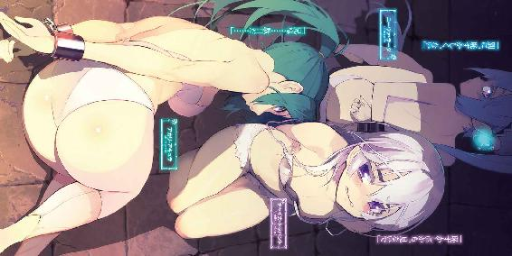

| 棺姫のチャイカIX (富士見ファンタジア文庫) | |
| 榊 一郎 | |
| (2014) | |

棺姫のチャイカⅨ
一郎

富士見ファンタジア文庫
本作品の全部または一部を無断で複製、転載、配信、送信したり、ホームページ上に転載することを禁止します。また、本作品の内容を無断で改変、改ざん等を行うことも禁止します。
本作品購入時にご承諾いただいた規約により、有償・無償にかかわらず本作品を第三者に譲渡することはできません。
本作品を示すサムネイルなどのイメージ画像は、再ダウンロード時に予告なく変更される場合があります。
本作品は縦書きでレイアウトされています。
また、ご覧になるリーディングシステムにより、表示の差が認められることがあります。
口絵・本文イラスト なまにくＡＴＫ（ニトロプラス）
口絵・本文デザイン Lightning
序章 御遣いの誕生
BIRTH OF THE APOSTLE
鼓膜のみならず、全身で浴びるかの様な、容赦無い轟音。
振り返れば巨大な──あまりにも巨大で遠近感が狂う程の、円筒状の構造物が、斜面を滑り落ちてくるのが見える。接地している部分からは、土煙と共に、土砂の『波』が湧き上がり、山肌から抉り出されたそれらは、やがて黒々とした津波となって押し寄せてきた。
航天要塞。
文字通りに、空飛ぶ城塞とも言える巨大建造物。
フェルビスト大陸においては、最大にして最強の兵器だ。
運用に消費される魔力だけでも莫大な戦略兵器だが──何より、その途方もない体積と重量の前では、一個人など小虫にも等しい。それそのものに下敷きにされずとも、その墜落が巻き起こす衝撃波や、土石流だけでも、充分に人間を殺してしまうだけの威力を持っている。存在そのものが脅威──そういう代物だ。
それが落ちてくる。こちらに向かって。
視界に映る全てが、殺到してくる。
まるで断崖絶壁が倒れかかってくるかの様な......壮絶な光景だった。
「......！」
どうするべきか？
逡巡は一瞬だった。むしろ間近に迫り来る破滅そのものを眼にしながら、恐慌状態に陥らなかっただけでも、彼は剛胆であったと言える。採るべき最善手は何か。最適解を導き出すべく、彼の意識は僅かに、目の前で相対していた敵から逸れた。
そしてそれが──隙になった。
「くっ............!?」
彼が、最初に感じたのは腕に食い込む衝撃だった。
続けて熱さが肘の辺りから這い上がり──痛みらしい痛みが生じたのは、更にその後である。だがそもそも異常な状況下で興奮していた為か、それは予想より遥かに小さなものでしかなかった。
まるで何か悪い冗談の様に、自分の腕の肘から先が──身体から離れて空中に舞う。
普段なら、決して後れをとる様な相手ではなかっただろう。
明らかに雑兵──斬り付けてくる動きはひどく雑、防具も武器も軍が支給する大量生産品で......しかも質の悪さが度々問題になっていたという、末期生産分だと一目見て分かった。食料から武器まで全般的に不足しがちだった戦国時代ならともかく、戦後の今もその粗悪な武器を使っているとなると......道具の善し悪しも分からない程度の二流なのだと、自ら告げている様なものだ。
だが......そもそも刃付けをしていない、訓練用の鉄剣でも、当て方によっては指の一本や二本、落ちてしまう事がある。使い手は意識的に、確実に、その状態を造り出すやり方を──いわゆる『技』を心得ているが、そうでない素人でも、偶然に達人と同じ結果を生み出す事は在る。
「──!?」
空中を舞う彼の腕の向こうで──斬り付けてきた雑兵もまた、驚きの表情を浮かべていた。咄嗟の一撃で、ここまで綺麗に相手の腕を斬り落とせるとは思っていなかったのだろう。幾つもの偶然が重なった結果だ。
こういう事が在るからこそ、本物の戦場は恐ろしい。
斬り飛ばされた己の腕に構っている余裕は無い。
土石流は既に目の前にまで迫っていた。
そして──
............
「............」
唐突に時間が──飛ぶ。
暗転。
気がつけば、薄暗い部屋の片隅に座っている自分が居た。
此処は何処だろうか。
見覚えは無い。というより周囲が微妙に暗く──部屋の広さがよく把握出来ない。壁が見えない。天井も見えない。空気が動いていないので、恐らく部屋の中だと分かる程度だ。
それとも、全ては単なる錯覚か。
人は死の間際に、それまで生きてきた人生の記憶を、反復して視ると言うが......してみれば自分はやはり今、死につつあるのか。恐怖や焦燥で、一瞬がやたらに長く感じられるのと同じ様に......今の自分は土石流に押し潰されて死にかけており、その際に視る幻想の只中に、精神が囚われた状態であるのか。
よく分からない。
分からないといえば──
「......私......は......」
そもそも自分は何者だっただろうか？
名前すらもが思い出せない。記憶が無いというよりも、全てが断片の様になっていて、相互に繫がらない様な、互いの関連の上で意味を見いだせない様な、ひどくもどかしい印象だった。
しかし......
「──私は直接、この世界に、物理的な干渉をする事は出来ない」
今この瞬間に自分が感じているものが、幻想であるならば、目の前にふと現れて語りかけてくるこの少年もまた、死の間際に視る夢の産物か。
金髪碧眼の、整った容姿の、だが、何処かひどく噓臭い──少年。
人形の様に、いや、まさしく幻影であるかの様に、生身の匂いと熱が感じられない。気配が無い。確かにそこに姿は見えているというのに。
「......誰だ」
「だが、エンペリオンの暴走を防ぐ為には、物理的な干渉の出来る駒、この界面において実体を持つ『御遣い』が必要だ。以前はそれすらも禁じられていたが、エンペリオンの計画が現在も進行中である以上、非常事態と判断して特別処置を執る」
問うても少年が答える様子は無い。
ただ淡々と、何かを暗誦しているかの様に言葉を繫げているだけだ。
その言葉の大半も、意味のよく分からないものだった。
「......誰だ」
「しかしこの世界の本来の流れに影響を加えてしまうのは、やはり望ましくない。如何に非常事態とはいえ、最小限に留めるべきだろう」
「......誰だ」
「それ故に──」
繰り返される彼の問いに──しかし少年は答えない。
あるいは目の前に居る様に見えていても、やはりこれは幻か何かで、過去の事実を再現しているだけなのか。ならば返事が無いのも当然だが──
「──一度『死んだ』君にその役目を与える」
その硝子玉の様な双眸を彼に向けて、少年はそう言ってきた。
『死んだ』？
それはつまり......自分は、やはりあの航天要塞の墜落に巻き込まれて、あるいは斬り落とされた腕の出血のせいで、死亡したのか。此処に居て思考を転がしているのは、あるいは生きていた自分自身とは違う、ただの残像、痕跡、残り香の様なものなのか。
それとも──
「君は『御遣い』として私に代わり、我が目的の為に動くのだ」
「......誰だ」
彼はそう言って──ふと、こう付け加えた。
「騎士は名も知らぬ相手に仕えたりはしない」
咄嗟に出てきたのは、そんな言葉なのだが。
自分は騎士だったのだろうか。分からない。名前も分からない者が、肩書きだけは思い出せるというのもおかしな話である。それとも身に染みついた何かが、身の内を流れる何かが、無意識の内にそう言わせているだけか。
代々続いた騎士の血脈。
人間である前に騎士たらんとする──
「......ふむ」
少年は首を傾げて彼を見つめてから──小さく頷く。
路傍の石に向けるかの如く、何の感慨も含まぬ眼差しは変わらない。
ただ......
「......私の名はギイと呼ぶが良い。大した意味は無いが」
何処か枯れきった老人の様な口調で──少年はそう告げてきた。
第一章 乱破師の適格
ELIGIBILITY OF SABOTEUR
トール・アキュラは乱破師である。
物心つく前に拾われ、乱破師の村──アキュラの里で育てられた。母の乳の代わりに薄めた毒入りの重湯を飲み、玩具の代わりに手裏剣を与えられ、戦場で果てる事こそが本懐、と教えられてきた生粋の乱破師である。
アキュラの里の者の多くは、彼と同様の生い立ちだ。
里を構成する単位として便宜的に『家族』の体裁をとっているが、親子や兄弟姉妹であっても、血の繫がりが必ずあるとは限らない。アキュラの里とは、つまり乱破師という『製品』を生産するという目的の下に結成された、工房の様なものだった。
だが......徹底したその乱破師育成組織たるアキュラの里においても、当然、一定水準に達しない『不良品』が生じる事になる。
それは多くの場合、身体能力的な不足であるが......肉体面では何ら問題が無い一方で、精神面にある種の問題を抱えていて、『乱破師としては不適格』と判断されてしまう者も少なからず居る。
乱破師は憧憬や崇敬の対象ではない。
彼等は、その実力を以て恐れられてこそ、存在価値が在る。
故に──〈戦魔衆〉の名が、常に戦場において畏怖を以て語り続けられる為には、彼等の様な『不良品』の『出荷』は見合わせられる事になる。戦場に出る事無く、里の中で野良仕事や雑務をこなしながら一生を終えるのだ。
未だ最終的な判断は下される前であったが──あるいはトール・アキュラもそうした不適格者であったのかもしれない。
幸か不幸か、彼にその烙印が押される前に戦国時代は終了し、アキュラの里も消滅──権力者達の弾圧を恐れた里の者達は、早々に逃散してしまった。
他の者達が今、何処で何をしているのかはトールも知らない。元々戦場においては同じ里の出身者同士で敵対する場合も少なくない為......アキュラの乱破師達の、里に対する帰属意識は低いのだ。
ともあれ──
「くっ......！」
だんッ！ と拳を打ち付けられた壁が音を立てる。
だが、それだけでは苛立ちを抑えきれず、彼は血が出る程に強く唇を嚙んだ。
「俺は......」
トールは乱破師には向いていない。
これは同じ里の者から幾度となく言われてきた事だ。
その理由の最も顕著な部分が、この性格である。
喜怒哀楽の波が激しい。激情を意志の力で圧殺出来ずに表出させてしまう。場合によっては、行動に私情が著しく影響を与える。戦場においては汚れ役──狗よ、虫よ、と蔑まれる事も多い乱破師は、自分の感情を思考から切り離して、ある種の機関の様に稼働する事が求められる。だがそれが、トールには徹底出来ない。
なまじ身体能力が秀でていただけに......これを惜しむ者も多かった。どうも里の者達はトールに対し『不適格』の烙印を押すのを躊躇っていた節がある。そうこうしている間に戦国時代は終了し......トールは戦場に出る機会を失ったのだ。
「──トール」
苛立ちを持て余すトールの背に──鈴の音の様な声が投げ掛けられた。
部屋の壁際に立って彼を見つめている、小柄な少女のものだ。
まるで黄金を延べてそのまま糸にしたかの様な、鮮やかに燦めく豪奢な金髪と、陶器の様に滑らかで白い肌と、そして宝玉の様に鮮やかな紅を湛えたその双眸と......それらを絶妙の均衡で配置された顔立ち。見る者の溜息を誘う程に愛らしく、その一方で脆弱な印象は微塵も無い。むしろ猫の様に──小型だが狩猟性の獣の様に、その表情や仕草の端々には、ある種の猛々しさすら垣間見える。
その姿は、一流の工芸師が創り上げた人形の様だ。
完璧に過ぎて、何処か浮き世離れして見える程だ──という点も含めて。
少女の名はフレドリカという。
姓は無い。必要に応じて『スコダ』姓を名乗る事は在るが──武芸大会の登録の際などだ──彼女に本来、姓は無く、名も無かった。少なくとも『東の六四五』などという呼称を人間の感覚では名前と呼ぶまい。『フレドリカ』という名前すらトールが付けた仮のものに過ぎない。
フレドリカは人間ではない。
棄獣──七種の怪物とも言われる生き物の一種だ。
その種族特有の魔法を使い、人間に擬態しているが、本来は装鎧竜と呼ばれる存在である。個体数が少ない事に加え、そもそも装鎧竜は人間社会と関わる事が少ないので、その本来の姿を知っている人間はあまり居ないが。
「どうするの？」
「............」
トールは答えない。答えられない。
フレドリカは先程、部屋の中には居なかったが──耳の良い彼女ならば、トール達の会話を、部屋の外からでも漏らさず聞き取る事は可能だろう。
トールの主......チャイカ・トラバントが『敵』方に囚われた。
同時に彼女の護衛役として傍に侍っていたトールの妹アカリ・アキュラと、旅の同行者であるニーヴァ・ラーダも捕まったらしい。
誘拐の首謀者は、トール達が現在居るこの国──ハルトゲン公国の最高権力者である公王シュテファン・バルタザール・ハルトゲン。代々受け継がれてきた〈饗宴王〉の字が示す通り、この国で定期的に行われる武芸大会の主催者でもある。
つまり『敵』は、このハルトゲン公国そのものだ。
そして......実働役としてチャイカ達を攫ったのは、ハルトゲン公王の配下であるシン・アキュラと〈六ッ星衆〉の乱破師達だ。
その姓が示す通り、シンはトールにとって『兄』にあたる存在であり、乱破師としては先輩格である。
シンは......チャイカ達を人質にした上で、『遺体』の引き渡しをトールに要求してきた。
武芸大会に参加してチャイカの傍を離れる際......万が一の事を考えて、トールはチャイカが今までに集めてきたガズ皇帝の『遺体』を、いつも彼女が持ち歩いている棺から取り出しておいた。そしてこれを隠した上で罠を仕掛けたのである。迂闊に手を出すと、仕込んであった強酸入りの瓶が割れ、『遺体』は全て焼かれ溶かされるという仕組みだ。
遺体の隠し場所や罠の存在にシンが気付いているかどうかは分からない。だが確実を期す為だろう──シンはトール自身が『遺体』を持参する様にと命じてきた。チャイカ達人質はその『遺体』と交換すると。
期限は、武芸大会が終了するまで。
わざわざ多少の余裕がある期日になっているのは......武芸大会の参加者が急に消えれば不審に思う者も出てくるからだ、という話であった。あるいはハルトゲン公王側には他にも思惑があるのかもしれないが、いずれにせよ、武芸大会そのものは通常通りに進行させる積もりである様だ。
「戦っても勝目は無い」
唸る様な声でトールはそう認めた。
シン・アキュラ。
トールとは異なる──一人前で真っ当なアキュラの乱破師。
ほぼありとあらゆる面でトールはシンに敵わない。一時は師事していた事すらある相手である。肉体的にも精神的にもトールに可能な事はシンにも可能で──更にシンには経験の蓄積と組織に属する故の優位性が在る。
「珍しいね」
フレドリカがそう評してくる。
「......珍しい？」
「勝てない相手なら、勝てる状況で戦うっていうのが、トールのやり方じゃなかった？」
装鎧竜の化身は首を傾げてそう尋ねてくる。
確かに卑怯上等、卑劣当然の乱破師に、正々堂々、対等に、という考え方は無い。相手が強いならば先に嚙ませ犬でもけしかけて、弱らせ、疲れさせてから、挑む。自分に有利、相手に不利な状況に引きずり込んで、挑む。そういう状況が無ければ、造り出す。
乱破師の戦い方とは、そういうものだ。
だが──
「その勝てる状況ってのが、思いつかないんだよ」
そもそも人質を握っている時点で、シンの方が圧倒的に有利なのである。
ましてや公王側に所属する──組織や集団に属するシンに対して、ほぼ個人のトールが、自分に有利な状況を造り上げるというのはおよそ不可能に近い。搦め手という方法も在るには在るが、一人前の乱破師であるシンに、その手の策が通用するとも思えない。その気になれば目的の為に爆死する事も厭わない乱破師に......必要と在れば自分を完全に『殺せる』者を相手に、精神面から攻めるなど、水や風を斬ろうとする様なものだった。
「相手は俺と同じ乱破師で、俺の師匠みたいなもんだ。俺が考えつく程度の事は、大体、あっちも考えつくし、俺が出来る事は、あっちも出来る」
基本的な条件が同じなら、半人前が一人前に勝てる道理など何処にも無い。
「じゃあ......」
フレドリカは眼を瞬かせて──あっさりと言った。
「遺体を渡すしかないと思うけど？」
その通りだ。
現状──トールは他の選択肢を見いだせない。
しかし......
「......渡して、チャイカ達が帰ってくる保証は無い」
非情卑劣が当然の乱破師にとって、口約束の信憑性など、病人の譫言にも劣る。
そもそも公王側が『遺体』を求めているのは、彼等の処にも『チャイカ』が居るからだ。
『チャイカ』同士は『遺体』を求めて争う敵同士。
ならば『遺体』を手に入れた後は、後腐れが無い様に殺してしまうのが手っ取り早い。少なくともそうする事で『遺体』を奪い返される後顧の憂いを断つ事は可能だし──トールがもし『チャイカ』の立場なら、それを考慮する。
「んー......」
フレドリカは──しばらく何事か考えていた様だったが。
「あのさ。私は人間じゃないから、細かい事はよく分からないけどね？」
「......なんだ？」
「ドミニカの時もそうだったけどさ」
何事かを思い出そうとするかの様に、空中を見遣りながらフレドリカは言った。
「トールにとって、一番大事なのは、何？」
フレドリカの主であったドミニカは、『妹とスコダ家を守る為に』と竜騎士になる事を選択し、武功をあげて、帰還した。だがその時、既に妹は死亡しており──彼女は、どうして傍についていてやれなかったのかと、散々、悔いたまま病に伏して死んだ。
「私自身は、ドミニカが間違ったとは思ってないんだけどさ。それでも本人が言うとおり、彼女が間違った事が在るんだとしたら、それは、『妹を守る』事と『スコダ家を守る』事を一緒に考えて、優劣を付けてなかった事だと思うんだよね」
「それは──」
咄嗟に否定の言葉が出掛けたのは、何故か。
だが考えてみれば、フレドリカの言う事は正しい。
妹の事を──彼女の命を最優先と考えるなら、ドミニカは竜騎士にならず、そのまま一緒に暮らし、彼女を守る程度の事は出来たかもしれない。最悪、両親の遺した館を売り払い、領地を他人に明け渡す事にはなったかもしれないが、それでも姉妹二人が生きていく程度の事は可能──だったかもしれない。
ではトールの場合はどうか。
「それは、勿論──チャイカの」
「チャイカの望みを叶える事が、トールの、一番？」
「そうだ」
間髪入れずに、そう答えるトール。
これまでにも、幾度か問われそう答えてきた。
その気持ちに偽りは無く、それを成す事にいささかの躊躇も無い。
だが──
「それは、チャイカが死んじゃっても意味がある事なの？」
「なに......？」
「つまりね。チャイカの目的を叶える為に、チャイカが死んじゃっても良いかどうかって事。チャイカの目的達成の為にチャイカの命を棄てるっていう考え方だね」
とんでもない事をフレドリカは言い出した。
あるいはこれは『個』の意識が薄いとも言われる装鎧竜ならではの考え方なのだろうか。
目的を掲げる主体を失っても──それは継続維持されるものなのか？
「普通は無理なんだろうけど、チャイカの場合、目的達成そのものはトールが代行する事が出来るでしょ？」
「それは......」
心技体──そのことごとくが、道具。
目的の為には己の命も使い捨てるのが乱破師だ。
そういう考え方を叩き込まれてきたからこそ、敢えて、その一点に思考を及ぼした事がトールには無かった。即ち──『チャイカの目的を遂げる為に、チャイカを見殺しにする事は可能か？』という事に。
「チャイカは......」
『遺体』を渡しても、チャイカ達が帰ってくる保証は無い。
チャイカの命を──そしてアカリやニーヴァの命を最優先と考えるにしても、これを確実に確保する為の方法が無いのだ。
では『遺体を集める』事を最優先とするか？
その場合、チャイカ達を見殺しにして、トールは『遺体』を集める事になる。そして彼女の『遺志』を継いでやれば──過程はどうあれ、最終的に、トールが全ての『遺体』を手に入れれば、目的は果たされた事になる。
だが──それで良いのか？
チャイカはガズ皇帝の遺体を弔う為に動いていた様だが、既に死んだ者を弔うのは、生きている者の特権であり、責務で──ならばチャイカが死んだ後も、トールがその遺志を継ぐ事に意味はあるのか？
生命か。目的か。
そもそも、どちらかを選び決める権利がトールにはあるのか？
「つくづく俺は──」
乱破師に向いていない。
改めてトールはそう思い知らされた。
一人前の乱破師は、いちいち、こんな事で悩んだりはしない。
シンがもしトールの立場なら、早々に結論を出して──恐らくはチャイカ達を見殺しにする。戦国の世において個人の命とは、大義の為に見捨て得るものであり、また目的や行為について、意味のある無しは乱破師の考える事ではないからだ。
割り切れれば、きっと楽なのだろう。
だが──
「............」
もう一度壁を殴って──トールは短く呻いた。

その淡い薄紫の髪は、持ち主の身長よりも長かった。
蒼でもなく。紅でもなく。その中間の彩り。
未完成というか不安定というか......そんな言葉をつい連想してしまう様な、何処か儚げな印象が、その髪には在る。毛は細く柔らかく、文字通りに絹糸に近い感触だ。迂闊に引っ張ると、容易く切れてしまいそうにすら思える。
持ち主に相応しく、繊細な美しさを備えた髪だった。
「......凄い」
思わずチャイカは、母国語たるラーケ語でそう呟いていた。
この少女が置かれていた環境を思えば......髪は傷んでいても当然である。それどころかきちんと沐浴出来ていたかどうかすらも怪しい。
もっとも風呂事情は、チャイカもあまり充実しているとは言えない。旅の身空ではゆっくりと湯に浸かるどころか、水浴びすらもままならない。多くの場合に、ぬるま湯に浸した布で身体を拭く程度だ。
だからこそこうして──綺麗な水の豊富に流れる川の傍などに来ると、機車を停めて飲み水を汲むと同時に、身体を洗う。
いつもはトールやアカリが見張りに立って、チャイカ一人で水浴びをするのだが、今回は先日増えた旅の道連れと一緒だった。
「......？」
緩い無表情が張り付いた顔で、薄紫の髪の持ち主はチャイカの方を振り返ってきた。
真紅と藍碧と......左右で色の異なる瞳が瞬きする。
髪以上にこの少女の姿を特異に見せているのが、この双眸だった。金銀妖眼。何処か奇妙な貫通力を秘めたその視線に晒されると、心の奥の奥まで見透かされているかの様で、どうにもチャイカは落ち着かない気持ちになった。
ニーヴァ・ラーダ。
それが彼女の名前だ。
だが実の処、どちらが姓でどちらが名なのかもよく分からない。そもそも人間ではなく、生き物であるのかどうかも判然としない。ガズ帝国の遺した魔法技術者達が、金属の骨格と、棄獣の血肉を以て造り上げた──それは『魔法増幅器』である。
散々実験を繰り返された筈のその身体には......しかし特に疵痕も見当たらない。
滑らかな肌には染み一つ無いし、身体の輪郭もごく自然なものだ。胸も尻も小さく全体的に幼い印象が強いが......不健康そうな歪みや弛みの類も、見た限りでは無い。
髪の美しさといい、それは奇跡の様にも思えるが──あるいは変身の魔法を操る装鎧竜の肉体も使って構成されているニーヴァの身体は、多少傷つけられても、それを消してしまえるのかもしれなかった。
「とても綺麗」
そう評するチャイカに──ニーヴァは、笑うでもはにかむでもなく淡々とこう言った。
「相対的な、評価」
「むい？」
「数値化、され、得ない。個人の、感性による、評価。共有は、困難」
「............」
それはつまり、綺麗とか汚いとかそういう評価は、見る人によって微妙に異なるので、例えば身長とか体重とかの様な、具体的な数字の出るものとは違う、という事か。
確かに美醜の基準は人それぞれだ。必ずしも『ニーヴァは美しい』という感覚を他人と共有出来るとは限らない。同意するかどうかはその者固有の価値観に依る。
現に──
「正反対の評価を、受けた事、多数」
「......え？」
「最も多い表現は『おぞましい』及び『気持ち悪い』」
「............」
ニーヴァを造り出した魔法技術者達が、そんな言葉を使うとも思えない。彼等はそれこそ美醜など問題にしていなかったであろう。
恐らくその評価は、ニーヴァの世話係であった亜人兵達によるものだ。
亜人兵達も、普通の人間から見れば異形だ。
そんな彼等がニーヴァを『おぞましい』『気持ち悪い』と評価した背景には──彼等ならではの、屈折した心理が在ったのかもしれない。
同じく『造られた』存在でありながら、あくまでも『人間を基にしてこれに手を加えた』だけの亜人兵に対し、そもそも骨は金属、血と肉は棄獣、生き物かどうかすら怪しいニーヴァ。
『あれよりはマシ』と自分に言い聞かせる事で、亜人兵達は己を慰めていたのだろうか。
だがそれでも──
「私は綺麗と思ったの。それだけだよ」
チャイカは笑って、そう言った。
美しいと自分が感じた、それをただ口に出して表現した、それ以上でもそれ以下でもない。他人がそれに同意しようとしまいと、そんな事はどうでも良い。『自分は美しいと思う』というそれだけの主張で、ニーヴァを『おぞましい』と言った亜人兵達を否定しようという積もりも無いのだ。
ただ、自分がそう感じた。
それは、それだけは、偽りの無い真実──......
「............」
ふと──チャイカの脳裏に仄暗い考えが過る。
何人もの『チャイカ』。
欠落した記憶の一部。
恐らくは〈禁断皇帝〉によって予め仕組まれていたであろう──何か。
それも人類全てに、いやこの世界の全てに影響を及ぼす様な、規模の大きな......
「私......」
既にチャイカにとって、確かなものは何一つ無い状態だ。自分の記憶すら改竄されてしまったものなのかもしれない。今、感じている喜怒哀楽、自分のこの気持ちすら、果たして本物なのかどうか。
「私も......造られた者かもしれない、から」
チャイカは、ぎこちないながらも笑顔を取り繕って言った。
「別にニーヴァが、ちょっと変わった生い立ちでも、気にならないよ」
「............」
ニーヴァの表情に変化は無い。
だが『魔法増幅器』の少女は小さく頷いた。
それがどういう意味なのかはチャイカにも分からなかったが──
「......あの......ニーヴァ？」
「............」
ニーヴァは突然振り返って、その掌でチャイカの顔をぺたぺたと触り始めた。
「な......何？」
「健康的な、頭蓋骨」
「あ......はあ」
「平均的な、形状と、大きさ」
「............」
次にニーヴァはチャイカの頰に指を添えてこれを、下に向けて引っ張った。
金銀妖眼がチャイカの瞳を覗き込む。
「眼球にも、異常は、見られ、ない。標準値」
「............」
「顔面の皮膚に、目立った損傷は、なし。ただ、乾燥気味」
「............」
ニーヴァの掌はやがて頰から首筋へと降りていく。
同時に指先もチャイカの肌を押したり、撫でたりと、細かい動きを示している。
それはまるで愛撫の様だが──
「あ......ちょっと......くすぐった......」
「頸骨、及び、その周辺の、筋肉にも、目立った偏り、歪み、腫れは、見受けられ、ない。標準値の、範囲内」
「......それは、えっと......ありがとう」
何となく礼を言ってから──ふと気付いた。
これはひょっとして『綺麗だ』とニーヴァを評した事への『お返し』なのだろうか。
だが相対的な評価に対して否定的なニーヴァは、絶対的な判断基準でチャイカの容姿を評価しているのかもしれない。健康的であるという事、平均値、標準の範囲を逸脱しないという事は、つまり、均衡のとれた肉体であるという事なのだから。
「更に、鎖骨、肋骨......標準形態」
「ひわっ？ いや、ちょっと待っ......」
さわさわと身体を撫で回すニーヴァの手に、思わず変な声が漏れるチャイカ。ニーヴァは相変わらず無表情だが──素肌を撫で回されていると、何だかしてはいけない事をしているかの様で、焦る。
「胸部、胸囲の面に、おいて、やや標準値を、下回る」
「よ、余計なお世話──」
「が、機能的な問題、は、発見、出来ず、乳頭部の──」
「......ひゃっ!?」
遠慮無く敏感な部分を触ってくるニーヴァの指に、悲鳴じみた声を上げるチャイカ。
思わずニーヴァの手を摑んでこれを止めようとするのだが、意外にニーヴァの腕の力は強く、身体検査はそのまま続行される。
「や......ちょっ......!? そこは──」
「脇の下、腋窩腺──」
「や......ひゃ......!?」
............
「だ、駄目っ......！」
思わず出した自分の声で──眼が覚めた。
「............？」
仰向けに寝た状態で、眼を瞬かせるチャイカ。
一瞬、自分がどういう体勢なのか分からずに混乱する。
「......ニ......ニーヴァ......？」
目の前、鼻の頭が触れそうな距離に、ニーヴァの顔が在ったからである。一瞬、夢の続きかと思ったが、今の彼女はその薄紫の髪を頭の左右で括っている。
「はい。私、ニーヴァ・ラーダ」
こっくりとニーヴァが頷く。
チャイカはおずおずとラーケ語で尋ねた。
「何してる......の？」
「チャイカの顔を、上から、見て、いる」
そのまんまだった。
真上から顔を覗き込まれているという体勢であるからか──顔の上に落ちるニーヴァの影が妙に重い気がする。身を起こしたくても起こせない状態だ。
どうも床の上にそのまま仰臥している様なのだが。
そもそも自分は、どうしてこんな場所で寝て......
「──アカリ!!」
思わず勢いよく身を起こしたチャイカは──当然ながらニーヴァに思いっきり頭突きをかます事になった。
脳に突き抜ける様な衝撃が走る。
「つっ......ぅぅうう～～～～～!?」
「............」
思わず痛みに己の頭を抱えるチャイカに対し、ニーヴァの方は......不思議そうに眼を瞬かせつつも、平然としている。石頭ならぬ金頭──金属の骨格を持つこの少女に頭突きをかませば、当然、痛い目を見るのは生身の人間の方だろう。
「......激痛」
チャイカは──額を押さえようとして掲げた両手に、手枷が塡められている事に改めて気付いた。手枷は鋼で出来ており、手首に塡められた環を鎖で繫ぐ形になっていた。ある程度の自由は利くが、大きな動きは出来ない、そんな造りである。
更に、服は脱がされており、チャイカもニーヴァも共に半裸──下着姿。
いつも傍に在る黒い棺も、そしてその中に収納している愛用の魔法機杖も、無い。
「............」
間抜けな話だが、ようやくチャイカは思い出した。
自分達は囚われたのだ。
シンという名の乱破師──トールやアカリの先輩が、ハルトゲン公王側に居て、別流派の乱破師達と共に襲ってきた。咄嗟にアカリはチャイカ達を守って彼に対抗しようとしたが、シンの方が一枚上手だったらしく、あっさりと倒されてしまった。
その後、チャイカも何やら薬を嗅がされて気を失い──
「アカリ、アカリ!?」
チャイカは、慌てて辺りを見回す。
壁と床と天井、六つの平面で一定の場所を切り取っただけの、殺風景な部屋だった。
扉は頑丈なものが一つだけ、窓は換気用のものらしい、小さなものが天井付近に幾つか......だが、とても人の通る事が出来る大きさではない。細長い切れ込みの様なもので、精々、手を伸ばしても手首まで外に出せるかどうか、といった程度だ。
部屋としてはむしろ広めだが、だからといって囚われの身で感謝する謂われはあるまい。ましてや手枷に加え足枷までも塡められて、ろくに身動きがとれない状態であるから、尚更に部屋の広い狭いなど、さして意味が無い。
「──アカリ！」
ぐるりと周囲を見回しても目当ての人物は見つからず......チャイカは最後に身をひねって背後を振り返る。
乱破師の娘はチャイカのすぐ背後、壁際に、やはり半裸で転がされていた。
「アカリ!?」
チャイカはアカリの傍に跪く。
アカリはシンと戦い、傷を負い、更には腹も殴られていた筈だ。最悪──内臓破裂を起こしている可能性も在る。もっともこの場でチャイカが焦った処で、応急手当すら満足に出来はすまいが。
アカリは──
「............」
眠っていた。
チャイカが気を失った後、彼女も同様の方法で眠らされたのだろう。見た限り呼吸は安定しているし、手裏剣の傷には簡単な止血の処置が施してあった。それを敵方の温情と考える程に、チャイカも馬鹿ではない。失血死でもされては人質として役に立たない──シンなり乱破師達なりが、そう考えただけだろう。
「アカリ......！」
チャイカは先程、自分がされていたのと同様にアカリの顔を覗き込む。
すると──
「兄様......」
アカリが譫言の様にそう呟くのが聞こえた。
だが彼女は起きていない。寝言だ。
アカリもまた夢を見ているのだろうか。
だとすればどんな夢なのか。どうやらトールに関係しているらしい事は寝言からも分かるが──普段から妙な言動の多いこの乱破師娘の見る夢となると、チャイカには想像もつかない。案外、トールと仲良く風呂で背中を流し合っている夢かもしれないが。
「兄様......駄目だ......」
何処か──妙に悩ましい声でアカリが言った。
普段の彼女は感情が無いかの様に淡々とした物言いが多い為、その声は何やら妙に印象に残る。眠ったままアカリは小さく首を振ってこう続けた。
「......アカリ？」
「そんな......ところ......」
「............」
「舐めるなんて......汚い......」
「............ア、アカリ!!」
何だかよく分からないが、このまま夢を見させておくと非常にまずいような気がしてチャイカはアカリに一際大きな声で呼び掛けた。
だがそれだけではアカリが起きる気配が無い。
とりあえず掌でぺちぺちとアカリの頰を叩いてみた。
すると──
「──兄様ッ!!」
くわ！ と眼を見開いたアカリが、猛烈な勢いで身を起こす。
当然、彼女の上に屈み込んでいたチャイカは──立場は逆だが先程と同様に──アカリと額を激突させる事になった。
「つっ......!!」
「ぐっ......!?」
呻き声を上げるチャイカとアカリを、無表情に眺めるニーヴァ。
チャイカは痛みを堪えて己の頭を抱え、対するアカリはというと、しばらく右に左にと身体を揺らしながら虚ろな眼で虚空を見つめていたが──
「兄様、酷いではないか」
とチャイカの方を向いてアカリは言った。
「いかに美味いからといって、鍋の底どころか裏側まで舐めるなど、やはり汚いではないか。腹を壊すぞ。私は兄様の為を想ってそう忠告しているというのに、頭突きをかましてくるなど、一体どういう了見──」
そこまで言って。
「......兄様」
アカリは二度三度と瞬きを繰り返して──言った。
「少し見ない間に随分と背が縮んだな」
「むい!?」
「一体どうしたのだ、兄様」
「......アカリ？」
「あんなに真っ黒だった髪も真っ白──いやこれは銀髪か？」
「............」
「瞳の色まで変わって......？」
「............アカリ、寝惚け禁止」
「むう。待ってくれ兄様──」
手枷のついた両手で口元を覆い、アカリは唇から漏れる驚きの声を抑える。
「その股間はどうした事だ!? まさか去勢を？」
と言うアカリの両眼は、下着姿のチャイカを──その股間を見つめていた。
「......アカリ、頭、強打......？」
恐る恐る声を掛けるチャイカ。
ひょっとして、頭突きで当たり所が悪くておかしくなったのか。
そんな不安を覚えるチャイカに──しかし夢の続きを見ているのか、彼女の事をトールと間違えているらしいアカリは大きく首を振った。
「なんという事だ。だが安心して欲しい兄様」
「......むい？」
「私はついていようがついていまいが、兄様への敬愛は変わらない」
「............」
「あ......いや待ってくれ。ひょっとして姉様と呼んだ方が良いのか......？」
「トール違う。私、チャイカ」
よく見ろと言わんばかりに己の顔を指さしながらチャイカは言った。
するとアカリは怪訝そうに眉を顰めて──
「そんな。名前まで変えたというのか!?」
「アカリ。とてもとても要請。覚醒」
途方に暮れてチャイカはそう乞うた。
この三人揃って囚われの身で、ほぼ身ぐるみを剝がされ、しかもアカリまで正気を失ってしまったとなると、状況のひどさに目眩がしてくる。
だが──
「分かっている。殺伐とした状況を和ませる為の、おちゃめな冗談だ」
にこりともせずにアカリはそう応じた。
「アカリの冗談。理解不能」
呻く様に言うチャイカ。
どうもこの乱破師娘の感性は理解し辛い。トールを見ていると別にそんな事も無いので、これは乱破師特有という訳でもなく、アカリの個性なのだろう。
とはいえ、咄嗟に冗談が出る位なら、アカリの体調も最悪という訳ではあるまい。
「......う」
安堵を覚えると同時に、ふと肌寒さを感じてチャイカは身を震わせた。
その時──
「──寒いか」
ふと声が掛かる。
アカリからでもニーヴァからでもない。
「......!!」
チャイカは愕然とその声の主を見つめた。
いつからそこに居たのか......？
部屋の出入り口と覚しき扉の脇──壁に背中を預けて立っている男が一人。
長い黒髪を後頭部で括って束ねた髪型と、やや切れ長の双眸が印象に残る。
端整だが──それ故に目鼻立ちに癖が無い。体付きも中肉中背。これで平凡な衣装に身を包めば、容易く雑踏の中に紛れ込んでしまうだろう。印象的な髪型を変えてしまえば、途端に見失いそうだった。
あるいは、この男は、そこまで計算して自らの容姿を『作って』いるのかもしれない。
男の名はシン・アキュラ。
トール、そしてアカリと同じアキュラの里の出の乱破師である。
「悪いが我慢して貰うしかない」
言葉とは裏腹に、まるで罪悪感など滲まぬ平然とした口調で、シンはそう言った。
「乱破師やその関係者を、完全に武装解除する為には、ひん剝くしかなくてね」
「......武装解除？」
「我々はその気になれば体内にも武器を仕込む」
首を傾げるチャイカにシンは言った。
「肋骨を予め一本摘出しておいて、その中に刃物を仕込んで戻す、とか、歯を抜いて代わりに短い鋼糸を丸めて詰め込んでおく、とか」
「............」
とんでもない事を言い出したシンに、チャイカは眼を丸くする。
骨や歯に偽装して武器を体内に仕込んであるなら、服の上からどれだけ見ようが触れようが、それとは分かるまい。だが身体を切り開いて武器を仕込むとなると、どうしても身体に手術の痕が残る。服を剝いだのは、衣装の裏や隙間に仕込んだ武器を調べるという他にも、身体そのものを調べるという目的が在ったらしい。
改めてチャイカは、トール達がしばしば口にする『己の心技体全てが道具』という言葉の意味を、思い知らされた気がした。
「そこまで徹底せずとも──糸で括った小袋に武器を入れておいて、いざとなったら、胃の中から取り出す、とか。あるいは女なら男よりも隠す場所も多い」
「......？」
一瞬、意味が分からず首を傾げてから──ようやくチャイカはシンの言っている事を理解してより顔を赤くする。一方でアカリはやはり表情を変えず、シンを見据えながら平坦な口調で言った。
「その割には調べていないな。猿轡も嚙ませていない。乱破師を扱うには、随分と中途半端だな、シン兄」
一応は同じ里の出身者、しかも『兄』と呼んでいる事からも知り合いだと分かるが......アカリのシンに向ける眼はただひたすらに冷たい。元より愛想の類には乏しい娘だが、少なくとも今の彼女は、シンをはっきりと敵視している様だった。
「──乱破師の半歩手前が、一人前の事を言う」
苦笑してシンがそう応じた。
「半人前の扱いなど、これで充分。勿論、徹底的に調べて欲しいというのなら、調べてやらん事も無いがな。城の兵士達の前にそのままの格好で放り出せば、嫌でも調べてくれるだろうさ、隅から隅まで──奥の、奥までな」
「............」
アカリは無言。
勿論、シンの言葉の意味が分からない訳ではなかろう。
「だがアカリ、お前は〈鉄血転化〉を修得していたからな。迂闊な事をするとそのまま自決されかねない。それではトールに対する切り札の一つをむざむざ失う事になるからな」
「......？」
意味が分からず、チャイカは眼を瞬かせてアカリの方を見る。
アカリは答えなかったが──
「〈鉄血転化〉はいわば、肉体を暴走状態にして強制的に力を引き出す技だ。だが限界を超えてこれを続けると、肉体が内側から──自ら壊れ始める。むしろその暴走状態を更に高めてやれば、脳や心臓の血管が破裂して、死に至る。わざわざ毒薬を隠し持っておいたり、舌を嚙んだりする必要が無い」
平然とシンはそんな事を言ってきた。
チャイカには、〈鉄血転化〉に対して『乱破師達が、己の能力を一時的に、爆発的に、向上させる技』という程度の理解しか無かったのだが......どうやら、使い方を誤れば自らの首を絞めるものであったらしい。
「しかし呆れたぞ」
シンは再びアカリに視線を向けるとそう言った。
「お前は、未だにトールにくっついているのか」
「............」
アカリの無表情が僅かに揺れる。
シンは眼を細めて、畳み掛ける様に続けた。
「いい加減、兄離れ、いや、独り立ちしろ」
「──私はトール兄様についていく」
アカリが呟く様に応じた。
「それはもう里に居る頃から決めていた事だ。私の命はトール兄様のものだし、トール兄様の足手まといになる位なら、死ぬ」
覚悟を示すなどという様な、力の入った物言いでは無い。それはもう、どうしようもない位に自明の事を告げるかの様な、静かな口調だった。
「くだらん」
肩を竦めてシンは言った。
「お前は、未だハスミンの一件を自分のせいだと想っているのか」
「......？」
チャイカはシンとアカリの間で視線を往復させる。
ハスミンとは、確か、アキュラの里の出入り商人の娘で──トールが、その死を今も引きずっている人物だった筈だ。言ってみれば、彼が再び戦乱の到来を望む事の、根本的な原因となった事件の当事者である。
だが......その一件について、アカリの話は出てきていない。
アキュラの里が関わっていたのだから、アカリもハスミンとは顔見知りであった筈だが、トールの昔話では全く言及が無かった。その事から、チャイカも特にアカリとハスミンを繫げて考える事は無かったのだが......
「くだらん」
シンはそう繰り返した。
「細かい事をいちいち引きずるのが、半人前の証拠だ。お前も、トールも、技と体はアキュラの里においても屈指の仕上がりを見せていたというのに......肝心の、それを駆使する心が弱い。無意味に固くて脆い」
冷酷非情は乱破師の基本。
心技体の全てを道具にするとは、つまり、ありとあらゆる事に私情を挟まず行動出来るという事に他ならない。逆に言えば、私情に引きずられている限り、トールもアカリも半人前だ、というのがシンの考えであるらしかった。
「だが、だからこそ、俺はお前達のそんな部分を利用出来る訳だがな」
シンは苦笑を浮かべてそう言った。
「よくぞ生き残った」
寂を含んだ低い声がそう告げた。
ゲランソン城──城内。
この城は数代前のハルトゲン公王が築城したもので、当然ながら戦時中の考え方を色濃く反映している。城壁は二重に施され、城の本体は更にその内側だ。籠城戦になった場合でも、敵を『一の城壁』と『二の城壁』の間に、あるいは、『二の城壁』と城本体の間に引きずり込んで、包囲し叩く、という戦法が採れる様になっている。
この為、城壁と城壁の間、あるいは城壁と城本体との間には、かなりの広い地面が確保されており......『一の城壁』と『二の城壁』の間には廏舎や幾つかの土蔵が散在し、『二の城壁』と城本体の間には、兵舎や、大型魔法兵器の整備場などが置かれている。
今......ゲランソン城本体のバルコニーに立つのは、その主シュテファン〈饗宴王〉ハルトゲンである。
彼の眼下に広がる広場には、幾筋もの列を成して人影が並んでいる。予選通過の五十組──総計百名。そしてその付き人百名余り。
彼等は入城を許され、広場のすぐ隣──『二の城壁』と城本体の間に在る兵舎で武芸大会が終了するまで寝起きする事になっていた。内壁たる『二の城壁』の内側にまで大量の部外者を入れるのは異例だが......ハルトゲン公王の思惑としては、武芸大会参加者達がつまらないいざこざを起こさないよう、目の届く範囲に置いて監視する──という事なのだろう。武芸大会の参加者には、どうしても荒くれ者が多い。
「既にこの場にいる者達は、いずれも劣らぬ猛者揃いなのであろう」
満足げに微笑を浮かべてシュテファンは言った。
「だが強さとは時に様々な顔を見せる。強者も、一瞬の気の緩みから弱者に刺されて果てる事もある。強く在る事、それそのものを求めるならば、いつ如何なる時にも、負けぬ、他の者よりも一歩、いや十歩ぬきんでた力が必要になる」
シュテファンは──まるで今から戦陣に出向くかの様に、完全武装の姿であった。
空中に専用の大型魔法機杖に跨がった航天機兵の姿が見える事を想えば、恐らくシュテファンのこの姿も、城外の武芸大会観戦場へと送られているのだろう。魔法を使えば遠隔地や壁の向こう側に何かの光景を送り届ける事も出来る。
シュテファンのこの姿は──選手達への敬意と共感を示すと同時に、武芸大会を見に来ている領民や異国の観客達に対する、一種の宣伝を兼ねているのかもしれない。いずれにせよ、その姿は、彼自身が武芸大会に参加しても何ら違和感のない程に、堂々としていて、見事なものだった。
「さあ──各々の身体に刻み込んだ武の冴えを見せてくれ」
「............」
トールは──公王の話を聞き流しつつ、周囲に視線を飛ばした。
兵舎の前に居並ぶ本戦参加者達の中には、勿論、トール達と共に予選を通過した紅チャイカとダヴィード、そしてヴィヴィとニコライの姿が在る。更にフーゴと、その仲間らしい者達が三名、つまり二組ばかりの姿も──だ。
（この際、あの連中はどうでもいい）
トールはフーゴ達の存在を一旦、思案の脇に置いた。
フーゴ達は元々ハルトゲン公国の国教であったナザ真教の僧侶やその熱心な信者達であるらしい。今代のシュテファン・ハルトゲンが数年前に国教認定を取り消し、事実上の弾圧を始めた事で、公国に対して......というよりもシュテファンを唆したという養女の二人イリーナとアリーナに対し、相当な反感を覚えているらしい。
勿論、彼等は武芸大会で優勝し、公王家に仕えたり、優勝賞品を獲得する事を求めている訳ではない。彼等の目的はあくまで、城内に侵入し、イリーナとアリーナを暗殺、シュテファン・ハルトゲン公王を『改心』させる事である様だった。
だがその手の事情についてトールは興味が無い。
共闘を持ちかけられはしたが、公王の養女二人に対する憎悪で冷静な判断の出来ない連中と組んでも、脚を引っ張られる事こそあれ、トールの側に利になる事は無い。精々、彼等が暴れた際に、囮として使える位のものだろう。
（問題は──いかにも『チャイカでござい』ってな風の『紅』とジレット隊の二人だ）
どちらも対戦相手として当たれば、少々、面倒である。
（試合に出ろってのは、あいつらも倒しておけって事なんだろうしな）
シン・アキュラがチャイカ、アカリ、ニーヴァを人質にとってトールに要求してきたのは、『遺体』の引き渡しと同時に、武芸大会への参加継続である。細かい事をシンは言ってはこなかったが、それはつまり、他の『チャイカ勢』も倒し、『遺体』の全てを差し出してこいという意味だろう。
ハルトゲン公王側は、恐らく、誰が幾つの『遺体』を持っているのかを知らない。
少なくとも『紅』が先の島で、脱出手段の提供と引き替えに、一旦、『遺体』をトール達の側に差し出しているという事実までは知るまい。だから『紅』やジレット隊が『遺体』を持っている可能性についても、考慮している筈だ。
そして同時に──『遺体』を奪い返される可能性を減らす、という意味で、出来れば紅チャイカやヴィヴィは排除しておきたいだろう。当然、トールとぶつけておけば一石二鳥、という考え方になる。
だが......
（紅チャイカとダヴィード、ヴィヴィ・ホロパイネンとニコライ・アフトトル......）
どちらの組も強敵だろう。
後々の切り札として、出来るだけフレドリカの魔法を温存する──使わずに戦うとなると、何かと苦戦を強いられるのは必至だ。
そんな事を考えながら彼等の方を見ていると──
「............」
ふと、紅チャイカと視線が合った。
彼女は一瞬、複雑な──困った様な、怒った様な、何とも判別のつかない表情を浮かべた。だが、すぐにそれを消して、視線をバルコニー上のシュテファンへと戻す。
まるで、未練や逡巡を断ち切ろうとするかの様に。
予選では共闘する事になったが、此処からはもう完全に競争相手だ。
概ねトールと同じ様な事を向こうも考えているのだろう。
（くそっ......俺は何をやってんだ）
トールは胸の内で圧を高める苛立ちを少しでも逃がそうと、短く溜息をつく。
考えるべきは、チャイカと『遺体』の事である。
目的か。生命か。優先すべきはどちらか。
結論は未だ出ていない。
良くも悪くも、それはこの武芸大会が終了するまで──少なくともトール達が優勝するか、あるいは敗退するかが決まるまでは、保留出来てしまう。
だが......
「──トール」
横でフレドリカが──今はドミニカの、つまりは成人女性の姿をとっている──促す様に声を掛けてきた。
気がつけば......シュテファンの話は終わっていた。丁度、ハルトゲン公王が、紋章の刺繡が入った外套を翻しつつ、バルコニーの上から立ち去る後ろ姿が見える。
「で──これから、どうするの？」
「............」
トールは曖昧に首を振って、もう一度溜息をついた。
その日は特別だった。
朝から里の空気が違うのだ。
「......兄様！」
未だ乱破師としては半人前のアカリにも、それははっきりと感じ取る事が出来た。
気配などという難しいものではない。さすがに皆がはしゃいだり浮き足立つ様な事は無い。だが多くの里の者......特に子供や若者達は、常日頃より言葉数も多く、表情も明るい。
乱破師といえど感情が無い訳ではない。
一人前の乱破師はそれを押し殺す術を知っているというだけで、彼等とて人間である以上、何かを嬉しく思ったり楽しく感じたりする心を持ち合わせている。未だ修行半ばの若い者達ならば尚更の事である。
隠れ里たるアキュラにおいて──外部の人間の来訪は特別なのだ。
たとえそれが馴染みの相手であったとしても、時が停まったかの様なこの隠れ里に、それは外の、慌ただしくも芳しい空気を運んできてくれる。
「......トール兄様！」
里の中央広場を抜けて東の『門』へ。
アキュラの里をぐるりと取り囲む『結界』......里の境界線として設けられている柵の切れ目に、アカリは探していた人物を見つけて駆け寄った。
「──アカリ」
トールは己の装備を調えている最中だった。
腰には双機剣を提げ、身を包むのは暗色の乱破装束である。ぱっと見には分からないがあちこちに手裏剣やら煙玉やらも仕込んでいる事だろう。
勿論、初陣も未だの彼がこうした格好をするのは珍しい──というより初めての事である。特に乱破装束の方は他の者のお下がりで、彼に合わせて仕立てられたものではない。お陰で何処かちぐはぐというか、微妙に各所の大きさが合っておらず、全体として馴染み切れていない印象がある。
だが──
「商隊を迎えに出るのか」
「ああ。ハスミン達を迎えに行くんだ」
アカリの問いに笑顔でトールは答えた。
嬉しくてしょうがない──といった様子である。恐らく今の里の中で最も喜びの空気を振りまいているのはこの少年だろう。良くも悪くも素直なトールは、内の感情が直ぐに表に滲み出てくる。
アキュラの里は数か月に一度、巡回商人を迎え入れる。
基本的に隠れ里であるアキュラは外部との繫がりに乏しい。それ故、自給自足のきかない諸々の生活用品を運んできてくれる巡回商人の商隊は、アキュラの者達にとって非常に重要な存在だった。
こうした巡回商人の商隊は、アキュラ側が選び、里に入る事を許した相手である。既に数代にもわたって彼等の出入りは続いており、里の者からすれば誰もが商隊の者とは顔馴染み──つまり乱破師でこそないものの、身内に準じる存在だった。
だから巡回商人がやってくる日には、里から『迎え』が出る。
元々アキュラの里に入る経路は幾つかあるが──いずれも主要街道から大きく逸れて細い山道や獣道とも言うべき隘路を通らねばならない。また季節や天候によって土砂が緩んで地滑りの危険が在ったりもするので、その時々によって違う道を選ばねばならないのである。
これはアキュラの里を天然の要塞たらしめている要素である訳だが、当然、巡回商人の側にとってみれば不自由極まりない。彼等は大型の馬車に荷物を満載しているので、隘路では方向転換も出来ず、間違った道を選んで進めば、そのまま山の中で立ち往生せざるを得ない。
また......主要街道から逸れれば、途端に人の眼が減る。
それはつまり、野盗や山賊の類が出没しやすくなるという意味でもあった。アキュラの里の『迎え』は商隊に対する護衛の意味も含んでいるのだ。
だが勿論、確実に戦闘になる、という訳ではない。
むしろ商隊が襲われる事は滅多に無く、商人達も最低限の自衛が出来る様にと武器は持っている。なので、あくまで護衛は念の為、という程度のものに過ぎない。だからこそこの『迎え』には、未だ乱破師とはとても呼べない様な修練途上の子供を、加える事が多い。いわば新人の予行演習を兼ねているのだ。
そして今回の『迎え』の新人に選ばれたのは、トールだった。
「嬉しそうだな。兄様」
「勿論嬉しいさ。なんたって──」
「兄様はそんなにハスミンの事が好きか」
「──え？ あ、いや、違......っていうかお前、な、何言ってんだよ？」
露骨に慌てた様子でトールは首を振った。
こういう処が今一つ乱破師に向いていない、と周囲から言われている原因なのだが、トール自身はあまり自覚が無い様だった。そういう処を含めてこの『兄』は他の『兄』よりも、いや、他の里の者の誰と比べても、見ていて楽しいとアカリは思うのだが──
「ハスミンはもう結婚してるじゃんかよ。子供だってもうすぐ生まれるんだぞ」
赤面していては何を言っても説得力など在るまい。
アカリは眼を細めて言った。
「トール兄様は実に助平だ」
「な......なんだよいきなり!?」
半眼で決めつけるアカリに対し──トールは一瞬、何を言われたのか分からない、といった様子だったが。すぐに理解したらしく、トールはより顔を紅潮させて叫ぶ様に言った。
「何が、俺の何処が、助平だってんだよ!?」
「いや。おませさんと言うべきだったか」
「だから何を──」
「私は『好きなのか』と問うただけで、別に男女の恋愛感情の話をしている訳ではないのだが。兄様は自分から恋話だと受け止めた様だ」
「............」
ぐっと言葉に詰まるトール。
騙し欺きが仕事とも言える乱破師としては、やはり素直に過ぎると言える。自己弁護にしても、咄嗟に噓八百を並べて他人を煙に巻く位出来なくては......すぐに追い詰められて墓穴を掘りかねない。
「そうか......トール兄様は妊婦が好きなのか」
アカリは大きく頷いて言った。
「......え？」
眼を瞬かせるトール。
「あの大きく膨らんだ下腹部がいいというのか。兄様は。この上級者め」
「なんか変な方向に誤解してないか、お前」
「そういえば兄様は以前、ハスミンが里に来た時も、彼女の腹を撫で回していたな......」
「胎ん中で、子供が動くのを感じさせて貰ってたんだよ！ お前だって触らせて貰ってたじゃねえかよ！ 撫で回すとか言うな！ 人聞きの悪い！」
トールは喚いた。
その時──
「......ん？」
ふと何かに気付いた様子でトールは頭上を見上げる。
その鼻先に──水滴が弾けた。
「──雨」
アカリは呟いた。
山の天気は変わり易い。
この地に住む乱破師達ですら、空模様の変化は読み切れない部分が在る。
ぽつりぽつりと降り始めた雨は──瞬く間に視界を閉ざすかの様な激しい雨となってアキュラの里に降り注いだ。
そして......
「──トール」
ふとトールとアカリの脇に人の気配が湧いた。
いつもの事ながら、神出鬼没だ。
トール達の様な半人前にとっては目指すべき一つの到達点──シン・アキュラ。
彼は既に雨天用の外套を纏った姿でトールに言った。
「お前は家で待機しろ。さすがに雨では予定を変えざるを得ない」
前述の通り......天候によってはアキュラの里に入る為の経路について、それぞれの危険性や利便性が変化してしまう。さすがにこの状況で、現場慣れしていない新人を連れて行くのは面倒──という判断だろう。
「......分かった」
不承不承、といった様子でトールは頷いた。
「──ハスミンの死は」
小さな換気窓から細く月明かりが挿し込む中......アカリは、周囲に満ちる静寂を押しのける様にして、ぽつりと呟く様に言った。
シンが一方的に話すだけ話して──立ち去ったその後。
「私に責任がある」
「......!?」
殊更にチャイカが促した訳ではない。
あるいは単に二人して、なす術も無く、無言で繫がれているというこの状況に、アカリとしても厭いたのかもしれなかった。
「アカリ......責任？」
「元々、ハスミンの居た商隊には、アキュラの里から迎えが出ていた。勿論、儀礼的な意味ではない。護衛だな」
「護衛......」
「大型馬車で通るには、山道は何かと危険だし、主要街道から外れるだけで、山賊だの野盗だのが出やすくなるからな。新人の訓練も兼ねて迎えをやるのが、慣例になっていた」
アカリは自分の爪先を見つめながら言った。
「あの日──トール兄様と、シンの居る班が、迎えに出る筈だった」
だが唐突に降り出した雨の為に、予定は変更された。
未だ半人前のトールは待機を命じられ、先に山道の状態を見る為に、数名の乱破師が斥候役で出る事になった。同時に商隊の方にも連絡を差し向ける事になった。
しかし──
「商隊への連絡が遅れた。もしこの連絡が滞りなく行われていれば、恐らくハスミン達は死なずに済んだろう」
「遅延？ 何故？」
「遅らせたのは──この私だ」
アカリの口調は静かで、いつもの様に、感情の機微も窺い知れない。
だからまるで、他人事を語っているかの様にも聞こえるが──
「先にも言った通り、あの時の迎えは、シンや、トール兄様の居た班で。私は......私の誘った数人の仲間が、予め予定されていた経路に、悪戯を仕掛けた。トール兄様達の行く手に簡単な罠を設置したのだ」
「何故......？」
「特に理由は無い。子供の悪戯だ」
そう言ってから──まるで自分でも今、改めて気付いたかの様に、アカリは眼を瞬かせて、こう付け加えた。
「強いて言えば......認めて欲しかったのだろう」
ほんの一瞬だが、アカリの口元に自嘲的な笑みがかすめた様に見えたが。あるいはチャイカの気のせいであったかもしれない。
「周りの大人達に。シン兄様に、そしてトール兄様に」
勿論、それは怪我人の出る様な危険なものではなかったのだとアカリは言う。
だが『子供の悪戯』とはいえ、その子供はアキュラの里の乱破師の卵だ。折からの雨で視界が悪くなっていた事も手伝い──連絡役はその罠に引っ掛かり、これの解除に手間取ったらしい。当初の予定通り複数で行動していれば、仲間が直ぐに助けてくれたのかもしれない。だが、連絡役という事で、その乱破師も単独行動していたのが、更に仇となった。
結果......連絡役と商隊は行き違う事になった。
商隊が襲われたのは、その直後の事である。
勿論、アカリや、彼女を手伝った他の乱破師見習いも、そんな事が起こるなど、想像もしていなかった。アカリ達が物心ついてからは、アキュラの里に出入りする商隊が襲われた事は無く──誰もが迎えの重要性について、甘く見ていた処がある。
また、商隊の側も何度もアキュラの里に通い慣れていたせいで、合流地点で迎えの到着を待つ事無く、独自の判断で先に進んでしまった事も、原因の一つだったのだろう。
誰が悪いというものでもあるまい。
不幸な偶然が幾つか重なった結果だ。
いずれにせよ、アカリ達の仕掛けたそれは、本来ならば、他愛ない子供の悪戯で終わる筈だったのだ。
しかし──
「トール兄様は私を咎めなかった」
アカリはその両眼を瞬かせてそう言った。
「連絡役が時間通りに着いていれば、ハスミン達は経路を変更し、恐らく山賊に出会う事も無く──死ななかった。つまりは私のせいで、ハスミン達は死んだのだ。その事は兄様も知っていた筈なのだが......」
シンも、他の大人の乱破師達も、それは同様であったという。
アカリは自らの『罪』を自覚しながら、しかし、それを責められる事が無かった。あるいは単に、商隊を襲った下手人達を捕まえて皆殺しにするのに忙しく、子供の悪戯を咎めている余裕など、誰も無かっただけかもしれない。
だがアカリ達の側から見れば、償う機会を与えられなかった──とも言える。
「だから......トールに？」
「そうだ」
アカリは頷く。
償うべき被害者達は皆──死んでいる。
ならばアカリが次に罪滅ぼしをする相手が居るとすれば、それは、彼等の死によって最も悲しみ苦しんだ者ではないか。彼等の死によって、性格や、人生が変わってしまう程の衝撃を受けた者ではないか。
例えばトール・アキュラの様に。
「兄様はあの日からあまり笑わなくなった。そして一歩間違えば死ぬ様な鍛錬を自ら続けていた。結果としてアキュラの里では屈指の実力を持つに至ったが、その一方で、ハスミンの死にこだわる兄様は、乱破師としては不安定すぎると周りから評価された。喜怒哀楽がもろに顔に出る。感情の揺れが能力にも影響する。その傾向はハスミンの死の以前から散見されたが、より顕著になった。結果、乱破師として戦場働きをするには──あまりに脆すぎるとトール兄様は周囲から判断された」
「............」
チャイカは言葉も出ない。
喜怒哀楽を持ち合わせている事が、誰かの死を悼むというその気持ちが、『脆い』と評されてしまう過酷な乱破師達の世界。チャイカ自身は、トールとアカリしか実例を知らなかったので、あまり深く考えては来なかったが──それは確かに、恐ろしく克己心が強いか、元々、非人間的な思考の持ち主でなければ、務まるまい。
だが......
「私がハスミンを死なせ、トール兄様を乱破師として躓かせた、とも言える」
まとめる様にアカリはそう言った。
「アカリ──罪悪感？」
「そうなのだろうな」
いつも怜悧に整っているアカリの横顔に、苦笑めいた歪みが過る。
「私もそういう意味では乱破師失格だ。シンにもそう言われた。だから兄様共々、戦場に出るのが遅れたのだ」
短く溜息をついて──本当に珍しい事だが──アカリはそう言った。
第二章 姫君達の選択
ELECTION OF PRINCESSES
シュテファン・ハルトゲンは昨日と同様の戦装束でバルコニーに姿を現した。
「これより武芸大会本戦を開始する！」
これも昨日と同じく広場に居並ぶ参加者達に向けて、堂々たる大音声でそう宣言する。
いや。その言葉は目の前の参加者達や警備の衛兵達のみに向けられたものではない。公王の声も姿も、傍に控える魔法師達によって首都ゲランソンのあちらこちらに中継されている筈だった。ゲランソン城の周囲に設けられた観戦場は勿論、城内や、そして武芸大会参加者達が控えている兵舎にも──だ。
「既に予選により選りすぐられた猛者揃いのこの本戦、一挙手一投足が瞠目に値する名勝負となろう！ 参加者各人、己の心技体の全てを費やして、武の神髄というものをここに示せ！」
朗々と首都全体に響き渡る公王の口上を聞きながら......トールは本戦についての詳細を頭の中で確認していた。
本戦は、予選と打って変わって二対二の戦いになる。
公王側──主催者側で決められた組み合わせに従い、参加者達は『生き残り』形式でぶつかり合い、試合の度に、一組ずつが減っていく事になる。
そして──誰と相対するかは、いざ競武場で相まみえるまで分からない。
これもまたハルトゲン公王のこだわりであるらしい。戦場では相手を選べない。実戦の不条理さも実力で乗り越えてこその猛者、という考え方である様だった。
「時を告げる鐘が十を数えた時より、第一試合を開始する！」
その言葉と共に参加者達は解散となった。
「さて......」
トールは周囲を見回した。
ここから先は、参加者によってそれぞれ行動が異なる様だった。
競武場の横に設けられた観戦席に陣取る者も居れば、兵舎の方に戻っていく者も居る。恐らく後者は武器や防具の点検をしようというのだろう。いずれにせよ競武場の警備を行う衛兵達が呼びに来るまでは、自由に行動して良いという事らしい。
「どうするか......」
何度も執拗に整備せねばならない様な、複雑な構造の武器をトールは持ち合わせていないし──双小機剣は、昨日の内に手入れしてある──フレドリカに至っては武器や防具の点検も何も在ったものではない。
勝ち残っていく積もりならば、観戦席で自分以外の連中の武器や戦法を見ておくべきなのだろう。相手の戦う際の癖が一つでも分かっていれば、それだけでも随分と有利になる。
「............」
トールはふと立ち止まって、ゲランソン城を振り返った。
囚われたチャイカ達は、間違いなく、あの中に居る。
シンや六ッ星衆に見つからずに、その内側へと侵入出来たとして──それから、チャイカ達の監禁場所を探し出す事が出来るかどうか。出来たとして、チャイカ達を連れて脱出出来るかどうか。
そんな事をトールが考えていると──
「......トール」
ふと背後から声が掛かる。
振り返れば、そこにはチャイカが......『紅』が立っていた。
彼女は一人だった。一緒に武芸大会に参加していたダヴィードや、女魔法師──確かセルマという名だったか──の姿は無い。女魔法師の方は何処かに隠れて魔法機杖でトールに狙いを付けているかもしれないが。
「最後の提案。再考の要望」
紅チャイカは、何処か思い詰めた様な表情でそう言ってきた。
「......なに？」
「私に仕える」
紅チャイカは自分の胸元に掌を添えて言った。
「『白』に仕える──停止」
「............」
トールは眼を細めて紅チャイカを見据えた。
彼女は、今現在、白チャイカがハルトゲン公王側に囚われているという事を知るまい。だからこの提案はつまり、白チャイカを見捨てろという話ではなく──白チャイカを裏切って、紅チャイカの側に付けという事なのだろう。
前にも同様の提案をされた事がある。
その際にトールはこれを蹴った。
だから以後は敵同士、トールはそう考えていた訳だが......その一方で、成り行き上とはいえ、ガズ帝国残党の島や、武芸大会予選でトール達は紅チャイカ勢に協力した。だからこそ紅チャイカは未だ説得の余地ありとみて、再び提案してきたのだろう。
「私と『白』──同じチャイカ」
一瞬、躊躇するかの様な間が在ったのは、自分と白チャイカを同列に扱う事に、やはり抵抗があったからか。
しかし──
「同じ目的。同じ困難と争乱。ならばトール、私に仕える、も同じ、理屈」
争乱を望むなら、トールが仕えるのは白チャイカである必要は無い。
むしろ紅チャイカの方が性格がきつい事を考えると、彼女に仕えた方が、トールの望む様な乱世を招きやすいと言えるだろう。彼女は恐らく、遺体を全て集め終わった後......堂々とガズ皇帝の名を継いで、父を裏切った者、見捨てた者、そして敵対した者に対して、戦いを仕掛けるであろうからだ。
だがトールはかつて一度、そうした事情を考慮した上で、白チャイカを選んだ。
彼女が、生き腐れていた自分に、乱破師として再起する為の契機をくれた恩人だからだ。彼女と出会わなければ、今でもトールはデルソラントの街で、アカリの稼ぎに縋って生きているだけの駄目な人間であった事だろう。
だが──今。
白チャイカを救う為に『遺体』を差し出すか。
白チャイカの目的を果たす為に彼女を見捨てるか。
その選択肢を突きつけられているトールには、紅チャイカの提案はまた別の意味を帯びてくる。あくまでトールが自分の望みを──『乱世の再来』を望むのなら、その戦国時代で身を立てる事を望むならば、白チャイカを見捨てて、紅チャイカに乗り換える、という選択肢も在るのだ。この場合、白チャイカの『遺体を集めて弔う』という目的はトールが紅チャイカの下で代行する事になる。
シンならばなんと言うだろうか。
普通の、乱破師ならば──
「随分と優しいな」
胸中の苦悩を押し殺し──トールは無表情に言った。
いつもなら苦笑の一つも浮かべている処だが、さすがに今はその余裕が無い。
「......？」
意外な事を言われたと思ったのか、それとも、トールの態度がいつもと少し違うのに気付いたのか──紅チャイカは眼を丸くして、こちらを見つめてくる。
「俺を買ってくれてるのは、有り難いけどな」
トールは視線を城の方に戻しながら言った。
紅チャイカの顔を見ていると、どうにも、落ち着かない。
「俺は白チャイカの家来だ。それは白チャイカ側から解除されない限り、変更も停止も無い。そうでなければ乱破師なんざ、ただの無法者だ」
「......忠義？」
理解し難い、とでも言いたげな口調で紅チャイカは言った。
「そうかな。そうかもな」
トールは曖昧に頷いた。
自分がチャイカに従っているのは、世間一般でいう忠義とはまた違う感情からの様に思える。では何なのかと問われれば、よく分からない。アカリ辺りは、説明の為に恋だの愛だのという感情を引き合いに出してくるかもしれないが、それとも似て異なる気がする。
ようやく、自分という存在に真の燃焼を与えてくれる契機となった人。
子が親を忘れがたい様に、女が初めての男を忘れがたいという様に、トールは、チャイカという存在によって、初めて彼女によって乱破師としての自分が存分に戦える場を与えられた事を──忘れがたい。
乱破師らしくないとは思う。
だが──白チャイカを見捨て、紅チャイカに乗り換えた自分を想像すると、トールはひどく違和感を覚えるのだ。良いとか悪いとか以前に......そんな自分を、肯定し難い。
「正直、乱破師としては俺は二流も良いところだ。勧誘なら他の奴をあたった方がいい」
「私──欲する、トール・アキュラ」
紅チャイカは言った。
「乱破師でなく」
「......？」
「騎士、傭兵、戦士、魔法師、いずれでも」
それはつまり、乱破師が手駒として欲しいという意味ではなく、あくまでトール・アキュラという一個人が欲しいという意味か。
だが──
「............」
トールと眼が合うと、まるで自分の台詞を恥じるかの様に、視線を逸らす紅チャイカ。
だがトールもまた戸惑っていた。
彼は乱破師だ。物心ついた頃には既に乱破師になると定められていた。
だから『人間である』とか『男である』という事と同様に『乱破師である』という事についてトールはそれが当然で──乱破師以外の自分が在り得るのだという可能性を、考えてもみなかった。
乱破師に向いていないと同じ里の仲間達から言われながらも、他に自分の在り方を知らなかったのだ。乱破師としても一人前になれない自分が、他の何者になれるとは思えないし、そんな自分を認め求めてくれる人間が居るなどと、考えた事も無かった。
だから──
「何と言うか......」
トールは、しばらく言葉に困って彼女を見つめていたが。
「ありがとうな」
「トール......？」
唐突な礼の言葉に、紅チャイカは怪訝そうな表情を浮かべた。
「提案は有り難いが、承諾しかねる」
改めて真っ直ぐ紅チャイカの瞳を覗き込みながら、トールは言う。
「俺の主はやはり白チャイカだ」
「......残念」
紅チャイカは言うと、怒った様に──いや、拗ねた様に再び視線を逸らして言った。
「試合。『遺体争奪』。どちらも手加減──しない」
「それはこっちの台詞だ」
手加減は出来ない。そんな事をしている余裕は無い。
ただ──
「お前が......乱破師としての肩書きを取っ払った、素のままの俺を、必要と言ってくれた様に」
ふと思いついてトールは言った。
「もし『紅のチャイカ』という肩書きを取っ払ったお前が居るとすれば、それは、俺にとっても、白のチャイカにとっても、争うべき敵じゃない」
「............」
驚いた様子で眼を丸くして立ち竦む紅チャイカ。
もし遺体争奪戦の全てが終わった後でも、紅チャイカが無事でいたのなら。
その時は『ガズ皇帝の娘』という肩書きを取り払った彼女と会う事が出来るのかもしれない──トールはそう思ったのだ。ヴィヴィの話が本当なら、そもそも、『チャイカ』と呼ばれる者達は、ガズ皇帝とは本来、関係の無い孤児達で──だから、『チャイカである事』すら、実は取り払う事の出来る要素に過ぎないのかもしれないのだ。
「もし全部終わった後で、お前も考えが変わったなら──教えてくれ」
その時はお互いに、また違う未来を見ている事だろう。
「......トール」
呆然と名を呼んでくる紅チャイカに背を向けると、トールは、少し離れた処で待っていたフレドリカと並び、兵舎に向かって歩き始めた。
積み重ねられた書類の中に見えた『ジレット隊』の文字。
コンラート・シュタインメッツは眉を顰めて、その書類を束の中から引きずり出した。
崩れそうになる他の紙束を左手で押さえつつ読むと──それはハルトゲン公国からの問い合わせ状であった。
「ハルトゲン公国......」
コンラートが局長を務める戦後復興組織〈クリーマン〉機関は、国家の枠組みを超えて、フェルビスト大陸全土で活動する。超国家組織と言えば聞こえは良いが、実を言えば、民衆に対して戦後復興に尽力する国家の姿を強調してみせる為のもので──あまり大きな権限は無い。多くが事務仕事で──派手な事と言っても、精々が複数国家を股に掛けて活動する、ガズ帝国残党の調査と逮捕程度のものである。
当然ながら、機関の傘下に幾つか存在する実働部隊には、各国へ自由に行き来する為の権限が与えられ、〈クリーマン〉の名を出せば、各国の王や貴族、重臣にも面会できる。
今──コンラートが目に留めたのは、ハルトゲン公国の関所から送られてきた、ジレット隊の通行記録である。〈クリーマン〉機関の名を掲げる連中が来てこれを通したが、問題無いか──とハルトゲン公国が問い合わせてきているのだ。
「ハルトゲン公国といえば、武芸大会が今、開催されている筈ですね」
執務室の片隅で、コンラート同様、書類整理をしていた女性補佐官のカレン・ボンバルディアがそう言ってきた。どうやらコンラートの呟きを聞いていたらしい。
「武芸大会？」
「現公王であるシュテファン・ハルトゲンよりも数代前から、延々とハルトゲン公国で繰り返されてきた慣例行事......いわば『名物』です」
とカレンは書類から顔を上げて言った。
「......ああ、『饗宴王』の祭りか」
記憶の底から幾つかの知識を引っ張り出して、コンラートは頷いた。
ここでいう『饗宴』とは武芸大会を──というより武芸大会に付随して首都ゲランソンで行われる祭り全体を指す。
「武術を奨励すると同時に、武芸大会を『祭り』として広く庶民や公国外の人間にも公開し、単に猛者を見いだすだけでなく、公国民の経済の活性化を図る──」
「戦時中は公国民の戦意高揚という効果も在ったのでしょう」
とカレンが補足する様に言った。
「最近は、余剰の軍備を転用する事で、より大規模に開催されている様です」
「上手く戦後復興を果たしていると？」
「何かと揉め事は在る様ですが。確か三年前に国教を廃しています。その事で流血沙汰にもなった様ですが、いずれも公国内の内政に属する領域ですから......」
他国も、そして〈クリーマン〉機関も、関与できる領域の話ではない。
「ジレット隊がそのハルトゲン公国に入った様だ」
「............ジレット隊が？」
カレンが意外そうに眼鏡の奥でその眼を瞬かせる。
「そういえば公国の現国王はシュテファン・ハルトゲン──〈八英雄〉を公言している人物でしたね。『遺体』を持っているとも言われています。そしてそれを武芸大会の優勝賞品として提供するとも......」
「ふむ......」
コンラートは書架に歩み寄ると、幾つかの資料の中からハルトゲン公国について記述された一冊を引き出した。各国の特徴や、特記事項をまとめて綴じたものである。超国家組織を名乗る〈クリーマン〉機関にはこうした資料が常備されている。
「............」
武芸大会について記されている頁を見つけた。
かの催しについては、戦前と戦後で大きくやり方が異なっているという。
戦後のそれはかなり大規模になっており、実戦を想定したものである為、当然の様に死者が出る。事実上の殺し合いだが、ハルトゲン公国側は死傷者は全て『事故死』扱いしており、その殺伐とした空気が、むしろ国内の──そして周辺諸国からやってくる観戦者達には好評であるらしい。
「戦争中は平和を切望し、平和の最中に在っては戦場の空気を懐かしむ──か」
戦後復興などという言葉が、虚しい戯言に思えてしまう。
いずれにせよ、武芸大会は無視し得ない経済効果を伴う様だ。
当然......たった一日で武芸大会が終わっては『祭り』としての効果は薄い。
先ず初日に予選が開催される。
これは廃墟の街区を丸ごと使った文字通りに擬似戦争だ。参加者達は互いに潰し合い、その事で一定数にまでふるいにかけられる。
そしてその生き残り──文字通りの意味でもある──達が本戦に進む。
予選と異なり、本戦は二対二の勝ち残り戦形式を採る。
約五十組、約百名の参加者の中から、最終的に二名の優勝、そして四名ないし六名の準優勝が決まるまで、四十数回の試合が行われる。
試合は一日八から十試合で、終了までにおよそ一週間──この『祭り』は続けられる。
「よく出来た制度だが......」
コンラートは顔をしかめて言った。
予選と本選の間には参加者達が万全を期せる様にと、一日の休養日が設けられているらしい。
勿論これは他にも本戦が始まる前に時間を置く事で、より観戦者達が盛り上がりそうな組み合わせを作る為の時間であると同時に、首都のあちらこちらで行われている公私幾つもの賭場が、賑わうように──という意図も在るらしい。ゲランソンのあちらこちらでは誰が優勝するのかについて、議論が交わされ、少なくない金が動く。参加者の中には予め自らの優勝に有り金をはたいて張っている者も居るらしい。
「どうなさいます？ 離反しておきながら、機関の名を使うのは明らかに問題ですが」
「かといって彼等を逮捕する為にハルトゲン公国に人を遣る余裕も無いがね。ハルトゲン公国側に書状を返して先方に任せるか──しかし」
〈八英雄〉の一人が治める国。
銀髪紫眼に──まるで『チャイカ』の様に変化したヴィヴィ。
放置しておくには微妙にややこしい案件である。
「近くに居る部隊は？」
「カンパーニャ隊が。確かエコラに居る筈なので、首都ゲランソンまでは急がせても五日ばかりかかりますが」
微妙な日数である。武芸大会にジレット隊が参加するのならばともかく、そうでないなら、もう早々に用を済ませて移動している可能性も高い。
「カンパーニャ隊は何を？」
「エコラの北の国境付近でガズ帝国の残党らしき集団が活動しているという報告が在りましたので、その調査に。例の遺跡を根城にしている様です」
「......遺跡」
遺跡と言っても様々だが、カレンが『例の』と付けるという以上は、このフェルビスト大陸に点在する地下遺跡の事だろう。
それ自体は住む者も居らず、誰によって、そもそも何の用途に用いる為に造られたものなのかも分からない代物である。明らかに同じ意匠や同じ構造をしている為、共通性が──同一の文明なり国家なりが造り上げたものではないかと言われている。
だが、それらはこのフェルビスト大陸全土に散らばっており──もし同一の国家によって造られたものとするならば、その国家は、フェルビスト大陸全土を支配下に置いていた事になる。
在り得ない。
あの北方の大帝国──ガズ帝国ですら、全土を支配した事は無いのだ。
これらの遺跡はいずれも、人里離れた山中や孤島の中に在り、戦略的にさして重要な位置には無い。この為、調査も遅々として進まず、戦時中も戦禍に巻き込まれる事無く、そのままになっている。
だが戦時中、何故か、ガズ帝国が妙にこの遺跡の確保を優先した戦略をとっていた、とっているとしか思えない動きをしていた事が在り──この遺跡はガズ帝国を調べている上では、何度となく出てくる単語だ。
遺跡そのものの意匠が何処か魔法機関に共通する部分が在るとかで、魔法師によっては古代の魔法装置か何かなのだと主張する事が在るが──あくまで仮説の域を出ていない。
正式名称は発見者の名に因み『シャモニ遺跡群』と言うらしいが、大抵の場合にはもう『例の遺跡』で通じてしまう。
「............」
「局長？」
顔をしかめて黙考するコンラートにカレンが声を掛ける。
コンラートはしかし、自分の胸中でゆっくりと膨れあがる不安の様なものを、言葉に出来なかった。
シャモニ遺跡群。
ガズ帝国。
そして──『チャイカ』達。
何かの確証が在る訳ではない。だがこの『チャイカ』や『ガズ帝国』に絡んだ諸々が、自分達の見ている表面とは全く別の、深い深い底の方で繫がっているかの様な、そんな気がするのだ。
自分達はやはり見当違いの方向を見てばかりで、足元に迫る致命的な何かにはまるで気付いていないかの様な──
「──少し外の空気を吸ってくる」
「煙草二本分までになさってください」
「......ああ」
補佐官の毎度の小言に曖昧に頷くと、コンラートは机の上に置かれていた煙草入れを摑んで執務室を出た。
競武場の脇には二つ──競武場を挟む形で小屋が二つ用意されていた。
武芸大会本戦参加者の為の、控え室である。
試合に出る二組の参加者は、それぞれの控え室に呼ばれる。文字通り最後の最後、武器や防具の確認をするもよし、精神集中の為にただ座って待つもよし、短い時間だが此処で何をするのかは各人の自由である。
トールはフレドリカと共に早々に呼ばれて、この小屋に入った。
特にやる事がある訳でもない為、彼は呼吸を整えて瞑目していたが──
「いざ、第一試合──参加者、出ませい！」
控えの小屋の傍についていた衛兵達が、大声でそう命じてくる。
そう。トール達は第一試合の参加者として選ばれていた。
「............」
トールは傍らで欠伸を嚙み殺していたフレドリカと目配せすると、立ち上がり──ゆっくりと競武場へと歩を進めた。彼等が歩くのは、控えの小屋と競武場を繫ぐ、細い仮設通路である。
「トール」
ふと──何か思い出したかの様に声を掛けてくるフレドリカは、先の予選の時と同じく、成人女性の身体に鎧を帯びた姿である。
彼女は傍らを歩きながら言った。
「結局、選んだの？」
彼女が問うているのは、チャイカの生命と目的とどちらを最優先するのかという話だ。
トールはしばらく、無言で歩いていたが──
「乱破師ってのはさ」
やがて呟く様に静かな口調で言った。
「俺の目標で、憧れで、生きる目的そのもの、でさ」
「............」
まるで小鳥の様に小首を傾げるフレドリカ。
今の彼女は、前述の通りドミニカとよく似た、成熟した容姿な訳だが──不思議そうな表情を浮かべるその顔は、まるで童女の様にも見える。
だがトールは彼女の方を見るでもなく、視線を前に向けたまま、淡々と続けた。
「だからもう乱破師として生きちゃいけない、みたいな状況になった時には、そりゃ、不愉快っていうか......この世の終わりみたいに思えたもんだ。俺は他に生きる術を知らなかったし、だから、ハスミンの死が切っ掛けで抱いた──この世界を変えてやるって望みも、乱破師のやり方で、やる積もりだった」
だからこそ、戦場が無くなったという事実はトールを打ちのめした。
今まで生きてきた全てを、丸ごと否定された様な気がして。
しかし......
「でも、乱破師はさ、小さいんだ」
「トール？」
「たかが、戦場の狗一匹......出来る事なんて、たかが知れてる。十人殺して世界は変わるか？ 百人なら？ 千人ならどうだ？ 多分──変わらない。変えられない。だから、乱破師が世界を変えようと思うのなら、変えられる様な相手に仕えるしかない」
単純な戦闘能力としてはたとえ低くとも、世界を変えられるだけの立場や能力を生まれながらに得ている者達。王侯貴族やそれに類する権力者達。
「それが──チャイカ？」
「そうだ」
トールは頷いた。
「そうなんだと──思った。〈禁断皇帝〉の娘。ガズ帝国の姫君。現に彼女を追って〈クリーマン〉機関が動いていたし、連中は彼女のせいで、再び世界が戦乱に巻き込まれる、なんて事まで言ってた。チャイカは、世界を動かす為の『芯』──争乱の中心に成り得るのだと思ったんだよ」
ならば、そこに乱破師の仕事はある筈だ。
彼女を助ける事が、世界を変える事にも繫がる筈だ。
そう信じてトールはこれまでやってきた。
「だけどそれって、結局、自分の夢をチャイカに無理矢理背負わせてただけなのかもな」
「............」
「あいつの望みを叶えてやるのが俺の望み、なんて格好良い事言ってたけどさ。なんの事は無い、自分一人では出来ないから、あいつにしがみついてただけだ。乱破師だから、こうするしかないって諦めてたのを、取り繕ってただけでな」
ただでさえ身の丈に余る程の大きな荷物を背負わされた少女に、自分の夢まで背負わせて、自分を誤魔化していただけだったのではないか。
ならば──
「紅チャイカのお陰で、何となく見えてきた気がする」
白チャイカを見捨てて『遺体』収集の完遂をとるか。
目的の完遂を諦めて白チャイカをあくまで助けるか。
乱破師としてならば前者を採るべきだ。
だがそれに異を唱えているもう一人の自分がトールの中に居る。
そもそも自分はどうして白チャイカに付き従う事になったのか。そもそも自分はどうして戦乱を求めたのか。そもそも自分はどうして──向いていないと知りつつ乱破師であろうとしたのか。
それは......
「見えてきた？ 何？」
「自分の、間抜けさ加減が、さ」
肩を竦めてトールは言った。
「............うーん？」
トールの言葉の意味が良く分からないのか、フレドリカは首を傾げる。
まあ無理も無いだろう。トールとて未だ自分の中で完全に整理がついた訳ではない。
「細かい話はまた後でする。とりあえずは目の前の試合に集中するぞ」
「了解だよ」
頷くフレドリカと並んで──トールは、手を伸ばして扉を開き、最初の敵の待つ競武場へと脚を踏み入れた。
薄暗い──陽の光すら殆ど挿し込む事の無い部屋。
ろくに家具も無く、ひどく殺風景なその部屋の真ん中には──車椅子に座った黒衣の少女が静かに微笑んでいた。
銀の髪と紫の瞳。
それは『チャイカ』と呼ばれ、名乗る者達に共通の特徴である。
『チャイカ』は個々の能力や性格の差はあれど、皆、〈禁断皇帝〉アルトゥール・ガズの遺体を集めるという『業』を背負っている。その『業』の象徴とも言うべき棺を携えて。
だが......
「──ふふ」
少女の足元......車椅子に座った彼女を囲む様に、円を描いて置かれているのは、十余りの黒い棺であった。細かな形状や仕様の差はあれど、それはいずれも間違いなく棺だ。
死者を納める為の函。
銀髪や紫瞳と並んで『チャイカ』を『チャイカ』たらしめている記号。
だが......一人の『チャイカ』が持つのは一つの棺ではなかったか。
『チャイカ』が持つ棺が一つでなければならない、という決まりがある訳ではないだろうが、それはあくまで〈禁断皇帝〉の遺体を納める為のものである筈だ。
ならば沢山の棺を所有する意味は無い。無い筈だ。
では──
「『白』のチャイカの従者......」
少女は囁く様に言った。
ラーケ語である。
紫の双眸は──目の前に置かれた水晶盤を見つめている。
そこに映っているのは、トールと、フレドリカだった。
「貴方達で最後ならば、良いのだけれど」
無論、他に人影の無いこの部屋では、車椅子の少女の呟きに応じる声も無く......その言葉は薄闇の中に溶けて消えた。
それは──たった二組、四人の人間が戦うには、多分に広い場所と言えた。
通常、武術の鍛錬場や試合場として使われる広さの、五倍以上はあるだろう。しかもその大半は平坦な地面だが......敢えて煉瓦や石を積み上げて高低差を付けてある部分も在り、樹木にでも見立てているのか、鉄柱が何本か地面に立てられている一郭も在る。
実に統一感の無い、雑然とした雰囲気で──此処が本当に競武場なのかと首を傾げたくなる。だが恐らくはこれもシュテファン・ハルトゲンのこだわる『実戦』を可能な限りに再現する為のものなのだろう。
どういう場所で戦うにせよ、障害物も高低差も無い状況というのは、およそ現実的ではない。現実の戦闘は──殺し合いは、戦う者の都合など考慮されていない場合の方が遥かに多い。
「分かってるな」
トールは囁く様に傍らのフレドリカに言った。
「──ん」
小首を傾げてフレドリカは言った。
「私は魔法は使わない方向で。ただし傷を消したりするのにこそっと使うのはアリ。──だっけ？」
「よし」
それだけを確認するとトールは二人して競武場の中央へと向かって歩き出す。
本来ならば、この場に踏み込んだ途端に、自分に有利な場所を求めて走り出すべきだろう。その為に鉄柱が建てられたり、凹凸が敢えて作られたりしているのだから。
相手が初見の──知らぬ相手であったなら、トールもそうしていたかもしれない。
しかし......
「こちらの申し出は考慮して貰えたか？」
呟く様な声でそう言ってくるのは、対戦相手である。
フーゴと──その相方らしき、中年男。
武器として手にしているのは、フーゴは棍、中年男は長剣だ。どちらもゆったりした衣装を身につけていて、一見すると鎧の類は無い様にも見えるが──その動きが妙に重い事と、微かな金属のこすれる音から、トールは、彼等が下に鎖帷子を着込んでいるのだという事に気付いていた。
別に珍しくない装備だ。
ちなみにトールの方はというと──双小機剣の他に諸々の乱破道具をあちこちに仕込んだ状態である。衣装の方には幾つか要所に鉄片を仕込んではあるが、基本的に鎧の類は無い。変幻自在、俊足無音を持ち味にする乱破師が鎧を着込んで鈍重になっては意味が無い。装甲で食い止めるのではなくかわす、かわせねば逸らす、逸らせねば武器で受ける、それが乱破師の防御だった。
相棒のフレドリカはといえば、先の予選の時と同様、鎧を身につけ、長剣を携えている状態だ。見た目にはトールよりも重装に見えるが、彼女の場合は本当の武器はその身体と魔法そのものなので、むしろトールよりも身軽とも言えた。
ともあれ──
「俺達に利がねえよ」
とトールは言った。
フーゴの言っている『申し出』とは、武芸大会でトール達とフーゴ達がぶつかった場合、手心を加えてくれというものだった。つまりは八百長試合の誘いだ。弾圧された元国教の僧侶たるフーゴは、武芸大会に優勝し、ハルトゲン公王やその愛人である二人のチャイカに近づける隙を、狙っているのだった。
だが......
「正義だの何だのには興味がない。否定はしないが勝手にやってくれ。それだけだ。その上で俺達と正面からぶつかるなら、俺達は正義よりも自分の利を優先する。それだけだ」
「............」
フーゴは無言。
特に驚いた様子も無い事からすれば、半ば以上、予想はついていたのだろう。協力して八百長試合をするなら、この場に共に出る前に打ち合わせをしておくべきで──その申し出がトールの側から無かった以上、自分達の提案は却下されたのだと考えるのが妥当だ。
代わりに──
「卑しい乱破師が言いそうな事だな」
と長剣の中年男がトール達を睨みながら言う。
あるいは挑発の為の言葉だったのかもしれない。
だが、トールはむしろその一言に苦笑を浮かべた。
「乱破師が言いそうな事、か」
「............？」
フーゴが眉を顰める。
対してトールは肩を竦めて言った。
「殊更に正義を掲げる者ってのは、大抵が、後ろめたいからそれを掲げるもんだ」
「なに？」
「正しくそうあるべき──口上通りなら、放っておいてもそうなるさ。殊更にそれを掲げて回るのは、後ろめたさがあるから、それを誤魔化したくて言うんだ。『俺は正しい。だって正義なんだから』」
「............」
「常に悩んでる奴が居て。悩むのを止めない奴が居て。そういう奴を俺は見てきたからな。正義って言葉で考えるのを止める連中、思考の停止を他人にもやたらと押しつけたがる連中を、俺は、受け入れがたい」
言ってトールは腰の後ろに吊った二本の小機剣に手を掛ける。
「ご託はいい。『正しくそうあるべき』ってんなら、実力でそう示せ」
娯楽というものは......しばしば度を超した熱中を誘う。
永い戦国時代が終わり、人々の生活にわずかながらも余裕が生まれ始めたこの時期。しかも同時に新しい時代への変化に、希望と不安を感じ、多くの者が慣れ親しんだ戦国時代を回顧する事も増えてきた時期。
だからこそ、安全に『戦争』を観覧する事が出来る武芸大会は多くの者の興味を、これ以上は無いという位に引きつける。戦国時代の最中にはありふれすぎていて、誰も見向きもしなかったそれを、『失われつつある』が故に、誰もが振り返る。そしてそんな人々の感傷は──見世物として商売に成り得る。
「いけっ！ そこだっ！」
「ぶっ殺せッ！ なにやってんだよ！」
観戦場に居る客は元より......ゲランソン城の兵士達すらもが、あちらこちらに設置された水晶盤に映し出される、競武場の様子を目にして、興奮していた。さすがに守備位置を離れる様な愚を犯す者は居ないが、代わりに彼等の視線は一方向を向いたままで──つまりは死角が動く事も無く固定されている。
それらの間を縫って移動するのは、そう難しくなかった。
「............」
セルマ・ケンワースは静かに城の中を進んでいく。
彼女の靴には、予め、滑り止めと消音を兼ねて、革紐が巻いてある。本来、隠密行動に携えて歩くには向かない長い機杖も、厚めの布を巻いて、何かに触れても余計な音が立たない様にしてあった。
だがそれでも──衛兵達がふと振り返ってくれば、即座に見咎められる様な場所を通るのは、相当に神経をすり減らす行動である。
「............」
彼女は先ず物陰から物陰へと移動し、安全を確認すると、次の物陰を探す。
これの繰り返しである。
だが......
（......妙ね）
セルマはふと顔をしかめた。
この──褐色の肌と銀色の髪の美女は、傭兵である。乱破師達の様に専門化してはいないが、正規兵のこなさない様な特殊任務の経験もそれなりに在る。例えば城塞への潜入任務などはその典型だ。
そして傭兵としての彼女の経験が、この状況の特異さを告げていた。
（あまりに警備が手薄）
勿論、衛兵達が武芸大会に熱中するであろう事は予想していた。だからこそ、彼女は敢えて大会開催中に潜入するのを選んだ。
しかし──それにしても、あまりに、これは杜撰というものではないか？
（念の為にもう一度、探査してみた方がいいわね）
魔法師であるセルマは、相棒のダヴィードやチャイカ達と共に入城を許可された際、こっそり探査系の魔法で、大まかな城内の人員配置を探っている。今現在、彼女はその際に分かった城内の構造に従って移動していた。
しかし......
（起動中の魔法が多い。多分、ばれはしない）
セルマはそう判断した。
先に探査魔法を使った際に分かった事だが──既に大会絡みで、幾つもの通信系魔法や、光を曲げる魔法が使われており、航天機兵の専用魔法機杖も城の周りを飛び回っている。相互干渉の問題は在るかもしれないが、城内で魔法を使っても、こちらの存在を誰かに気取られる可能性は低い。
「............」
機杖に軽く巻き付けていた布を取り払い、装桿を引いて薬莢を送り込む。
それからセルマは機杖の尖端を頭上に向けると──呪文詠唱を開始。
「──ウィネ・チェ・スタ・エムル・セブル・ティアム......」
青白い光が機杖を中心に広がり、セルマが真上に向けて掲げるそれが、まるで傘の様にも見える。蒼い光で描かれた魔法陣は緩やかに回転しながら『部品』が嚙み合い、そして呼吸するかの様に明滅した。
「──顕現せよ〈浄天眼〉」
発動した魔法は、セルマの脳裏に様々な情報を送り込んでくる。
その多くはひどく断片的で──温度差の分布や、音の反響などで、実の処、それだけでは何も分からない。だがある程度の経験を積めば、それらの情報が何を意味しているのかを理解する事が出来る。
例えば、一定の温度を保って移動する反応──その大きさと移動速度からそれが人間か、あるいは鼠かをも判断出来る。移動の際の足音や、体温の放散具合から、その人間が普通の格好なのか、鎧を装備しているのかも分かる。
（すぐに見て分かる衛兵は別にして、城内を六人位の集団が二組ばかり、警備巡回しているみたいね。それに、魔法師が二人か三人。あと──）
セルマは顔をしかめる。
（これは素材物質？ 魔法通信の中継──か。多分、大会の様子を観覧する為のものだろうけれど──）
それにしては中継の『網』が密に過ぎる。
本当に大会の観覧だけのものなら、ここまで情報量の多い魔法通信を常時、行っている必要は無い筈だ。これはむしろある種の魔法師──『獣使い』などと呼ばれる連中が行うものに近い。だがそれにしたところでこの密度は......
（あるいは......魔法で常に城内は見張られているから、警備が手薄でも良いという事？）
外から探査魔法で調べた程度では分からなかったが、いざ、その魔法通信の『網』の内側に入れば、これに気付かない訳にはいかない。

それは同時に──その魔法通信の『網』の元締めは、かなりの精度で、自分の知らない魔法が城内で使われている事に気付く可能性があるという事だ。
（つまり、私の侵入は既にばれている？）
だがそれならば、とっくに衛兵の集団に囲まれていても良い筈で。
それとも、敢えて泳がせて何かを狙っているのか？
あるいは──
（本当に魔法通信は、大会の中継通信の為に使われているだけで、魔法師もそれが手一杯、余計な相互干渉の反応にいちいち注意を向けている余裕が無いだけ？）
どうにも薄気味悪い。
だが──もしセルマの侵入が知られているとしたら、次は更に警戒が厳しくなってしまう可能性も在る。撤退するにしても、出来る限りの情報を得てからにせねば、意味が無いだろう。次にダヴィード達と『遺体』の奪取の為に潜入する際には、警戒が厳重になっていて、どうにもならない場合も考えられる。
少しでも危険を感じたら、逃げる。
そう決めて、セルマは更に奥へと進んでいく。
彼女の背後に──音も無く、三つばかり灰色の装束に身を固めた人影が湧いたのは、次の瞬間であった。
薄暗い小部屋の中で黒衣の少女は静かに笑っていた。
彼女の座る椅子の脇に設けられた水晶盤には、城内のあちらこちらから、素材物質の中継によって報される諸々が映し出されている。それは次々と切り替わって、大会の様子に熱中する衛兵達と──そして、彼等の気の緩みの隙をついて入り込んできた『ネズミ』達の姿を少女の前に示した。
「更に、きたわね......」
少女は満足げに呟く。
水晶盤には──丁度、数人の侵入者が歩いている姿が映っている。
今、大会に出ている参加者の身内だ。確かニコライ・アフトトルとヴィヴィ・ホロパイネンという名の参加者だったか。
城内に入れたのをこれ幸いと、更に奥まで侵入を開始したらしい。
ヴィヴィに関しては、銀髪紫瞳という事で、少女は気に掛けていたのだが──
「でもこの人達の『チャイカ』は棺を背負っていない......遺体を持ち歩いていない？ それとも単に反公王勢力？」
首を傾げて呟く少女に、答える声は無い。
ただ──
「いずれにせよ......これが狙いなのは間違いないのでしょうけど」
少女はそっと片手を伸ばして、水晶盤とは反対側に置かれたそれに触れる。
開かれたままの──棺。
人の形の窪みを作られたその中には、硝子容器に封入された『遺体』が幾つか、はめ込まれているのが見えた。
一匹の鼠が石畳の上を走って行く。
物陰から物陰を縫う様にして──音も無く。
故にその様子を見咎める者は居ない。
如何に鉄壁の守りを誇る城塞といえど、あくまでそれは人間相手の話──虫や小さな獣が出入りする隙間は幾らでもある。鼠一匹ならば、深奥にまで入り込む事もさして難しい事ではない。
故に──
「......ふむ」
鼠は走り続けて──やがて差し伸べられた掌の上に飛び乗った。
臆病な小動物が、自ら人間に近付く事も異様なら、そのままじっと掌の上に佇んでいるのもまた異様な光景である。異常と言えば、人間の側も、害獣の一種である鼠を忌避するでもない。
それは、禿頭の男だった。
綺麗に剃髪された頭部に加え、その顔に入れ墨の様な模様が描き込まれているのが、異相と言えるが──その表情はむしろ静謐で、その異形とも言うべき容貌からすれば、奇妙な落差を生じていた。
「恐らくは罠だな」
男は──ジレット隊の魔法師マテウス・キャラウェイは背後の同行者達を振り返ってそう告げた。
マテウスの同行者は七人。
一人は少女、一人は少年、そして残り五人が中年の男性だ。
いずれも武芸大会参加者の関係者として兵舎に宿泊していた者達である。
少女と少年──同じジレット隊のズィータ・ブルザスコとレオナルド・ストーラは、マテウスと共に、ニコライ、ヴィヴィ両名の関係者として。
残りの五人は、別の参加者の関係者としてである。
五人は......元々、ナザ真教の教会に所属する僧侶や、熱心な信者である。
マテウスが街中の教会にて彼等と接触した際──ジレット隊が公王側の勢力には属さず、むしろ、『遺体』を巡って敵対すべき関係に在ると知った彼等は、マテウス達に協力を要請してきた。
大会によって城内の警備が手薄になる際、侵入し、全ての『元凶』たる公王の養女イリーナとアリーナを倒す為の手伝いをしてほしい──と。
不完全とはいえ、他の『チャイカ』達と同様、『遺体』を集める事になったヴィヴィと、ジレット隊の面々にとって、確かにイリーナとアリーナは競合する『敵』でもある。
最終的に『遺体』を全て集めたとしても、一度集めてしまえばそれで終わり、と規則が決められている訳でもなし──まとめて奪い返される可能性も在る。そう考えれば、他の『チャイカ』達を『遺体争奪戦』から脱落させておくのは、充分に意味がある。
それが、再戦不能な程度に痛めつけるのか、それとも、殺すのかについては、マテウス達も決めかねていたのだが。
しかし過去に〈クリーマン〉機関が捕まえた『チャイカ』達の内、『本物』らしき者達は皆、本格的な取り調べにかかる前に自害してしまった事を思えば......『遺体争奪戦』から脱落した時点で、こちら側が殺さずとも、勝手に死んでしまう可能性は在る。
ともあれ......
「罠って──どういう......？」
「衛兵は隙だらけになっているが──代わりに、伏兵があちこちに分散配置されている様だ。恐らくは正規の兵ではなく、乱破師。我々以外にも侵入を試みた者が居た様だが、先程、捕まった」
「......！」
教会の僧や信者達が顔を見合わせる。
「もっとも──お陰で我々は先に進める訳だが」
とマテウスは言った。
「貴方は......」
信者の一人が表情を強張らせて問うた。
「まさか、その人を囮に？」
「勿論、囮に使った」
とマテウスは頷いた。
彼は魔法師だが、一般的な魔法師とは得意分野が微妙に異なる。
通信系の魔法術式を他の生物に埋め込んで、自分の配下として使う『獣使い』だ。だから常に魔法を使い続ける必要は無く、必要に応じて、配下の獣が見聞きしてきたものを、後から情報として手に入れる事も出来るし──魔法探査にも引っ掛かりにくい。
彼は予め、配下にした鼠を十匹ばかり、偵察に出していた。
そして──
「捕まった者は、元々、我々と敵対関係にある者と分かっていた。そして最も確実な罠の解除方法は──」
禿頭の元僧侶は、眼を細めて告げる。
「誰かを先に歩かせて、罠にかけてしまう事だ。少なくとも、そこまでは安全に進める」
「............」
僧と信者の表情に、一瞬だが怯えの色が過る。
元々マテウスはある宗派の僧兵だった男だが──多くの宗派で修得を禁じている魔法に手をつけた事で、破門されている。教義を守り広めるにも『力』が要る。そう考えた彼は敢えて禁忌とされていた魔法を学んだのだ。
それが有効と分かれば、禁忌をも犯す。
ある意味で典型的な僧兵の考え方だが──多くの場合、僧兵が踏み越える禁忌は一般的な価値観の上のものであって、教義上の禁忌はむしろ頑ななまでに守ろうとする者が殆どだ。だからこそ、実利があれば、あっさりと躊躇無くそれを選択する──ここまで徹底している者も珍しい。
......というより、やはり破戒僧、異端そのものである。
「敵対関係というと？」
と尋ねてきたのは、眼鏡の少女──ズィータである。
彼女はマテウスと同様に魔法機杖を抱えて居るが、その本領はあくまで『機匠』──魔法機杖に代表される各種魔法機関の整備や修理だ。本来は戦闘だの潜入だのの現場向きではないのだが、今のジレット隊では人員を遊ばせておく余裕は無い。
「『紅』チャイカの処の女魔法師だ」
「......じゃあ」
驚いた様に眼鏡の奥で眼を丸くするズィータ。
代わりに──
「要するに、『チャイカ』達が来ると分かっていたという事ですか？」
と言うのは、先頭を歩いていた亜人兵の少年レオナルドである。
妊婦の胎内に居る段階から魔法による『改造』を受けたこの少年は、獣の様な耳と尻尾を備えている。細身の身体は決して強靭とは言えないが、身の軽さ、動きの速さ、そして何よりも感覚の鋭さは普通の人間とは明らかに一線を画している。
今回、先頭を歩いているのもこの為だ。
「やっぱりこの大会自体が──」
「多分な」
とレオナルドの言葉に頷くマテウス。
「やっぱりって......どういう意味ですか、キャラウェイさん」
教会の僧侶の一人が、怪訝そうに尋ねてくる。
「この大会そのものが、他の『チャイカ』を引き寄せる為のものだって事です」
しかし答えたのはマテウスではなく、レオナルドである。
マテウスは一瞬、顔をしかめたが──無言。
「大会が......え？」
教会関係者の男達が顔を見合わせる。
彼等は、考えもしなかったのだろう──自分達の教会が弾圧され、国教の立場から外されたのが、ただの『ついで』であったのだという事を。
イリーナとアリーナの、元々の目的は......『遺体』を持っているであろう『チャイカ』達をこの国に集め、まとめて捕まえる事だ。そうすれば不確かな情報に右往左往するでもなく、彼女等は居ながらにして『遺体』を手にする事が出来る。その為に『遺体』を優勝賞品として喧伝し、他の『チャイカ』達をおびき寄せた。
教会を潰したのは、単に、大会の運営に邪魔だっただけに過ぎない。
「しかし、た、大会の運営の──」
「じゃあ、教会が潰されたのは、まさか」
「馬鹿な、そんな事が──」
男達が明らかな狼狽の表情を浮かべる。
「本当の処は分からん」
マテウスが言った。
「いずれにせよ、公王側は、武芸大会に合わせて『遺体』を狙った侵入者が来る事を予測していたという事は、間違いない」
「では──我々も」
「我々の......ジレット隊の目的はやはり『遺体』だが、むしろそれには公王の傍に侍っている『チャイカ』達を押さえる方が早道だ。だから我々は宝物庫や倉庫には向かわない」
恐らく紅チャイカ側の女魔法師は、先に『遺体』そのものを押さえようとして罠にはまった。
確かにマテウスの言う通り、イリーナとアリーナが公王の愛娘、いや、愛妾であるならば、彼女等を押さえて人質に使う方が、より確実に『遺体』を手に入れられるだろう。
しかし──
「──行くぞ」
マテウスが再び鼠を床に降ろしながら言う。
彼は今も数匹の鼠を使い、城内を調べ続けている。人間が通れない様な狭い場所をもくぐり抜ける小さな獣。彼等から得られた情報を基に、安全な経路を調べて少しずつ移動を繰り返しているのである。
「こちらの目的の場所は、もうすぐです」
と言うのは、先頭のレオナルドである。
亜人兵の彼は、身が軽く、同時に聴覚や嗅覚に優れる。つまり──この場に居る者の中では最も危険を察知する能力に優れているという事だ。だからマテウスの鼠とは別に、斥候役として一番前を歩いているのである。
「イリーナとアリーナの部屋」
公王の養女達が与えられた、個室。
今は勿論、彼女等は公王と共に試合を観戦している筈だが──だからこそ個室周りの警備も他と同様、手薄になっているだろう。先にそこに忍び込み、イリーナとアリーナが部屋に戻ってきた処を捕らえる。
そういう計画だった。
だが──
「......？」
ふとレオナルドが立ち止まる。
「どうした？」
「いえ──」
マテウスの問いに、レオナルドは眉をひそめて応えた。
「部屋は空かと思っていたのですが」
彼は廊下の先に在る扉の一つを指して言った。
「物音がした様な気がして」
「我々がたてた音ではなく、か？」
「あの部屋の中からです」
レオナルドははっきりとそう断言した。
「......鼠を一匹戻して中を探るか。しかし......」
マテウスが呟く。
ニコライやヴィヴィ、あるいはアルベリックの様な高い技能を身につけた武芸者や専門職ならば、気配を探る事も出来るだろうが、生憎と今此処には、そうした技術の持ち主は居ない。
だからこそ念の為に先に部屋の中を調べるとなると、先にマテウスが行っていた様に、鼠を使うしかない。
だが魔法があちらこちらで使われているこの城の中、マテウスは鼠を操るにあたって『常時接続』の魔法を使ってはいない。あくまで命令を魔法で鼠の脳に送り込み、指示通りに偵察行動をさせ、その記憶を保持したままマテウスの処に匂いを辿って戻ってくる、という方法を採っている。この為、マテウスの側から積極的に鼠を帰還させるのは、手間取る事になる訳だが──
「──！」
マテウスが躊躇していたその短い間に──事態はいきなり変わっていた。
部屋の扉が開いたのである。
咄嗟に、廊下の物陰──一定間隔でそびえている太い柱──の陰に隠れる一同。規模が大きな建物であればあるだけ、どれだけ見通しよく内部を造っても、物陰というものは出来てしまう。特に柱の類はどうしようもない。
「──あれは」
マテウスの脇で僧の一人が呻く様に言った。
部屋から出てきたのは、イリーナだった。
だが......
（今は公王やアリーナと一緒に観戦しているのではないのか？）
何故、そのイリーナが部屋に居たのか？
マテウスが、疑問を覚えたその時──
「イリーナ・ハルトゲンッ!!」
「──!?」
何の前触れもなく響くその叫びに、愕然と傍らを振り返るマテウス。
見れば、それまで大人しくマテウス達に従いついてきた教会の僧が、眦をつり上げ、懐から取り出した刃物──教義で僧は武器としての刃物を持てないので、恐らくは料理用の包丁だろう──を手にして駆けだしていた。
「ま──」
待てと言う間も無く、マテウスが伸ばした手も空をきり、その僧は全身で体当たりするかの様に、イリーナにぶつかっていった。
包丁を、腰だめにして。
いや、それだけではない。
「きょ......教敵！」
「天誅ッ、天誅!!」
他の四人──マテウス達が連れてきた教会関係者達も、怒りの声を上げながら走り出し、先の僧と共にイリーナに襲い掛かる。彼等もまた、懐から小振りの刃物を取り出すと、これを躊躇無く黒衣の少女の身体に突き立てた。
「やめっ──」
ズィータが叫ぶも──もう遅い。
そして元々誰も聞いていない。
彼等は何度かイリーナの身体に刃物を突き刺してから、ようやく激昂状態を抜けたのか──よろめく様にして後ずさる。男達に──そして突き刺された刃物に支えられていた少女の小柄な身体は、ふらりとその場に倒れた。
白銀の髪が放射状に広がり......更にその下から赤い血がゆっくりと広がる。
「馬鹿な事を」
唸る様に言いながら、マテウスは呆然と立ち尽くしている男達を押しのけて前に出る。
最終的に『殺す』という選択肢は確かにあったが、ハルトゲン公王と交渉する際に相手が『生きている』と思っていてくれなければ、人質の意味が無い。こんな場所で用意も無く刺し殺しては、何もかも台無しだった。
恐らく、それだけ──道理を発作的に忘れて襲い掛かる程に、教会関係者はイリーナとアリーナに唆された公王に弾圧されてきたのだろう。だが、だからといって我を忘れて相手を殺すなど──悪手もいいところだった。
しかし......
「──!?」
弾かれた様にマテウスは後ずさる。
彼の目の前で──ゆらりとイリーナが立ち上がったからだ。
「ばっ──馬鹿な!?」
教会関係者達が悲鳴じみた声を上げる。
「未だ、生きて......？」
イリーナは前後左右から腹と胸を数箇所、刺されている。
黒い衣装のせいで、正確な位置は分からず、即死必然の心臓を刺されているかどうかは確認出来ないが──しかしそれでも、包丁や作業用の刃物とはいえ、小柄な少女が大人の男五人にあちこちを刺されれば、間違いなく致命傷だ。即死はしないまでも、もう立ち上がる事など出来る筈が無い。
筈が無い──のだが。
「ひどいわ」
虚ろな笑みを浮かべてイリーナが言った。
「こんなに沢山......私、壊れちゃう」
「ば、バケモノッ！」
改めて包丁や刃物を振りかざしてイリーナに突っかかろうとする教会関係者達。
だが──
「............ふふ」
イリーナはふらりとよろめく様な足取りで一歩前に踏み出したかと思うと、次の瞬間、男達の前から消えた。
いや、それは消失したのではなく──
「上だ！」
一人が叫ぶ。
そう、イリーナは、両手両足を広げ、まるでヤモリか、さもなくば虫や蜘蛛の様に使って、天井に張り付いていた。その両手の指が、天井に食い込んでいるのを見て、教会関係者達は息を吞む。
しかも──
「──！」
レオナルドが腰の後ろから短剣を引き抜きつつ身構えるが──次の瞬間、彼の武器は鋭い音を立ててその手から跳ね飛ばされていた。
「弓矢!?」
「〈守るもの〉、顕れ──」
防御系の魔法を唱えようとしたズィータの機杖も次の瞬間、彼女の手から火花と共に跳ね飛ばされている。短剣と魔法機杖はそれぞれ床に落ちて乾いた音を立て──その遥か向こうで、壁に突き刺さって震えているのは、二本の矢であった。
何処からか放たれた矢が、正確に武器をそれぞれ使い手の手からもぎ取ったのである。
そして......
「──！」
息を吞むマテウス達。
通路の奥、曲がり角から姿を現したのは──銀髪と紫眼の少女。
ただし、アリーナでは、ない。
勿論、ヴィヴィでもなければ『紅』でも『白』でもない。
三つ編みにした長い髪を尻尾の様に揺らした......新たな『チャイカ』。
彼女は狩人が着る様な、濃緑の衣装を身に纏っている。さしずめこちらは『緑チャイカ』といったところか。
ズィータが、衝撃のせいで痺れる己の右手を左手で押さえながら、喘ぐ様に言った。
「三人居た？ でも──」
「いいえ」
天井に張り付いている『黒』──イリーナが言った。
「たくさん、よ」
「──!?」
互いに背中合わせになりながら通路の左右の奥を見遣るマテウス達。
『緑』と反対側の通路から、今度は二本の剣を左右の手に持った亜麻色の衣装の『チャイカ』と、魔法機杖を携えた紫の衣装の『チャイカ』が姿を現す。
更に『緑』の隣にも、別の、灰色の衣装を身につけ、両手の拳に打撃用の手甲を塡めた『チャイカ』が現れる。
天井のイリーナを含めて──総勢、五人。
いや、アリーナまで含めれば六人。
「馬鹿な──こんな」
さすがのマテウスも愕然と呻く。
人数では未だマテウス達の方が優っているが、しかし、左右──いや前後から挟まれた状態で、しかも、その内の一人は刃物で刺されても平然と動いて、天井を這う怪物だ。
勝目はあるのか？
それでもマテウス達は強引にどちらかを突破してこの場を離れるべきであったろう。
何故なら、次の瞬間には更に、チャイカ達の背後に、灰色の衣装に身を包んだ乱破師らしき者達が──六ッ星衆が姿を現したからだ。恐らくは何らかの形で通報を受けて、駆け付けてきたのだろう。
「とりあえず、その教会関係者達は要らないわ。もう先に捕まえた連中を拷問して聞きたい事は引きだしてあるから。でもその三人は殺さないようにね。今、試合に出ている『チャイカ』の身内よ。人質に使えるから」
イリーナが──黒チャイカの片割れがそう告げると、チャイカ達はそのままに、六ッ星衆達が武器を抜いて襲い掛かった。
猛烈な勢いで長棍が旋回する。
長棍は、その単純な外見と、刃物が付いていないという点から、槍や長剣に比べると脅威の度合いが低く見積もられる場合が在る。だが......そもそも精錬鋼で作られた長棍は打撃武器としては立派な凶器であり、間合いの長さとその重量による打撃力は、充分に一撃必殺を可能ならしめる。
勿論、あくまでそれを自由自在に振り回せる筋力がある事が、前提である訳だが。
「──ふっ!!」
唇から迸る鋭い呼気。
フーゴは突如その回転の角度を変えて、トールへの打撃を加えてくる。
斜め上からの打ち降ろし。咄嗟に横へと踏み出して長棍の軌道から逃れつつ、トールは左の小機剣を打ち込むが、これは引き戻された長棍に防がれてしまった。
「多対一の戦いには不慣れなのは認めるが」
フーゴは再び長棍を旋回させながら言った。
「一対一の戦いでは、そうそうそこらの戦士にひけをとる積もりは無い！」
「............」
対するトールは無言。
相手の失策を誘う様な心理戦でも無い限り、戦闘中にいちいち言葉を交わすのはむしろ愚策──そう判断しているからだ。あるいは、フーゴの側にしてみれば、余裕の演出──トールの側に心理的な圧迫を掛ける為なのかもしれないが。
いずれにせよ......フーゴは予想外に『使う』。
それはトールも認めざるを得なかった。最初に出会った際、六ッ星衆に囲まれて呆然としていた為に、あまり強い印象は無かったのだが──これはどうやら実戦の経験の少なさから来るものであったらしい。単純に体術、武術、という意味に限って言えば、決してなめてかかれる相手でないのは、すぐに分かった。
（もう一人は、とりあえずフレドリカに任せるとして）
視界の端でフレドリカともう一人の動きを確認する。
フレドリカは──身軽に動き回って相手を翻弄していた。トールが『魔法を使うな。温存しておけ』と言った事を守ってくれているのだろう。剣で打ち合う事すらせず、ひたすら相手の攻撃をかわし続けている。恐らく、軽装の鎧の下で、脚の筋力を強化して動き回っているのだろう。
恐らくあちらは心配ない。
長剣使いはどうやら、フーゴほどの力量も無い様だ。あの様子では恐らく、トールとフーゴの決着がつく頃には、疲弊してまともに戦えなくなっているだろう。
（問題はこちらか）
「よそ見とは余裕があるな！」
そんな一言と共に改めて打撃が──今度は斜め下から上へと、先とは逆の回転で飛んでくる。再びこれを体捌きで避けようとして──しかし。
「──ふっ！」
鋭い呼気と共に長棍の軌道が変化。
横に逃げたトールへと追いすがる。勿論、トールが更に横へと逃げるよりも、長棍の尖端の方が速い。咄嗟にトールはこれを左の小機剣で受け──流した。
「......！」
重い。
一瞬、体勢が崩れる。それ程に、フーゴの打撃には勢いが載っていた。その体格からすればあまり筋肉量がある様にも見えないが──恐らくこの元僧兵は、トール達と同様、力の配分というものを良く知っていて、打撃のその瞬間に角度と速度を更に変えている。結果として最少の筋力、労力で、最大の威力に繫がっているのだ。
しかも......
（何度も受けてたらまずいか）
トールは機剣の刃から伝わる感覚に顔をしかめる。
掌の結印を通して、トールは機剣そのものと感覚的に繫がっている。今の機剣はトールの身体の一部そのもので、機剣の状態も子細に分かる。
真正面から受けているのではなく、打撃を流しても──かなりの負担が機剣にかかっている。やはり単純な武器とはいえ、相手は精錬鋼の長棍、いや、単純であるが故に、頑丈極まりない。
すぐ折れる様な事はさすがに無かろうが......真正面からこの長棍の打撃を受けていれば、機剣が曲がったり、全体の造りに緩みが出てしまう可能性が高い。
「ふっ！ ふっ!! ふっ!!」
トールが防戦一方である事に気をよくしたか、フーゴの攻撃の手数が増えていく。
長棍を回転させつつ、防御──その勢いを載せたまま、角度を変えて打撃に繫げる。攻防一体の理に適った戦い方である。トールの側から攻め得る隙は殆ど無い。
だが......
「──！」
鋼の異音。
フーゴの表情が強張った。
トールを追いながら前に出て、前に出て──そして気がつけば試合場の真ん中から大きく逸れて、彼は数本の鉄柱が雑木林の様に生えている一郭に来ていた。
今響いたのは、長棍の先端が、鉄柱をかすめた音である。
「お前は──」
「綺麗な試合場でだけ戦ってると、こういう考え方が抜けるんだよ」
トールは薄い笑みを浮かべて──敢えて嘲笑する様に言った。
武器は長棍、しかも回転による防御と打撃威力の倍増をその戦法の基本としているフーゴは、こういう障害物のある場所では途端にその手数を制限される。
「悪いが打撃武器の使い手とは嫌ってほど、やり合った経験があってな」
脳裏に鉄槌を振りかぶる妹の姿を一瞬、思い浮かべながらトールは言った。
「旋回が封じられると、威力は半減したも同じだよ」
「くうっ──」
顔をしかめるフーゴ──彼に向けて今度はトールからの斬撃が飛ぶ。
長棍と異なり、地面に対して垂直の軌道は、鉄柱の影響を受けない。フーゴの衣装は大きく切り裂かれ、同時に、衝撃でその下の鎖帷子も幾つかが大きく歪んでいた。動きを阻害しにくく、しかも本格的な板金鎧などに比べると遥かに軽量──鎖帷子は確かに便利な防具だが、当然、耐久性は低い。
「卑怯なっ......！」
「勿論、卑怯だとも」
トールは言いながら更に──今度は突きを繰り出す。
鎖帷子が強いのはあくまで斬撃であって──元々隙間の多いこの防具は、刺突には弱い。
フーゴは慌てた様子で後退し、それから......構えを変えた。
まるで槍の如く、腰だめに長棍を構える。
つまりそれは突きの体勢だ。これならばこの鉄柱の林でもトールと戦えると判断したのであろう。
しかし......
（説法するのは得意でもされるのは苦手か）
放たれた突きを避けながらトールは考える。
ここでフーゴがとるべきは、一旦退いて、この鉄柱の林から距離を置く事であった筈だ。だがトールの挑発的な物言いで頭に血を昇らせたフーゴは、この場で戦う事を選んでしまった。これはトールの術中にはまったも同然である。
勿論、武器の間合いは未だフーゴの方が長い。
だからこそ、突きを主体にしても──一撃必殺の威力は出しにくくなったが、充分にトールと戦えると判断したのだろう。それだけ、自分の棒術に自信があるのだ。
だが......
「ふんッ!!」
一際──腰の入った突きが繰り出されてくる。
勿論、鉄柱はトールの動きも阻害する。トールは右に避けようとして、鉄柱に行く手を阻まれ──両方の機剣を交差させ、フーゴの突きを上に受け流した。
トールの体勢が崩れる。
好機！ と断じたのだろう、フーゴは長棍を引き戻すのと同時に、前に踏み出してくる。
改めてもう一度──突き。
姿勢が崩れていたトールの手から、交差させた小機剣が揃って叩き落とされる。二本の刃物はそれぞれ、近くの鉄柱にぶつかって、甲高い音を立てた。
「ふうおッ！」
フーゴは一際太く鋭い呼気を吐きながら長棍を引き戻し──縦回転。
これならば鉄柱に邪魔される事無く、致命の一撃をトールに加える事が出来る、そう考えたのだろう。そして対するトールにもう、これを受け得る武器は無い──
「覚悟っ！」
フーゴは前に踏み出しながら──
「──!?」
その姿勢が崩れたのは次の瞬間だった。
「そうだよ」
トールは言った。
「俺は卑怯者なんだ。乱破師ってのはそういうもんだろ？」
「......！」
転倒しつつ、フーゴは己の右足を引っかけたそれを見た。
いつの間にか張られていた──糸。
「──先の!?」
糸は、片方がトールの身体に、片方が叩き落とされた小機剣に繫がっていた。
「まさか、叩き落とされたのすら──」
「勿論、仕込みだよ」
地に這ったまま愕然と見上げるフーゴの顔面に、トールの長靴の靴底が食い込んだのは次の瞬間であった。
悶絶するフーゴを冷厳に見下ろしてから、トールは改めて元僧兵の鳩尾を蹴る。倒れた相手を更に蹴るなど、非道、と騎士や僧兵ならば言うかもしれないが、乱破師の戦いに卑怯もへったくれもない。むしろ手裏剣を首筋に叩き込まないだけ、情け深いとも言える。
呼吸を大きく乱して──フーゴは気絶した。
「──さて」
振り返ると、少し離れた場所では、力尽きてふらついている長剣使いを、フレドリカが楽しげに剣でつついているのが見えた。
「フレドリカ」
「あ、終わった？」
と楽しげにフレドリカは尋ねてくる。
「じゃあこっちも潰していいかな」
平然と相手の長剣使いに背中を見せながら、彼女はそう尋ねてきた。
勝機、とばかりに長剣使いが剣を振り上げるのが見える──
「その状態じゃ殺すまでもないだろ。たたきのめす程度で勘弁してやれ」
「そう？ それじゃ」
振り下ろされる長剣。
フレドリカの鎧の、肩と首にある隙間を狙った──疲弊している割には、正確な斬撃だ。
しかし──
「──!?」
がぎ、と耳障りな音がして、剣は──フレドリカの身体に食い込む寸前で停まっていた。
いや......
（おいおいおいおい......）
呆れるトールだが、声には出さない。
長剣使いは何がどうなったのかすら、理解していないだろうが──トールは、概ね何がその剣を停めたのか、想像がついた。
顎だ。
フレドリカが、肩に顎を形成して文字通りに『食い止めた』のだ。
それが──魔法発動の蒼い光も含め──鎧の下なので、周りには全く見えていないだけである。
「──ん」
フレドリカが身体をひねると、長剣使いの男の手から剣がもぎ取られる。
相手の肩に食い込んだままの自分の長剣を見て、ただひたすら困惑の表情を浮かべる男。
次の瞬間、フレドリカはとん、と軽い足取りで空中に飛び上がると、落下の勢いをそのままに剣を振り下ろす。
刃を立てず、それこそ棍棒と同じ様に振り下ろされた凶器は、鈍い音を立てて男の肩に食い込み、これを地面にたたき伏せていた。
骨の砕ける音がトールにも聞こえた事からして、恐らく、あちらは再起不能だろう。
装鎧竜相手に命が在っただけでも有り難いと言うべき──というのは、フレドリカの正体を知っているトールだからこその考え方だろうが。
「試合終了ッ!!」
試合会場の『壁』の向こう側から戦況を見守っていた審判役の兵士が、片手を上げてそう宣言した。
第三章 敗北と違反
DEFEAT AND VIORATION
供された食事は──公王の食卓として見れば、むしろ質素とも言えるものだった。
長卓の端を使っているだけで、そこに載せられた皿も三皿ばかり。量こそそれなりに多いが、高級食材を使っている訳でもなく、殊更に飾り立てる趣向も無く、凝った料理法で作られたものでもない。
内容としては、兵舎で出されているものと大差は無かった。
それらを、シュテファン・ハルトゲン公王は黙々と平らげて行く。
食事を、味覚を楽しむというよりも、それすらも鍛錬の一種であるかの如くに。
〈武王〉〈首斬り王〉という綽名そのものの風情だ。壁際に侍っているメイド達も、緊張の面持ちである。辺りに満ちているのは、食事の際の和やかな空気ではなく、戦場のそれに近い──何処か空々しく寒々しい雰囲気だった。
武芸大会初日──昼過ぎ。
今は午前中の十試合を終えて、昼食の為の休憩時間である。
ハルトゲン公王達のみならず、参加者達も、そして城外の観戦者達も、午前中の試合についての記憶を思い返しながら、興奮気味に食事を摂っている事だろう。
そして──
「お父様」
「お父様」
シュテファンの左右で、少女達が声を上げる。
揃って同じ容貌、同じ衣装の養女達──イリーナとアリーナ。
彼女等は同じ食卓についているにもかかわらず、何も食べてはいない。その手元に配されているのは、真鍮の杯が一つずつのみだ。彼女等はただそれを飲んでいるだけである。
メイド達は皆──知っている。
その杯に満たされているものが、何であるのか。
そして公王の養女達は、それ以外、全く、口にする様子が無い──この二年余り──という事も。その事実は食事周りの世話をするのに当然知る事になるが、それ以上の詮索は禁じられていた。意見を具申してきた臣下の首を斬り落とした血塗れの剣を片手に、『好奇心は猫を殺す』と一言、公王から直に申し渡されては、詮索好きのメイド達とても、口をつぐまざるを得なかったのだ。
ともあれ──
「そういえば、この間捕らえた、謀反者達は殺してしまっても良いわよね？」
「良いわよね？」
まるでちょっとした玩具でも親にねだる子供の様な表情と声音で、少女達は尋ねる。
考えようによっては、戦慄せざるを得ない物言いなのだが──
「好きにしなさい」
相好を崩してシュテファンは言った。
彼がこの様な笑顔を見せるのは、この養女達に対してのみだ。
それを彼女等も理解しているのだろう、何処か得意げな笑顔で頷き合うと、謡う様な口調でこう続けてきた。
「お許しが出たわ」
「でたわね」
「殺してしまいましょう」
「そうしましょう」
周囲のメイド達は極力、表情を変えず、身じろぎすらせず、ただ立ち続けている。
自分は彫像、何も見ず何も聞こえないただの物──そう言い聞かせているのだ。いちいちここで交わされる会話の内容を気にしていれば、すぐに耐えられなくなる。人間としての思考を放棄する事こそが、この城の中では最も確実に身を守る方法だった。
「今日捕まえた者達はどうしましょう」
「あちらは未だ使い勝手があるわね」
「そうかもね」
真鍮の杯から少女達は中身を啜る。
緩やかに鉄錆にも似た匂いが周囲に広がっていった。
「とりあえずは一通り試合が終わるまでは、生かしておきましょうか？」
「そうね。そうしましょう」
「午後の試合も楽しみね」
「本当──楽しみね」
少女達がくすくすと笑いながら言葉を交わす。
シュテファン・ハルトゲン公王は──無邪気な子供達の戯れを見る親の如き、慈愛を含んだ視線でただ、彼女等を見つめていた。
鋼と鋼が互いに打ち合う響きが虚空を叩く。
火花を散らして擦り合う刃。
地面を這う様にして進んでいたその切っ先が、突如として跳ね上がった。
「──ッ！」
本来であれば在り得ない角度からの刺突。
通常、剣は曲がらず、鞭は刺さらず、だが、その双方の特性を持っている武器だけが可能にする、意識外からの奇襲攻撃。
蛇咬剣ならではの一撃だ。
だが──
「しゃらくさいッ！」
剣士は左手で小剣を抜いてこれを払う。
いや。払うだけでなく前に踏み出すと、払われて勢いを失っていた蛇咬剣の尖端を、鉄片仕込みの革靴で踏んで押さえた。
相手の武器が蛇咬剣である事を、剣士は見て知っている。だからその攻撃方法もおおよその予測がついていたのだろう。
「死ねッ！」
小剣を投げ捨てながら、両手を使っての斬撃。
だがこれは、脇から差し出された槍の柄によって防がれていた。
「ちいっ──」
飛び散る火花に──槍の柄は金属製だった──眼を細めながら剣士は後方に跳んで下がる。無理に深追いはしない。戦いの、特に斬り合いの駆け引きをよく心得ている様だった。
「............」
「............」
激しくも一瞬の攻防が終われば、双方共に引いて──様子を見る。
その繰り返しだった。
午後の試合は──紅チャイカ達の番が回ってきていた。
相手は共に長剣使いの剣士が二人。
さすがに予選を生き残ってきただけあって、侮れない使い手達だった。
だが──
「............」
トールは競武場の傍に設えられた観戦席で、その様子をフレドリカと共に見守っている。
良くも悪くもそれは、試合の、戦いの空気が直に伝わってくる場所──つまりは最前線だ。武芸に長けた者達にとっては、相手の気配を直接感じる事が出来る場であり、次に自分と当たるかもしれない敵の様子を探る絶好の場でもあった。
「トール？」
ふと怪訝そうにフレドリカが隣で首を傾げる。
「どうしたの？」
「......おかしい」
トールは呟く様に言った。
「あいつ──動きが」
彼の視線が向けられているのは、戦っている紅チャイカ、ではなく、その脇に居るダヴィードであった。紅チャイカの従者たる槍使いの傭兵は、いつもの様に、素早い槍捌きで相手を翻弄している──様に見える。
だが......
「もう少し槍の返しが早かった筈だが」
「そうだっけ？」
「............」
フレドリカは気付いていない様だが──ダヴィードと直接やり合った事のあるトールには、はっきりと分かった。
ダヴィードが本調子ではないのだ。
勿論、基本の戦闘能力が異常に高いあの男は、一見するととても不調である様には見えない。しかしトールの記憶の中にあるダヴィードに比べると、ほんの少しだが動きが鈍い。特に槍を大きく振り回す際に、一瞬、無意味に停滞が生じる。
まるで何かを堪えるかの様に。
（そういえばあいつ、例の島で負傷したんだっけか？）
先日の──ガズ帝国の残党が隠れ住んでいた、あの島。
あの地での乱戦で、ダヴィードは腹に傷を負ったらしい。本人は隠していたが──フレドリカに乗って島を出る際、僅かに滲む血の匂いに気付いたトール達が尋ねた処、紅チャイカがそれを認めた。
（傷の深さにもよるが、そりゃ一週間やそこらで治る筈もねえか）
旅の最中となれば、尚更に傷の治りは遅かろう。
フレドリカのお陰でその点の心配をしなくて良いトール達と違うのだ。
（予選の、乱戦の時はそうでもなかったが──）
二対二、しかもかなりの使い手と戦うとなると、傷を庇っていては全力を出せないのだろう。また、既に紅チャイカの蛇咬剣の事が予選の際に知られているらしく、相手は蛇咬剣による奇襲攻撃に対して、油断が無い。
結果として、少しずつではあるが、紅チャイカとダヴィードは、押されつつあった。
黒衣の少女は車椅子の上で水晶盤を見つめている。
そこに映っているのは──丁度、試合中の紅チャイカ達である。
蛇咬剣を縦横無尽に扱い、自身も素早い動きで相手を翻弄するのが基本の流儀たる紅チャイカの姿は、実に見応えがある。躍動するその肢体は、健康的な美しさを備えていた。
だが──
「......よく動く身体」
ラーケ語で黒衣の少女は呟いた。
「自由自在に、跳ねて、感じて」
あどけないその顔に、一瞬──仄暗いものが走る。
「妬ましいな」
それは車椅子に座る自分と、紅チャイカを比較しての事だろうか。
「あんな身体であったなら、私も、シュテファンを悦ばせてあげられたのにな」
シュテファンとはシュテファン・ハルトゲン公王の事か。
ではこの少女は──銀髪と紫眼を持つ黒衣の少女は、イリーナでもアリーナでもない、第三の、ハルトゲン公王側のチャイカなのか。
それとも......
「妬ましい。ああ、妬ましい。でも──いいの」
黒衣のチャイカは唱う様に言った。
「その身体も、もうすぐ私のものだから」
朗らかとも言うべき笑みを浮かべて黒衣のチャイカは言った。
均衡はあっさりと崩れた。
切っ掛けは、チャイカが足元の小石に躓いた事だった。
蛇咬剣は伸ばして使う場合には、鞭の様な動きになるが──これを強力な斬撃として御するには、使い手が軸足を使って幾つかの回転運動をせねばならない。足首、膝、腰、そして肩、肘、手首と、関節各所に加えられた小さな回転運動の力が、最終的に蛇咬剣のうねりとなって敵を襲う。
だが、その最初、踏み出した爪先が、不安定な小石の上に乗ったのだ。
チャイカが姿勢を崩したのはわずかに一瞬。
だがその一瞬を──相手の剣士は、文字通りに突いてきた。
鋭く、速く、切っ先が迫る。
対してチャイカは最初の回転運動をしくじった為に、蛇咬剣の動きが遅れていた。
相手の武器を弾く余裕も流す余裕も無く、むしろ蛇咬剣の重さに流され姿勢の崩れたその体軀では、腰の後ろに差した予備の短剣を抜く暇も無かった。
「──！」
相手は勿論、こちらを殺す積もりの勢いである。
お互いに実力は伯仲し、手加減など出来る相手ではない。
故に──
「くっ......！」
咄嗟にチャイカは左腕を体軸の前に翳した。
相手の突きを左手一本盾にする事で逸らし、あるいはその威力を減じる事が出来たなら、少なくとも胸や喉を突かれての即死は無くなる。
しかし......
「──!?」
相手の動きが乱れた。
剣先が大きくぶれて、虚空を突く。
何事かと眼を見開くチャイカ──彼女は、剣士の腹に食い込んだ槍の石突きを見た。
「ダヴィード!?」
チャイカの従者の傭兵。
だが彼は彼で、やはり傷の癒えぬ身で強敵の剣士と戦っており、こちらを庇う余裕など無かった筈──
「............ち」
短く舌打ちをするダヴィード。
大きく──かなり無理をしたのだろう──崩した姿勢の彼の腹には、彼が相手にしていた方の剣士の剣が、深々と突き刺さっていた。
「ダヴィード......！」
「呆けてんじゃねえ！」
ダヴィードの叱咤が響く。
「──！」
失ったのは一瞬なら、躊躇も一瞬。
チャイカは改めて蛇咬剣を振ると、ダヴィードの腹を突き刺していた剣士の腕に、その凶器を巻き付けた。
「──ッ！」
声にならない怒りの叫びと共に蛇咬剣を引く。
大量の血と、悲鳴とを周囲にまき散らし、剣士の右腕が宙に舞った。
紅チャイカは慌てて蛇咬剣を元の長剣状態に戻しながら、倒れ伏すダヴィードの処に駆け寄った。彼の傍に膝をつき、必死にこれを起こして傷を見ようとする。
そして──
「ダヴィード、ダヴィード、大丈──」
「馬鹿、後──」
「──!?」
振り返る間もあればこそ。
振り下ろされた斬撃が、紅チャイカの背中を抉った。
「......ッ!!」
最初に感じたのは衝撃。次に熱さ。痛みは最後に来た。
背中から噴き出した血の霧をまといながら、紅チャイカはその場に倒れ伏す。
「おい、チャイカ!?」
「............ぐ」
ダヴィードの叫びにも、しかしチャイカには答える余裕が無かった。
痛みと悪寒で急速に視界が狭まる。それが急速な失血の症状なのだと理解する事すら、彼女には出来なかった。
そして──
「このメスガキッ......！」
そう呻きながら倒れたチャイカの傍に立ったのは、先に右腕を斬り落とされていた剣士の方であった。とりあえず応急処置をしたのか、傷口を縛り、残った左腕に、かつて右手で握っていた剣を携えている。
「死ぃ──」
逆手で振り上げられる剣。
最早、技も何も必要は無い。先端の尖った凶器はただ振り下ろすだけで、首だろうと腹だろうと、少女の柔らかな身体を刺し貫くだろう。
「──ねえっ！」
鋼の悲鳴が響き渡る。
「──!?」
隻腕になったその剣士は、咄嗟に手からすっ飛んでいった己の剣を振り返り......それから己の手をまじまじと見つめる。
何処から飛来したのか、その手首を一本の黒い手裏剣が貫いていた。
「............トール」
傍らのフレドリカが、呆れた様な表情でこちらを見つめてくるのが分かる。
「............」
──しくじった。
そう思っても、もう遅い。
トールは手裏剣を投擲し終えた姿勢のまま、短く呻いた。
彼の周囲に居た他の大会参加者達も、驚いてこちらを見ている。恐らくは試合の様子を離れた観戦場で見ていた客達も同様だろう。一体、何が起こったのか咄嗟には分からないに違いない。
思わず、試合に介入してしまった。
それも──その内に戦う『敵』である筈の、紅チャイカを助ける為に。
理と情を秤に掛けて、時に前者よりも後者を優先してしまう──それは乱破師として大きな欠点だと常々トールは言われてきた。それが今回もつい顔を出してしまった形だ。
勿論、試合中にそんな事をすれば、どうなるか......
「──大会規則違反だな」
そんな言葉と共にトールの左右──首筋に短剣が突きつけられたのは、次の瞬間であった。短いが幅広で分厚い、鉈の様な代物である。多少切れ味は鈍くとも、力押しで人間の首を刈る事が出来る。
「............」
いつの間に傍に来ていたのか。
その短剣を握っているのは、灰色の乱破装束に身を包んだ六ッ星衆だった。
どうやら最初から他の武芸大会参加者に混じってこの観戦場に居たらしい。恐らくトールに限った話でもなく──観戦中の参加者達が、咄嗟に試合の進行を妨げる様な行動に出た場合、これを制する為の人員なのだろう。
そして──
「言っただろう」
やや離れた位置で──これまた、いつからそこに座っていたのか──のんびりと席に座りながらそう言ってくるのは、シンだった。
「トール、お前は、そこが駄目なのだと」
「............」
トールは視線だけをシンに向ける。
迂闊に身体を動かせば短剣はトールの首を一瞬で刎ねるだろう。
「近視的な感情に振り回される。それでは獣と同じだよ」
そう言ってシンは席から立ち上がった。
たとえ試合で殺されても、文句は言えない。
最初に参加申し込みをした際に、参加者達はその旨の誓約書を書かされている。
だがそれは、敗北者側は必ず殺される、という意味ではない。意識不明や半身不随など──明らかにそれ以上の戦闘が不能という状態に陥った際には、試合はそこで勝敗を決したとして、警備の衛兵達が割って入る。そして可能ならば負傷した参加者の治療が行われるのだ。
それは──ダヴィードとチャイカ達についても同じだった。
「............」
現場で簡単な止血を施され──背中を斬られている為、担架の上に横向きに寝かせられた状態で、チャイカは運ばれていく。すぐ隣にダヴィードを運ぶ担架も在り、その上で呻いているダヴィードの声が聞こえていた。恐らく、チャイカが腕を斬り落とした剣士も、同様に担架で運ばれているに違いない。
そして──
「──トール」
視界の隅を過る......見知った青年の姿。
勿論チャイカは、自分を助けてくれたのが、彼の投げた手裏剣である事に気付いていた。
だがそれは、明らかに大会の規則違反だ。
当然──
「............」
一瞬、視線が交差する。
両脇を灰色の装束と覆面に覆われた人物二人に固められ、首筋に短剣を突きつけられたままの状態で連行されていくトール・アキュラ。彼のすぐ後には、彼の相棒役である女性──フレドリカといったか──の姿も在る。彼女には取り立てて武器は突きつけられていない様だが、トールを人質にとられていては、身動きがとれないだろう。
トールは無言だった。
特に喜怒哀楽の表情を示すでもない。
だが──
「トール......」
「............」
トールは小さく頷いた。
気にするな、とでも言うかの様に。
チャイカは身を起こして彼の後を追おうとするが──僅かにでも身体を動かすと背中を走る激痛がそれを許さない。そして担架を担いでいる衛兵達もまた、彼女が動こうとすると『手間を掛けさせるな』と言いながら押さえ付けてきた。
──せめて礼の一言でも。
そんな気持ちも、痛みと、その向こうから迫り来る闇に、溶けて。
程なくしてチャイカはそのまま意識を失った。
成す術も無くただ過ぎていく時間を甘受するという事は──実に辛い。
ましてやそれが、囚われの身であるならば、尚更に焦燥感だけが募る。
それに──
「............」
「ニーヴァ」
「なに」
金銀妖眼──左右で色の違う瞳を、きょとんと瞬かせながら首を傾げるニーヴァ。
彼女の顔を睨む様にして、チャイカは言った。
「あっち向く」
「どうして」
「............」
部屋の隅に置かれた壺の前で中腰になりながら、チャイカは途方に暮れた。
生きている以上は、避けて通れない諸々が幾つも在る。丸一日以上、も同じ場所に閉じ込められていれば、尚更の事である。
例えば──用足しとか。
だが元々牢獄として造られた訳でもないこの部屋に、その為の設備がある筈も無く。ただ、空っぽで蓋のついた大きめの──腰掛けられる程の大きさの壺が置かれているのは、『これを使え』という意味なのだろう。
だが女しか居ないとはいえ、他人に見られての用足しというものは、やはり抵抗がある訳で。しかもニーヴァは必要以上にチャイカを見つめている事が多い──というか、暇さえ在ればチャイカを見ているので、必然、用足しをするにも、彼女の視線にその姿をさらす事になってしまう。
「恥ずかしいから。見ないで」
とりあえずラーケ語に切り替えてチャイカは言った。
「別に、恥ずかしく、ない」
「私が恥ずかしいの！」
言ってもぞもぞと腰を動かすチャイカ。
両手両足に枷を塡められている状態では、下着一枚、脱ぐのにも苦労する。
「チャイカ。手伝う」
とニーヴァはそう申し出てくれるのだが......全く嬉しくない。
「やめて......！」
悲鳴じみた声を上げるチャイカ。
だが──
「............」
まるで猫の子でも摘まむかの様に、ひょいとニーヴァの襟首を摑んで、アカリがこの厄介な機杖娘を遠ざけてくれた。手首に枷が塡められているとはいえ、指先や肩肘は動くのでこの程度の事は出来る訳だが──
「アカリ、感謝」
「......うむ」
ニーヴァを連れて壁際まで歩いていくアカリの背中を見ながら、チャイカは用を足す。
実は結構、我慢していたので──長々と溜息が漏れた。
「............」
壺の上から降りて服を直しながら──ふとチャイカは天井近くの窓を見遣った。
既に空は、夕暮れの色を帯び始めている。
今はもう武芸大会の本戦が幾つか終わっている段階だろう。
トール達はどうしただろうか。
チャイカ達が居なくなった事には当然、気付いているだろうから、彼は武芸大会をそっちのけで探し回ってくれているだろうか。
それとも──
「──兄様も辛いだろうな」
ふと──こちらに背を向けたまま、アカリが何かを想いだしたかの様に言った。
「アカリ？」
チャイカは首を傾げて問うた。
「──トール、辛い？」
「恐らくシンは──その主は、兄様に対して、人質交換か何かを求めている筈だ」
アカリは壁際にもたれて座りながらそう言った。
「さもなければ我々を生かしておく必要も、捕まえておく必要も無い。むしろ『チャイカ』を名乗る者達が『遺体』を奪い合う関係である事を考えれば、後腐れ無く、自分以外の『チャイカ』とその従者は殺しておいた方が、競争者が減って良い」
「............」
言葉に詰まるチャイカ。
もっともな話である。それがチャイカ自身、許容出来るかどうかはさておき。
「恐らく兄様の処に『遺体』が在ると考えられているのだろう。あるいは紅チャイカ達の処にも一つか二つは在ると考えられているのか。とにかく兄様はそれらを全て回収し、引き渡せと言われている筈だ。私達と交換に。しかし......」
アカリはチャイカの方を振り返って言った。
「それはつまり、お前を救うために遺体の全てを差し出すか、それともお前の命懸けの望みを叶える為にお前を見捨てるか。その選択を兄様は迫られている事になる」
「......！」
チャイカ自身──命懸けで『遺体』を集めていたという自覚は在る。トール達と出会う前から彼女はそれを自分の『生きる意味』と定めて旅を続けてきた。願いが叶わずに死ぬ事すらも在るという覚悟を抱いて。
では......もし。
チャイカの命と引き替えに望みが叶うとしたら？
いや。チャイカの命を救う為ならば『遺体』を放棄せざるを得ないのだとしたら？
トールは『俺の望みはチャイカの望みを叶える事』と言って憚らない。
では、それはチャイカ自身の死後も継続し得るものか......？
「私......」
チャイカは咄嗟に言葉が出てこない。
目的の為には自分達の命すら道具として使い潰す──乱破師達の考え方を、改めて思い知らされたからである。
いつか人間は必ず死ぬ。
ならば自分の望みを遂げて、目的を遂げて、死ぬ事こそが至高──そう考えるならば、むしろ目的の為に死ぬという選択は、不自然でも何でもない。
だが......
「普通の乱破師ならば、躊躇無くお前を見捨てるだろう」
平然とアカリはそんな事を言ってきた。
「基本的に乱破師は個人では無く陣営に雇われるものだからな。お家の為に個人を見捨てる、というのも、戦国の世では珍しくない」
同盟の証として──人質として他国に嫁がせた自分の娘を、情勢の変化、同盟の決裂と同時に見捨てる、などという事例も確かに珍しくはない。人間の命は何物にも優先する訳ではない。少なくとも長い戦国時代は、そういう考え方を人々の間に育ててきた。
「だが兄様の場合は、知っての通り、そうした割り切りが苦手だ」
「......うい」
そう器用に割り切れる様な性格なら、ずっとハスミンの一件を引きずったりもすまい。
トールは......乱破師としては優しすぎる。
しかし──
「だから、かなり悩んでいる筈だ。だがチャイカ......」
わずかに眼を細めてアカリは言った。
「今一度聞くが」
「むい？」
「チャイカは世界を敵に回してでも、亡きガズ皇帝を──父親を弔いたいと考えて、この旅に出たのだったな。『遺体』の全てを集めているのはその為だと」
「......うい」
「それは、自分の命を棄ててでも成さねばならない事なのか、本当に？」
アカリの声に責める響きは無い。
ただ純粋に彼女は問うているだけだ。
だが──だからこそ、それは鋭くチャイカの胸に突き刺さる。
「私も兄様も、実の親を知らない。だから、その点については本当に分からないのだ。想像するしかない。だが、それは本当に、命と引き替えにしても意義のある事なのか？」
「............」
チャイカは──答えられなかった。
自分以外にも何人も居る『チャイカ』達。
彼女等の存在が、自分の足元を揺らがせる。
そもそも自分は、本当に『チャイカ』か？
ガズ皇帝を......父を弔いたいと思ったその気持ちは本当に、自分のものか？
「もし違うなら、兄様の苦悩は意味が無い」
アカリのその言葉は、ひどく重く──チャイカの上にのしかかった。
乱破師は己の心すら道具として御する。
心技体、その悉くが目的遂行の為に使われるものに過ぎない。
己が身は鉄の如く強く。己が心は空の如く虚ろ。
何も望まず。何も志さず。時が来れば躊躇無く死ぬ。
まさしくただのモノとして主に使い棄てられる事こそが、乱破師の本懐である。
多くの乱破師はその事に疑問を持たない。持たないように教育される。
シンもまたそうした乱破師の一人だった。
「............」
試合と試合の合間......休憩時間。
シンは武芸大会参加者に宛がわれた兵舎を眺めていた。
六ッ星衆によって連行されたトールとその相棒は、現在、兵舎の個室に閉じ込められている。六ッ星衆が三人ばかり監視についているので、いかにトールといえど、抜け出す事は出来ないだろう。
衆人環視の中で試合に割って入った以上、何もお咎めなし、という訳にはいくまい。
トール達の処分をどうするかは、シンが考える事ではない。表向きはハルトゲン公王の沙汰を待つ、という事になるのだろう。実際には諸々の判断はハルトゲン公王ではなく、イリーナとアリーナが行っている訳だが。
「──シン・アキュラ」
ふと傍らに気配が湧く。
灰色の乱破装束を身に帯びた人物。
声を聞かねば男か女かすら一瞥では判じ難い、その姿は──言うまでもなく六ッ星衆である。彼等は基本的に個性というものを表に出さない。それをまるで憎んでいるかの様に、徹底して殺しに掛かる。そうする事で相互に代替可能な存在として──まさしく、使い棄ての道具として自分達を完成させるのだ。
「陛下がお呼びだ」
「......すぐ行くとお伝えしろ」
「分かった」
短いやりとりだけを交わして六ッ星衆は姿を消した。
その口調にも物腰にも何ら感情めいたものは無い。トールは予選で六ッ星衆を何人も斬り倒しており、中にはそのまま死亡した者も居るが、残った六ッ星衆はトールに対して特に怒りや恨みを感じている様子は無い。
元戦魔衆であるシンに対してもさしたる感慨を持って接してこないのと同じく。
彼等の考え方はとても単純だ。全てを二元化して判断する。
敵方か味方か。有利か不利か。生者か死者か。
分かり易く何もかもが明確で......そこに彼等自身の感情は含まれない。
だから彼等は迷わない。
絡繰りの様に──いや虫の様に、彼等は淡々と務めを果たすだけだ。
トールに関しても恨みや憎しみを抱いたところで、死者が還ってくる筈も無く、何よりも主に対して利が無い。だから恨まない。だから憎まない。
戦国の世が造り出した、特殊職......乱破師の究極とも言える存在だった。
「トール......か」
シンはふと口の端に皮肉めいた笑みを走らせる。
半人前の乱破師。
彼をそうたらしめたのは、持って生まれた性格に加えて、ハスミンの一件も原因として在るのだろう。
単に彼女の死というだけではない。
ハスミンはアキュラの里の子供達によく懐かれていた。その一方でしばしば乱破師の存在そのものを否定するかの様な──戦場働きを否定するかの様な事を口にしていた。里にこもり、ひたすら乱破師としての技能を磨くだけの者達にとって、外から来たハスミンの話は、奇妙な実感を以てアキュラの若者達に浸透していったのだ。
戦う事。殺す事。死ぬ事。その全ての為に生きるという事。
アキュラの里において共有されていた死生観とも言うべきもの。
ハスミンの話はそれを揺るがせるものだった。
『可哀想とおもっただけなの。殺す人も。殺される人も──』
アキュラの里との付き合いをする上で......代々の巡回商人達が分をわきまえ、決して踏み込まなかった領域に、ハスミンがどうして触れたのかは分からない。
あるいは彼女は彼女なりにトールを、そしてアキュラの乱破師達を愛していて──『救い』たかったのかもしれない。殺す為に生まれ、殺す為に生き、殺す為に死ぬ、そんな『可哀想』な生き方を信じて疑わない者達を。
結果として、トールは乱破師としての精神面に不安定さを残したまま、成長した。
ハスミンの死は、そのまま一種の傷となってトールの内側に残り、死した事によって彼女の存在はまるで神の様に、触れ得ざる永遠性を得る事になった。誰ももう彼女の存在を覆せない。誰ももう彼女の言葉を否定出来ない。
それは──実の処、トールだけに限った話でも、なく。
「何の事は無い。俺もまた未熟」
シンは自嘲的に呟いた。
「ハスミン。お前の言葉は呪いだよ。俺ですら疑問を抱かざるを得なかった。俺は本当にこれで良いのかと。考えず、悩まず、迷わず、ただ、虫の様に心を空にして粛々と務めを果たす、その事に──俺は」
知らねば苦しまずに済んだ。
気付かねば悩まずに済んだ。
しかし......
「だが俺はトールの様にはなれない。俺は既に乱破師だった。今更、後戻りなど出来なかった。だから──」
あの日──敢えてアカリの仕組んだ罠に引っかかったふりをした。
そしてハスミン達の商隊が山賊に襲われるのを見過ごした。
トール達は、いや、全てのアキュラの里の者が、知らない事だが。
そして──
「俺は乱破師だ。乱破師でなくてはならない。乱破師たる事に疑問を抱いてはならない」
そう思ったからこそ、六ッ星衆と組んだ。
虫の様に、絡繰りの様に、ただ淡々と務めを果たす、理想的な乱破師達と。
彼等の様になりたかった。ハスミンの『呪い』を平然と無視出来る様な、そんな存在になりたかった。巡回商人の小娘の言葉に揺れる様な、脆弱な精神ではなく、より、単純で──それ故に強靭な精神の持ち主に。
「──トール。アカリ」
シンは静かに笑う。
「もし、俺が見過ごさねばハスミンが死ななかったと知れば、お前達はどうする？」
怒るか。罵るか。蔑むか。
いずれにせよ──シンは平然とそれを受け止めるだろう。
そうでなければならない。
心技体その全て悉くが道具。
そんな、乱破師の理想型である為には。
空が夕暮れの色を帯び始めた頃。
その日──最後の試合が行われる事になった。
他の試合と同様に形式は二対二。
片方はヴィヴィ・ホロパイネンとニコライ・アフトトルの組である。
相手が誰なのかは実際に競武場に入るまでは分からない。勿論、既に試合を終えているトール達や紅チャイカ達でないのは確かだが、如何なる素性の、如何なる人物であるのか、どんな武器を用いてどんな戦法をとるのかも、分からないままだ。
「ズィータ達はどうしてるかな」
「城内には昼前に潜入していた筈だが......さて」
ヴィヴィとニコライは長い通路を通って競武場へと脚を踏み入れる。
実の処、ヴィヴィ達にとって武芸大会そのものに参加する必要は無い。まさかハルトゲン公王側にいるチャイカ達も、本当に優勝賞品に『遺体』を授ける積もりは無いだろうし──そう簡単に優勝できるなどと、ヴィヴィもニコライも自惚れてはいない。
元々、『付き添い』としてズィータやマテウス、レオナルド達を城内に入れ、潜入し易くする為だけに参加登録した様なものだ。しかしヴィヴィ達が本戦に参加せずに姿をくらますと、当然、城内の警備が厳重になる。ならば別動の者達が動きやすいよう、精々、盛り上げる──その為に二人は試合に参加する事にしたのだ。
だが......
「......？」
競武場に出たヴィヴィが眉を顰めて立ち止まる。
同時に──
「何の冗談だ、ありゃ」
ニコライが呆れの響きを含んだ声でそう呟いた。
長剣使いが一人。長柄戦斧使いが一人。
恐らく二人共に男──だろう。
断言を憚るのは、彼等が揃って白い仮面を被っていたからである。
額から顎まで、顔の全てを覆い隠す代物で、表面は卵の表面の様に滑らか。凹凸といえば鼻の部分が緩やかに盛り上がっている程度で──孔が空けられているのは両眼のみだ。
呆れる程に簡素なその造りの中で......額に描かれた一文字がやたらに目立つ。
長剣使いが『玖』
長柄戦斧使いが『陸』
何のまじないか......彼等の額には数字が記されていた。
しかし──
「余程の恥ずかしがり屋か」
「............」
ニコライの軽口に、しかしヴィヴィは応じない。
勿論、防御の為に鉄兜と共に面を被るのは、戦装束として珍しくない。だがこの二人は兜を被っておらず、鎧の類も着ていない。幾つかの急所や関節を守る最低限の防具を身につけているだけだった。
勿論......防具を着けなければいけないという規則も、顔を隠してはいけないという規則も、この武芸大会には無い。全身を隈無く装甲で覆って出場しようが、一糸まとわぬ裸で出場しようが、咎められる事は無い。
「............」
ヴィヴィは、眉間に縦皺を刻んで対戦相手を──正確にはその片方、長剣を携えている『玖』を見つめていた。
「どうした？」
怪訝そうにニコライが尋ねる。
「......そんな筈、無いし」
ニコライの言葉に、しかし応じるのではなくヴィヴィはただ小さくそう呟いた。
「どうした、何を言ってる？」
「ごめん、多分、気のせい」
ヴィヴィはそう答えると、何かの迷いを払うかの様に首を振った。
「大丈夫。いける」
「......そうか」
この少女の強情さはニコライもよく知っている。
明らかに動揺している様だったが......自分から『大丈夫』なのだと言えば、それ以上は幾ら問うても答えはしないだろう。ニコライは若干の不安を覚えつつも、背中に背負った愛用の大型機剣に手を掛けた。
まるでそれを待っていたかの様に──
「──試合開始！」
上空の航天機兵が宣言する。
同時にヴィヴィとニコライはそれぞれ武器を抜いて構えた。
相手の二人も同様である。
「さて──」
前に出ながらニコライは唇を舐めた。
必ずしも勝つ必要は無い試合だが、相手を舐めて掛かると大怪我をしかねない。
とりあえずヴィヴィとの事前の打ち合わせ通り、彼が先ず前衛として出る事にした。
彼の大型の機剣の斬撃で決着が着けば良し、つかなければ、斬り合いの合間からヴィヴィが放つ針や糸が、相手の隙を突く。相手は二人だが、大抵の相手なら、それを同時にあしらえるだけの武器の大きさと間合い、そして速度がニコライには在った。
しかし......
「──!?」
す──と滑る様な足運びで前に出たのは、長剣使いの方であった。
文字通りに、氷の上を滑っているかの様に、肩が上下しない。恐ろしく安定した歩法の成果であり、それは即ち武芸としての基礎が、如何に高い水準かを物語る。
文字通り、一瞬にして『玖』の仮面を被った長剣使いは、ニコライ達のすぐ目の前にまで迫っていた。
しかも──
「うおっ!?」
流れる様な、自然な──刺突。
決して矢の様に速い訳でもなければ、力任せに突き出している訳でもない。
ただただ自然で、それ故に無駄が無い。だがそれは気がつけばニコライの胸元に迫り、防具の隙間からその内側の肉へと突き刺さろうとしていた。
「ちいっ......！」
舌打ちしつつ、咄嗟にニコライは機剣を薙ぐ。
だが──まるで幻の如くその一撃は『玖』の身体を通り抜けていた。
いや。違う。『玖』が最小限の動きでこれを避けた為に、それと視認する事すら難しく......剣は虚空に刻まれた残像を斬っただけだ。『玖』はニコライの一撃の軌道を一瞬で読み取り、上半身を僅かに反らすだけでその紙一重外側に身を置いたのである。
普通なら......大剣の一撃を前にすれば反射的に後退しようとする。
だがこの『玖』は、一歩も退く事無く、上半身の動きだけでニコライの斬撃をかわしていた。脚捌きの精妙さを見れば、後退出来なかったのではなく、しなかったのだという事も分かる。
（こいつ、騎士か!?）
時に馬上にてそのまま戦う事を強いられる騎士は、上半身の動きのみで敵の攻撃を躱し、逸らし、あるいは弾く技法に優れるという。馬の突撃力と重量をも武器とする彼等は、攻撃を躱すにしても『退く』という選択は最後の最後──むしろ前に出ながら死中に活を見いだすのを基本とするのだとか。
『玖』の使っている武術は──恐らく正当派の騎士剣法だ。
「──ッ！」
緊張感で間延びする時間。
一瞬が数瞬であるかの様に錯覚する一方、身体はその加速した感覚についていけない。
ニコライは己の肩に──殆どぶれる事も無く『玖』の剣の切っ先が潜り込むのを見た。
激痛が走る。
顔をしかめながらも、ニコライは後退──同時に鉄片仕込みの長靴で地面を抉る様に蹴り上げる。相手の顔に土砂を浴びせかけるのだ。傭兵ならではの、身も蓋もない、そして文字通り泥臭い戦法である。だが相手の注意は大抵、武器を持ったこちらの上半身に向いている為に、足元から跳ね上がってくる砂や礫への対処は遅れる事が多い。良くも悪くも綺麗に勝とうとする騎士には考えもつかない──それ故によく効く手だ。
だが──
「──！」
これも空振りに終わった。
ニコライが蹴り上げた土砂を『玖』は全く意に介さずそのまま顔に浴びた。殆どを仮面が防ぐとはいえ──大抵の人間は顔に向かって土砂が飛んでくれば、反射的に眼を瞑るなり顔を庇うなりするものだが、『玖』は異様な集中力でこれを無視してのけたのだ。
しかも──
「............」
そのまま更に踏み込んでくるかと思われた『玖』は、しかしそこで停まった。
「ちっ──」
調子に乗って深追いしてくれば、脚を引っかけて倒してやろうと考えていたニコライだったが......これも空振りらしい。どうやら相手は傭兵の剣法というものをよく知っている様だった。
「洒落にならん──」
ニコライは唸る様に言った。
強い。剣筋は真っ直ぐで素直とも言えるが──動きに全く無駄が無い。
この『玖』にとって、剣を振るのは呼吸や歩行と同じく、殆ど無意識でも可能な行為だという事である。意味の無い動きなど一片も無い。打ち込みは全て一撃必殺の技だった。
（隊長と同じか......）
実を言えばニコライが咄嗟に対応出来たのは、アルベリック・ジレットの騎士剣法を何度も見た事が在るからだ。全くの初見であったなら、何が起こったか良く分からないうちに急所を突かれて死んで居たかもしれない。
「............」
休む間など与えないと言わんばかりに──長剣使いと入れ替わる様にして、左横から長柄戦斧の『陸』が割り込んで来る。
こちらも相当な使い手なのだろう。ニコライから見て左横から襲ってきたのは──右利きの人間が剣を振る場合、どうしても右に振り払うよりも、間合いが縮み、反応も遅れがちになるからである。この『陸』は、そうした判断を一瞬で......恐らくは無意識の内にしているという事だ。
しかし──
「──ッ！」
『陸』の鼻先に一線が奔る。
ニコライの背後からヴィヴィが投げた針だ。
元より彼女は暗殺者──その真骨頂は、雑踏の中で人と人との隙間から、針を放って相手の急所を貫く事である。ニコライ達の剣の応酬の間を縫って針を放つのも、彼女ならば造作も無い。
まして相手が前に出るその瞬間を狙った投擲は、来ると分かっていても避けがたい。空中の羽虫すら狙って落とすヴィヴィの腕ならば、尚更である。
そして『陸』は──
「............」
避けもしなかった。
先の『玖』と同じく平然と仮面で受けたのだ。
針が突き刺さるに任せて、攻撃を繰り出してくる。地を這う様な位置からの、回転の勢いを載せた長柄戦斧の一撃が、虚空を抉り、ニコライの顎を狙って飛んできた。
ニコライは機剣を構えてこれを受ける。
甲高い鋼の悲鳴が競武場に響き渡った。
ニコライは相手の一撃を強引に押さえ込み、続く動作で斬撃を繰り出そうとするが──
「──！」
次の瞬間、側方に回り込んだ『玖』が再び突きを放ってくる。
短く、しかし、鋭い一撃。
咄嗟にニコライは斬撃を中断、これも機剣を振って受けようとして──しかし。
「ぐおっ!?」
鋼の打ち合う音が聞こえない。
『玖』は僅かに突きの軌道を変化させ──ニコライの機剣の上を滑る様に進んできたその長剣の切っ先が、再び、防具の隙間からニコライの身体に突き刺さっていた。
それも先の一撃を受けたのと同じ場所に。
「ちい......」
呻くニコライ。
二度の刺突を受けて──ニコライの左腕は、力なく垂れ下がった。
我慢や根性でどうにかなる傷ではない。刺突の尖端は骨にまで──正確には骨と骨の継ぎ目、関節の繊細な部分にまで届いていた。脱臼と似たようなものだ。これでは左腕に力を込めて上げる事すら難しい。
「まずい──」
『玖』も『陸』も、間違いなくその技量は達人の域だ。
特に長剣使いの『玖』は、ニコライが今まで出会った中でも屈指の強さと言って良い。単純な武術の優劣ならばニコライよりも完全に格上だった。
（隊長に感謝だな......）
前述の通り、過去に何度かアルベリックと手合わせしていたお陰で、ニコライはこの長剣使いの技にも何とか対応出来た。そうでなければ試合開始早々に、負けて──いや、殺されていただろう。
アルベリックの技と、この『玖』のそれとは、とてもよく似ている。
生まれついての武門、玩具を手にするよりも先に剣を与えられる根っからの騎士。彼等が使う正当派の騎士剣法は、受けるのもかわすのも、ひどく難しい。
だが──
（とりあえず先に、こいつを潰しておかねえと）
『玖』に目標を絞り、ニコライは再び前に出る。
剣術では勝てなくとも、戦いを決める要素はただそれだけではない。特にこの様な実戦さながらの『何でもあり』な状況ならば、傭兵が騎士を下す事も充分に在り得る。
「ヴィヴィ──戦斧の方は任せたッ！」
さすがに『陸』を相手にしている余裕は無い。
ヴィヴィとて距離をとって牽制するだけならば、投げ針や鋼糸で充分に戦える筈だ。
「ぬぅ──ああああッ！」
獣の如き咆哮を放ちながらニコライは攻めに転じた。
今度はこちらから、相手に攻め込む隙を与えない様にと、矢継ぎ早の斬撃を繰り出していく。片腕だが、ニコライの膂力なら充分な速さの斬撃を放てる。また機剣は使い手と気脈を通じさせ、その身体と一体化する為、片手打ち、両手打ちを問わず、状況に応じた使い分けが利く。
「りゃああああッ！」
「............」
対する相手は無言のまま、一撃、二撃と、こちらに刺突や斬撃を放ってきたが、基本、間合いはニコライの大型機剣の方が大きい為、そう簡単に防具の下まで届く事は無い。
技では敵わないなら、武器の違い、身の丈の差で、強引に押し切るまで。
ニコライは斬撃そのものを盾に、『玖』を、文字通りに圧倒する積もりだった。
「ぬ──うりゃッ!!」
空気を裂いて機剣が乱舞する。
勿論、そう長く続けられる攻め方でもないが、そもそも使い手同士の戦いが長時間に及ぶ事はまず無い。どちらも一撃必殺の技を持つならば、小競り合いの最中、集中力を欠いて隙を見せた方が負ける。
「............」
『玖』は最小限の体捌きでこれを躱し続けていた。
やはり退きすらしない。ニコライの攻撃を見切っているのだ。
だが、それこそがニコライの目論見通りだった。
畳み掛ける様な斬撃の連続。
それはどうしても単調にならざるを得ず、躱す側も同じ回避行動の繰り返しを続ける中で慣れを覚えてくる。そこから生じる余裕を以て、攻撃に転じようとするその瞬間こそが、狙い目だった。
「............」
それまでと異なり大きく『玖』が踏み込んでくる。
ニコライの斬撃の癖を読み切って、その小さな小さな隙間に必殺の突きを放とうというのだろう。
だが──
「──ッ！」
ニコライは──機剣を持つ手の指を、緩めた。
振り回す勢いで、機剣が飛び出そうとするかの様に──手の中で柄が滑る。それはつまり、斬撃の最中にわずかながらも間合いが変化するという事に他ならなかった。
機剣使いならではの技である。
緩めすぎれば単に自分の武器を投げ捨てるだけの自殺行為にしかならない。
だが──それ故に相手の意表を突く事が出来る。実際には拳一つか二つ分程度の間合いの伸びでしかないが、ぎりぎりで斬撃をかわす様な戦い方に慣れている相手には、致命的な差に成り得る。
事実──最小限の見切りでニコライの斬撃をかわしていた長剣使いは、これをかわしきれない。一瞬にして伸びた間合いは、相手の後退を許さず──ニコライの機剣の切っ先は、相手の仮面に食い込んで、これを叩き割っていた。
白い仮面に亀裂が走り、細かな破片が飛散する。
しかし......
「ちっ、浅いか──」
呟きながらもニコライは更にとどめの斬撃を放とうとする。
浅いとはいえ、顔面に加えられた強撃だ。脳震盪を起こす事も在り得るし、それでなくても怯むのが普通だ。
「──!?」
ニコライは──だが愕然と凍り付いた。
まず、鼻から下が。続けて、残った上半分が。
はらりと長剣使い顔から、『玖』の仮面が剝がれ落ちる。
その下から露わになったのは──
「──え」
間の抜けた声をヴィヴィが漏らすのが聞こえる。
だが、それを笑う余裕も叱る余裕も、ニコライには無かった。
何故なら──
「隊長......!?」
それは、見紛う事無く、彼等がよく知る、アルベリック・ジレットの──死んだ筈である青年騎士の顔だったからである。
ゲランソン城──競武場を見下ろす、城壁の一郭。
そこに一人の少年が悠然と佇んでいる。
金髪碧眼の、華奢な──何処かの貴族の子弟と覚しき、上品で整った顔立ちだ。
美しいとさえ言えるだろう。
だがその一方で、その衣装は平民の着るものと大差無く、何の特徴も無い。装身具の類も無い。如何なる素性の者かを推し量れる要素が、その装いには全く見当たらないのだ。
だからという訳でもなかろうが......その少年の存在に注意を払う者は、誰一人として居なかった。その近くで試合の様子を観戦場に中継している航天機兵すらも。
まるで少年の姿が──見えていないかの如くに。
「さて......」
少年は呟く。
勿論──その声を聞く者は居ない。完全な独り言だ。
もっとも此処に誰かの耳が在ったとしても、その呟きの内容は半分も理解出来なかったに違いない。大陸公用語を使いながらも、異質な言葉が混じるからだ。
「エンペリオンの完全殲滅の為に、急ぎ用意した九体目の『アポストロ』、制御機構の機能試験の為に参加させてみたが──少々予想外の展開になっているな。あのイレギュラーはどう対処する？ 怒り。悩み。悲しみ。それらは全て彼等に望まれた事ではあるが──」
その存在を知る者には、一律、『ギイ』と呼ばれる少年は、微笑を浮かべて、競武場で戦うニコライとヴィヴィを見下ろしていた。
如何に身体の鍛錬を積んでいるとしても──これを駆動する精神が緩んでいては戦闘での勝利など覚束ない。
だからこそ戦場における油断は恐ろしい。
血の汗を流しながら身につけた技能が、何の役に立つ事も無いまま、死という事実の前に散逸するのだ。そしてそれは取り返しがつかない。
ただ......
「──ッ！」
ニコライが辛うじて急所への一撃を避け得たのは、鍛錬の成果であったろう。
勝つ事は出来なくともそれは、彼の命を救う事になった。
突き出された剣が三度──肩を貫く。
ただしその一撃は、それまでとは角度が異なっていた。
本来であればそれは、防具の隙間から斜めに入って、ニコライの心臓を貫く筈のものだったのだろう。咄嗟にニコライがこれを逸らす事が出来たのは──肉が裂けるのを覚悟で身体をひねったのは、無意識の内にでも反応するまでに鍛え上げた肉体の力だ。
しかし......
「ぐぅっ──」
だがそれとて痛手──重傷には変わりない。
痛みと入れ替わる様にして血と力が抜けていき、ニコライの手から機剣が落ちる。
多少の痛みなら気力で押さえ込む事も出来るが──それではどうにもならない負傷というものは多い。特に貧血の類は傷周りどころか全身に影響が出る。
視界が急速に暗くなっていくのをニコライは自覚していた。
まずい。血を流しすぎた。
そう分かっても──最早、ニコライに状況打開の手は無い。
ゆっくりと狭まっていく視界の中で、長剣使いの『玖』が──アルベリック・ジレットの顔をした『敵』が、攻撃を斬撃に切り替えるのが見えた。
首を狙った、問答無用の必殺の一撃。
「くっ──」
やはり鍛錬は主を裏切らなかった。
半ば無意識──辛うじて掲げた腕の手甲が『玖』の斬撃を防ぐ。
鋼鉄の防具に半ばまで斬り込む『玖』の技は脅威だが、それでも刃は文字通り手甲によって食い止められていた。だが代わりに斬撃の威力はそのまま衝撃となってニコライの腕から全身に伝わる。決して筋骨隆々たる様には見えない長身瘦軀から、どうやってそんな力を引き出しているのか──ニコライは踏みとどまる事も出来ず、その場に叩き倒されていた。
「ニコライ！」
ヴィヴィが悲鳴じみた声を上げる。
無論、いかに動揺したとしても、目の前の敵──長柄戦斧の『陸』から注意を逸らす様な愚は犯さない。だがそれは主に分かり易い凶器である刃物部分に向いていて、反対側の石突き部分に向ける注意は若干、おろそかになってしまった。
その瞬間──狙い澄ましたかの様に、旋回した柄がヴィヴィの腹を打つ。
「ぎゃっ──」
短い悲鳴を上げて吹っ飛ぶヴィヴィ。
こういう時はやはり、体重が軽い少女の身、敵の一撃を喰らうと被害が大きいのだ。
彼女は一度地面で跳ねて、それからニコライのすぐ横に転がった。
「ぐっ......」
形勢は一瞬にして変わっていた。
それまではぎりぎりではあるが均衡を保っていたニコライ達と相手側だが......『玖』の仮面が剝がれ落ちたその時から、ニコライ達の態勢は揃って崩れた。
それも当然──
「............」
ニコライとヴィヴィの上に影が落ちる。
その主は、死んだ筈のアルベリック・ジレット。
ヴィヴィは勿論、ニコライを含めたジレット隊の仲間達全員が、彼を生き返らせる為に──ギイという名の怪しげな少年から得た、不確かな言葉にすら縋って〈クリーマン〉機関からの離反を決めた。それだけ隊長であるアルベリックは部下に慕われていたという事である。
その彼が対戦相手として現れ──明らかにニコライやヴィヴィを殺す勢いで襲ってきた。
自分達の依って立つ地面が崩れたかの様な衝撃であったろう。
確かにアルベリックの骸をヴィヴィ達は見ていない。だが『形見』として仲間のレオナルドが拾ってきた『腕』は間違いなくアルベリックのものだった。
ではレオナルドが見間違ったのか。それとも噓をついたのか。
あるいは──
「......ジレット......様......」
ヴィヴィは喘ぐ様にその名を呟いた。
彼女が『チャイカ』と化してでも生き返らせる事を願った筈の相手。
その彼が──
「......生きて......？」
「............」
アルベリックは無言。
ヴィヴィの記憶に焼き付いているものと寸分変わらぬ、その端整な顔には......しかしおよそ表情らしい表情が無かった。ヴィヴィ達に注ぐ視線は、虫を──いや、路傍の小石を見るかの様に、静かで、そして冷たい。
千切れた筈の腕も──普通についている。勿論、服と手袋で隠れていて地肌は見えていない為、義手という可能性は残るのだが、先程からアルベリックの示す技の冴えは、作り物の腕で実現可能なものとはとても思えなかった。
「......どうして......」
ヴィヴィとしてはそう問うしかない。
どうして生きているのか。どうして生きていたなら自分達の前に姿を現してくれなかったのか。どうして自分達に刃を向けるのか。どうしてそんなに冷たい眼をしているのか。どうしてかつての様に笑顔を見せてくれないのか。どうして──
「............」
やはりアルベリックは答えない。
そのまま彼が長剣を振り上げるのを、ヴィヴィはただ呆然と見つめている。
そして──
「負けだ、俺達は、負けた！」
怒りの響きすら含んだ声が迸った。
茫然自失のヴィヴィと、無表情なアルベリックの間に割って入る様にして身を起こしながら、ニコライは怒鳴る。貧血のせいで意識が飛びそうになるのを堪えて、彼は更にこう叫んだ。
「負けを認める！ 試合を──止めろ！」
「──試合終了」
ニコライ達の頭上から試合終了の宣言が降ってきたのは、次の瞬間だった。
「.........」
アルベリックは一瞬、宣言の主を──頭上の航天機兵を一瞥すると、次の瞬間、流れる様な動作で剣を鞘に納めていた。どうやら審判役に逆らってまで、ニコライやヴィヴィを殺そうという積もりは無いらしい。
だがそれでは──一体彼は何を考えてこの武芸大会に身を投じているのか。
いや。そもそも目の前のこの青年は本当にアルベリック・ジレットなのか？
「どうして......」
尚もそう呟くヴィヴィと、困惑の中に怒りの色を示して自分の対戦相手を睨み据えるニコライと──言葉一つ掛ける事も無く、アルベリック・ジレットの顔を持つその長剣使いは、彼等に背を向けて歩き出した。
第四章 本当の戦い
TRUE BATTLE
黒い棺が床の上に置かれていた。
見るからに頑強な造りで──細部にあちこち傷がついているものの、その輪郭は緩む様子も無く、黒く塗られているせいで、変色や退色の類も目立たない。所々に埋め込まれた金具や彫り込まれた飾りの彫刻も、くすんだりかすれたりする事も無く、造られた当時の意匠を寸分違わず残していた。
特筆すべきは──底部に、引きずって歩く為の車輪が組み込まれている事だ。
「それが昨日試合で敗北した『紅』の『チャイカ』の棺か」
玉座に座り、肘掛けに片肘をついてこれを見下ろしながら──シュテファン・ハルトゲン公王は言った。
ゲランソン城の最奥部──謁見の間。
本来であれば、赤い絨毯の左右に近衛兵が並び、王国旗が並んで掲げられるであろうそこは......しかし閑散としていて、ひどく無味乾燥とした印象があった。
元々、柱や床や壁に施されている彫刻の類はそのままだが、この謁見の間において、飾りと言えばその程度である。動かせる様なものは全て取り払われている。シュテファンが腰を下ろしている玉座ですらも、先代が使っていたものを、殆ど手を入れる事無くそのまま用いている状態であった。
広いが、ただそれだけの場所である。
近衛兵や重臣達の姿が無い為に、余計にその印象が強くなる。
シュテファン・ハルトゲン公王自体は、質実剛健を旨とし、元々華美な装飾を好まない傾向にあったが──それにしてもこれは、殺風景に過ぎる。他国の大使や貴族を招き入れる場合にも、問題になるはずの沽券というものを、一切考慮していない内装だった。
そしてその真ん中──玉座の正面。
そこに件の棺は置かれていた。
「だが中に『遺体』は無かったと？」
シュテファン・ハルトゲンは、ひどく醒めた眼でその棺を見下ろしながら言う。
彼の脇には当然の如く──まるで影の様に、黒衣の双子、イリーナとアリーナが寄り添っていた。
相も変わらず、どちらがどちらかすら、時に分からなくなる様な......そんな似通った二人である。顔つきや体つきというよりも、仕草や表情が基本的に同じなのだ。口を開けば喋る内容から区別はつくが──よりわがままな事を口にするのがアリーナである──それとて、台本でも用意して台詞を入れ替えてやれば、区別はつくまい。
「──はい」
棺の脇に片膝をついて頷くのは乱破師のシンである。
「『白』と同様に別の場所に隠しているという可能性も在りますが......そちらは宿を含め、立ち寄り先を六ッ星衆が探しております。『チャイカ』にとっては存在理由そのものとも言える代物と聞いております故、そう離れた場所に隠す様な事は在りますまい」
「そういえば──」
ふと何か思い出した様子でアリーナが言った。
「私達にそっくりの『なり損ない』も居たわよね？」
「そちらはどうなっているの？」
続けてイリーナがそうシンに問う。
「昨日最後の試合で敗北致しました。城内に侵入した仲間の方は、姫様達がお捕まえになったと聞き及んでおりますが」
「そうね」
平然と頷くイリーナ。
確かに何度となくナザ真教の教徒達に刺された筈の彼女は──しかし苦しむ様子も無く平然としている。何らかの理由で不死身なのか。それとも......
「かの者達の機車や立ち寄り先も調べましたが、『遺体』はおろか棺すら持っていない様子。恐らくは望み薄かと」
「つまり──」
まとめるかの様にシュテファンが言った。
「あのトール・アキュラという乱破師が、残りの全てを持っている、という可能性も在る訳だな？」
「御意」
シンは頷いた。
「そちらも人質を捕まえておりますので、どうとでも扱えます。昨日の試合で違反を致しましたので、現在、兵舎に押し込めて六ッ星衆が監視しております」
「違反......別の者の試合に割り込んだのだったか」
「はい。昔から感情を御するのが下手な奴でした」
シュテファンの言葉にシンは──僅かに微苦笑を浮かべた。
「ただ──トール・アキュラが残る全てを持っていなかった場合、来年以降も武芸大会は続ける必要があります故、ここで下手な中断をさせるのは得策では無いかと存じます。武芸大会は続行、トール・アキュラも何らかの懲罰を加えた上で、試合に参加させるのがよろしいかと」
「それはそうね」
とアリーナは楽しげに頷いた。
「それに......」
イリーナがふと、何かに気付いた様子で眉を顰める。
「『なり損ない』を倒した二人組。あちらも少し気になるわ」
「と──もうしますと？」
件の二人組は共に白い仮面を被っての出場で、確かに格好としては目立つ存在だが......そんな事をイリーナは気にしている訳でもあるまい。
「私達みたいな、でもそうでないような、とにかく、独特の『匂い』がするの」
ひどく曖昧な物言いをイリーナはした。
彼女の言う『私達みたい』とは一体どういう意味か。
「『匂い』──」
呟くシン。
勿論それが本当の匂いではなく、何らかの比喩だという事を、彼は理解しているが──
「つまり、単なる士官や賞金目当ての参加者ではなく、何か目的を持って潜り込んできた者達だと？」
「あるいはね」
アリーナが頷く。
「とりあえずあの二人に、トール・アキュラをぶつけるのが良いかもしれないわね。どちらが倒れても不安要素は減るわ。その前にトール・アキュラから『遺体』の場所だけは聞き出しておかないといけないでしょうけどね」
「......陛下」
シンは視線をシュテファンに向けてお伺いを立てる。
もっともこれは念の為の行為でしかない。少なくとも『遺体』や『チャイカ』に絡んだ諸々については、シン達に指示を出しているのは実質的にイリーナとアリーナであり、シュテファンは彼女等の采配をただ承認するだけだ。
彼女等がこのゲランソン城に来てから、実の処、シュテファンは殆ど公王らしい執務をしていない。代わりにこの公国を取り仕切っているのは、黒衣のこの双子少女だった。
そして実際──
「イリーナの言う通りにせよ」
シュテファン・ハルトゲン公王は、何処か熱を欠いた鷹揚な仕草で頷いて見せた。
傷はどちらも重傷だった。
チャイカも──そしてダヴィードも。
だが最前線の負傷と異なり、武芸大会におけるそれは、比較的迅速な手当が受けられる。
不衛生さから破傷風に罹ったり、止血が遅れて失血死するといった事は先ず無い。チャイカとダヴィードにしても、とりあえず死を免れる事は出来た様だった。
「──すまねえ」
手当の後、兵舎に運び込まれたダヴィードは──少し遅れて同じく運び込まれてきたチャイカにそう言った。
兵舎に戻ってくるまでの時間に差が生じたのは、重傷なのは同じでも、その後の処置については差が在ったからだ。腹を突かれたとはいえ、傷口自体は小さく、幸運にも内臓を殆ど傷つけていなかったダヴィードは、数針の簡単な縫合で済んだが......チャイカの背中の傷は、彼女の肩の辺りから太股の辺りまで長々と付けられており、それらを縫合するのに医者が手間取ったのである。
恐らく傷は残るだろう。
だが──ダヴィードもチャイカもその事については、あまり頓着していなかった。
殺伐とした生を送っていれば、消えない傷の一つや二つは当然に出来る。そもそも女としての幸せを一番に望むのならば、チャイカも蛇咬剣など手にしていまい。彼女の覚悟についてはダヴィードもよく理解していた。
「もうちょい、生き残れると思ったんだが」
ここで彼が言う『生き残る』は武芸大会の試合に勝ち残る、という意味である。
それだけ城内に留まる事が出来るし、ダヴィード達が試合をしている間に、セルマが城内を探索して『遺体』を探す事が出来る。勿論──可能なら優勝して堂々と賞品としてこれを受け取る事も出来るという二重の方策であった。
彼の謝罪の言葉も、敗退した事についてのものだ。
ただ──
「怪我、仕方ない」
チャイカは俯せに寝ながらそう応じた。
ダヴィードはあのガズ帝国残党が隠れていた島での傷が未だ癒えていない。本調子ではなかったのだ。むしろ予選を勝ち残れただけでも、立派──というよりダヴィードがどれだけ無理をしていたのかが分かる。
「それより、セルマ」
「......ああ」
ダヴィードは物憂げに頷いた。
兵舎では武芸大会参加者にそれぞれ一室ずつが与えられる。元々は兵士達が雑居する為の部屋なので、広く、参加者たる二名の他にも数名が寝泊まり出来る。
此処にはチャイカとダヴィードの付添人として、女魔法師のセルマも来ていた。
ただし彼女はチャイカ達が武芸大会に参加している間、別行動で城内の探索をする予定だった。
今──この部屋にセルマの姿は無い。
丸一日が経過しているにもかかわらず帰ってきていないのだ。ゲランソン城の内部探索が順調であるならば、とっくに戻っていてしかるべきだろう。
「一人で無理すんなって言ってあったんだがな......」
チャイカの前ではあまりその様な素振りは見せないが──ダヴィードとセルマは共に同じ村で育った幼馴染みであり、今は恋人同士である。セルマが帰ってこない事について、当然、ダヴィードは心中穏やかでは無いだろう。
「まあ、あいつの事だ、多少の事があっても上手く切り抜け......」
そこまで言って。
「............」
未だ痛む傷に顔をしかめつつ、ダヴィードは身を起こすと、ベッド脇の壁に立てかけてあった槍の柄に手を伸ばす。
その指が愛用の武器の柄に絡み付いたその時──
「やめとけ。こっちにその気はない」
扉を開いて入ってきたのは、トールだった。
半歩遅れてその相棒──確かフレドリカといったか──も入ってくる。
「............」
チャイカは唇を嚙んだ。
情けない姿をトールに見られた。
堂々と彼を倒して以前に渡した『遺体』を──いや、彼が集めていた全ての『遺体』を手に入れると宣言していたのに。彼を倒すどころか、迂闊に動き回れば出血して命も危ない様な状態である。
これを恥辱と言わずして何と言うのか。
だが──
「お前、俺達の試合に割り込んだせいで、此処の乱破師に捕まったんじゃ？」
眉を顰めてダヴィードが尋ねる。
確かに──殺されそうになった紅チャイカを庇い、トールは手裏剣を投げて試合に介入した。
「とりあえず兵舎から出るなとさ。俺の扱いがどうなるかは、また後で報せるんだそうだ」
トールは言って一瞬、背後を窺う様な仕草をしてみせる。
恐らく──近くに監視役が居るのだろう。
「そりゃ結構なこった。で、お前は何しに此処へ？」
ダヴィードは苦笑を浮かべて問うた。
「俺達の無様な様を笑いに来たって訳でもねえんだろ？」
「──チャイカ」
それには答えずトールはチャイカの方を見て言った。
「一つ確認しておきたいんだがな」
「......何？」
痛みに顔をしかめながら身を起こすチャイカ。
トールが何か重要な事を尋ねに来たのだという事は、彼の表情と口調から分かった。
しかし......
「お前は、そんなに『遺体』が必要か？」
「......え？」
全く予想外の問いにチャイカは眼を丸くして言葉に詰まる。
そんな彼女を妙に静かな眼で見つめながら、トールはこう続けた。
「一歩、いや半歩間違えば死んでたぞ。それは分かってるよな」
「............」
「こいつも巻き込んでな」
そう言ってトールは親指でダヴィードを指す。
「まあ乱破師同様、死ぬのは傭兵の商売だからそれは良いのかも知れねえけども」
溜息を一つつき──近くの壁に背中を預け、彼は更に問うてきた。
「自分が死んでも、お前は、『遺体』が必要か？ 本当にそう思ってるのか？ 弔うのか、それとも帝位の承継の証拠にするのかは知らないが、本当に、『遺体』が無ければ死ぬのと同じ位に、お前には未来が無いのか？」
「............」
チャイカは眼を瞬かせて返すべき言葉を探すが──一言すら出てこない。
当たり前だと信じて疑わない事を、改めて問われた、そんな気分だった。それは『お前は本当にチャイカか？』と問われているに等しい事だ。
「父親を殺されたから恨みに思う。そういう気持ちがあるのは──理屈としては分かるけどな。復讐は──それも一人じゃない、何十人、あるいは何百、何千って人間に対する恨み辛みは、自分が死んででも晴らさないといけないものか？ それは本当にお前が、自分で感じて、自分で求めたものか？」
「......トール」
チャイカはわずかに眼を伏せて言った。
「何の思惑？」
「............」
トールは肩を竦めて答えない。
だが──
「私はっ......！」
チャイカはトールの問いかけを全て否定しようとして、しかし、その根拠たるものが自分の中に無いのだという事を改めて気付かされる事になった。
自分には記憶の一部が無い。
ガズ帝国首都陥落の際──ガズ皇帝を取り囲む八英雄の姿を、逆光の中に見て。
だがそこで一旦、記憶は途切れ、次には死体だらけの小さな納屋で、蛇咬剣を握ったまま立ち竦んでいる自分に気付いた。正確な時間の経過はよく分からないが、日付で言えば一年以上の空白がそこには在った筈だ。
だから空白の前と後──その記憶には明らかな差がある。
空白前の記憶は今に繫がっていない。
まるでそれは他人のものの様で──
「私は──」
『遺体』を集めて父を殺した者、父を見捨てた者、彼等に復讐をする。
それは自分が父を愛していたからだ。愛する者を奪われた恨みを晴らしたいと思うからだ。ごくごく当たり前の理屈である。
だが──ではどうして自分は父を愛していた？
具体的に父を慕う理由は何処に在る？ 育てられたから？ 血の繫がりがあるから？ では乳母は？ 実の母は？ どうして普段から意識する事も無い？ 彼女等を愛していなかったとしたら──父だけに、自分の命と等価の愛を捧げる理由は？
父との記憶の多くは、ひどく曖昧で、具体性に欠ける。
それは──思い返しても自分の心に、直接、訴え掛けてくるものが無い。
むしろ、ダヴィードやセルマと過ごした日々の方が遥かに実感としての重さを保っている。ダヴィードの怪我、セルマの未帰還、これは確固たる『痛み』としてチャイカの上に今はっきりとのしかかっている。
改めて、それらと比べれば──
「............」
チャイカは何か足元が崩れていくかの様な恐怖を覚える。
それは一つの疑念から生じていた。
自分はこういう人間だった。
こうするのが正しいのだ。
不確かな、実感の無い記憶に引きずられて、そう──思い込んでいただけではないか？
そもそも、どうしてチャイカを名乗る者が何人も居る？
自分は本当に、チャイカ・ガズか？
「私はっ......！」
「なんだよお前は。見舞いに来たのかと思えば、うちのお姫様イジメに来たのかよ」
気怠そうな口調でダヴィードがトールに抗議する。
乱破師の青年は──溜息交じりに小さく首を振った。
「いや。違う。純粋に──聞きたかったんだ。不愉快に思ったなら、すまない」
「............なんだよ」
あっさりと謝ってくるトールに、拍子抜けした様に言うダヴィード。
そして──
「邪魔をした」
そう言ってトールは壁から背を離した。
「......トール？」
「傷、じっくり治してくれ。うちのアカリが作った軟膏と痛み止めも置いておく。あいつの薬研は中々のものでな」
そう言って小さな小瓶を二つ、チャイカのベッドに歩み寄るとトールはこれを置いた。
「トール......」
「じゃあな」
そう言ってトールは踵を返す。
その背中に──
「トール！」
チャイカは痛みを堪えて呼び掛けた。
「私も──『ありがとう』」
「............？」
肩越しに振り返ってくる彼に、チャイカは──慌てて記憶の中から、次に彼に会ったら言おうとしていた言葉を引っ張り出してきた。
「助けてくれた、事」
「............ああ」
一瞬、怪訝そうな表情を浮かべてから彼が頷いたのは、チャイカの為に手裏剣を投げた事など、もう彼の中では忘れ去られていたからだろう。この乱破師は──利用出来るものなら、何でも利用する筈の乱破師の癖に、恩に着せる積もりなどさらさら無かったに違いない。自分自身はあの介入で、武芸大会参加者としての資格を剝奪されるかもしれないというのに。
乱破師としては二流、とトール自身が今朝言っていたが。
確かに彼は冷酷非情に徹し切れていない処が在る。
だがそもそも、合理性や利得だけを追求して動く男ならば、白チャイカと共に行動などしていまいし、紅チャイカもこれほどにトールにこだわりはしなかったろう。
理に従う者は、理に沿っている限り確実に事をこなす。
だがその理を超えた──それ以上の結果を出す事は出来ない。
紅チャイカがトールに求めたのはそういった部分だ。
乱破師でありながら、乱破師らしくない。
だがだからこそ──それは普通の乱破師には得られない様な、彼だけが導き出せる何かを得られるのではないかと。
そんな風にチャイカが考えたのを見透かしたのかどうか──
「結局、俺って奴は本当に──致命的にな、駄目なんだよ。乱破師として」
自嘲気味にそう言うと、トールはそのまま部屋を出て行き──ちらりとこちらに一瞥だけを投げて、フレドリカも彼の後を追った。
傷は深かったが、いずれも致命のものではない。
傭兵として働く上で、重傷など何度も負っているし、致命傷を負って死んでいった者も何人も見てきた。自分の傷がどの程度のもので、どれだけの無茶をすれば死ぬのかも、おおよそニコライには分かっていた。
だから──
「......ちょいといいですかね？」
兵舎の中を歩き回る程度の事は、出来ると判断してニコライは──ヴィヴィを部屋に残し、とある部屋を訪れた。
予め、警備の衛兵に尋ねておいた位置にそれは在った。
即ち──
「............」
先の自分達の対戦相手に宛がわれた、部屋。
出てきて扉を開いたのは、アルベリック・ジレットだった。
柔らかに波打つ金髪と、透き通った空色の瞳。
ともすれば性別を超えて、美女の様にすら見紛うその容姿だが......ひ弱な印象を微塵も感じないのは、全身に帯びた武門の人間の気配故か。
（やっぱり隊長以外の何者でもねえよな......）
落ち着いて、間近で見ても、それはニコライの記憶の中に在るアルベリックの顔と寸分の違いも無い。たとえアルベリックに双子の兄なり弟なりが居たとしても、此処まで似るというのは──全く見分けがつかない程だとは、思えなかった。
「......何の用だ？」
アルベリックはそう問うてきた。
どうやら口が利けないという事ではないらしい。
だが間近でニコライを見る彼の眼に、部下や知己に向ける親しみや温かみは微塵も無い。
（ひょっとして記憶がねえのか？）
航天要塞の墜落に巻き込まれた際に、頭を打ってしまったとか。
それならば、ニコライ達に対する冷徹な態度も合点がいくが──同時に、そんな状態のアルベリックが、どうしてわざわざこんな武芸大会に参加しているのかという疑問は残ったままになる。
「あんた......」
ニコライは部屋には入らず、出入り口に立ったまま──彼を改めて見つめた。
長袖と手袋はそのままなので、問題の腕がどうなっているのかは分からない。義手なのか、あるいは何らかの魔法なり何なりで、在る様に見せかけているのか、その辺は分からなかったが......
「あんたは、アルベリック・ジレットじゃないんですかい？」
「......何の話だ？」
アルベリックは──そうとしか見えない青年は、しかし、かつてのアルベリックでは決して見せなかった様な冷たい目付きで、ニコライを見据えてきた。
「あんたはアルベリック・ジレットって人物にそっくりだ。俺達の隊長だった人物。他人のそら似なんかじゃ断じてねえよ。顔つきだけならともかく、体付きや、身につけた技まで同じなんて偶然、在る訳ねえ」
「............」
アルベリックは答えない。
もし彼が記憶喪失の状態なら、むしろ『昔の自分を知っている人間が居た』と驚くなり喜ぶなりの反応を示しそうなものだが──そもそもニコライの話に興味すら覚えていないかの様である。
「隊長。どうしてなんです？」
ニコライは一歩アルベリックに向けて踏み出しながら問うた。
「何があったんです？ 俺達は──いや、ヴィヴィはあんたの為に」
「──私の『前世』が、君達の言うアルベリック・ジレットだったとして」
アルベリックは......静かに言った。
「私はそれを思い出せない。私には以前の記憶が無い。君達と共有する記憶が無い。それはつまり肉体的にはともかく、中身という意味では、別人だ」
「それは──」
言葉に詰まるニコライ。
やはりこの男はアルベリックなのだ。
アルベリックが生きていた事は、単純に喜ばしい。
だが中身がまるで別人に成り果てていたとしたら、それは果たして、喜んで良い事か？ 肉体は死ななかったが、精神が──記憶とそれによって形作られた人格が完全に死に果てているならば......果たしてそれは、死と何が違う？
アルベリックの身に、一体、何が在った？
「私にとって君達は単なる他人だ」
絶句するニコライを、アルベリックはしばらく見つめていたが──やがて『失礼』と一言断って、扉を閉めた。
拒絶の証の様に目の前に立ち塞がるその扉を、ニコライは呆然と見つめる。
とりつく島も無い。
確かに声音は同じでも口調は別人──肉体的な部分にはニコライ達の知るアルベリックと共通点が多いのに、その言動は本当に別人のそれだった。
どうにかしたら、アルベリックの記憶は取り戻せるのか？
それとも彼は永遠にこのままなのか？
人間の精神に関する事はズィータやマテウスといった魔法師達の方が詳しい。剣を振り回すのが専門のニコライでは、これがどれだけ希望を持てる状況なのか、それとも絶望的なのか、それすら判別がつかない。
「──ヴィヴィになんて言やぁいいんだよ......」
吐き捨てる様にニコライは言うと──再び、自分達に宛がわれている部屋に向けて、兵舎の廊下を歩き出した。
『チャイカ』を名乗る者は意外に多い。
〈禁断皇帝〉の娘──ガズ帝国の正当後継者。
魔法技術の発祥の地とも言われるガズ帝国を、戦後も信奉し続ける者も少なくない。良くも悪くもアルトゥール・ガズの影響力は未だフェルビスト大陸全土に残っており、これを復興しようとする勢力も少なからず存在する。
だからこそ多数存在する『チャイカ』の何割かは、その名を騙る事で、何らかの利得を得られると考えているだけの者──いわば詐欺師の類だ。ガズ帝国の正当後継者というだけで経済的な支援を得られる場合も在る。
だがその一方で、何の利得を得るでも無いままに『チャイカ』を名乗り続けている少女達も確かに存在する。そして彼女等の多くは『自分こそが本物』と信じて疑わない。本物の『チャイカ』が複数居るのでもない限り、一人を除いてそうした『チャイカ』達もまた偽物という事になる訳だが......彼女等は一体、何の得が在って、あるいは何の訳が在ってそんな事をしているのか。
その疑問に答えたのが『チャイカのなり損ない』ことヴィヴィ・ホロパイネンだった。
そう。何人かの『チャイカ』達は『チャイカ』として生まれたのではなく、『チャイカ』に『なる』のだ。
ヴィヴィに言わしめれば『チャイカ』とは実体の在る存在ではなく、全く無関係の少女達の中に取り憑いた悪霊の様なもの──なのだとか。そもそもガズ帝国が滅亡する以前には名前どころか存在そのものが噂される事も無かった〈禁断皇帝〉の娘についても、これで説明がつく。
また──『チャイカ』達の記憶に揃って一部、欠落が有る事も。
『チャイカ』達は、自分が元々、実体の無い存在である事を知らない。無辜の少女に取り憑き自らを人格として上書きした、いわば寄生虫的な存在である事を自覚していない。
そもそも不自然な存在である『チャイカ』が事実を知って自我崩壊を起こさない様に、その記憶の一部は欠落しているのだ。その空白部分を以て、どうとでも辻褄合わせが出来る様に──と。
このフェルビスト大陸のあちらこちらに散らばった、何の関係も無い少女達の中で、ある種の条件が揃った時、予め植えられていた『種』が彼女等の中で発芽し、周囲の人間を皆殺しにして生け贄に捧げ、チャイカは、完成するという。
それまでの人格を塗り潰す様にして──〈禁断皇帝〉の娘は産まれる。
それがもし事実なら......
「......ざまあねえな。暗殺者」
戸口に立ってトールはベッドの上に横たわる銀髪の少女にそう呼び掛けた。
ヴィヴィ・ホロパイネン。
本来であれば彼女もまたチャイカになる筈だった。
だが彼女の様な『なり損ない』が生まれた事で、トールはチャイカ達の存在について、一歩踏み込んだ情報を得る事になったのだ。それが真実かどうかは、未だ、分からないが──
「あんた......！」
驚いて身を起こそうとして──しかし傷に障ったか、ヴィヴィは腹を押さえて呻いた。
身体が吹っ飛ぶほどの殴打を受けたのだ、内臓破裂とまではいかずとも、内出血位はしているだろう。
「本戦一回目で敗退か。物陰から針だけ投げてれば良いものを、表舞台にしゃしゃり出てくるからそういう目に遭う」
「............」
ぎり、と歯嚙みしてトールを睨み......しかし次の瞬間、張り詰めていた糸が切れるかの様に、ヴィヴィの表情は大きく崩れ、彼女は眼を伏せた。
「なんだ。どうした？」
「............」
眼を伏せたままヴィヴィの肩は震え、すすり泣く様な声すら聞こえてきた。
「おいおい......」
気の強いこの少女が、こんな反応を見せる事に驚くトール。多少、挑発して喋りやすくする積もりだったのだが──これではトールが無意味に嫌味を言いに来ただけの下衆になってしまう。
「そんなに強い相手だったのか？」
トールは戸口からは踏み込まず、ヴィヴィとは距離をとったまま──彼女を気遣う義理は無いが、無闇に刺激して弱らせる利も無い──言った。
「ジレット様が......」
「お前等の隊長がどうした？」
「ジレット様が生きてた......死んだと思ったのに......でも......私達に向けて剣を......まるで私達の事なんか知らないって感じで......」
「......!?」
一瞬、何を言っているのか分からなかったが、その後もぽつりぽつりとヴィヴィが漏らす言葉を聞いていると、概ね状況は理解出来た。
アルベリック・ジレットが、しばらく姿を見せなかったのは彼が『死んだ』からで。
彼を生き返らせる方策があるとギイに聞いたヴィヴィは、『チャイカ化』は免れたものの、やはり『遺体』を集める事になり。
しかしこのハルトゲン公国の武芸大会で、生きていたアルベリックと対戦する事になり。
驚いたヴィヴィ達はアルベリックとその相棒に敗北──ニコライが自ら敗北宣言をする事で、二人とも、辛うじて殺されずに済んだのだとか。
「......そういう事か」
頷きつつもトールの脳裏に疑問が過る。
（ギイはチャイカが『殺した』筈だが......チャイカによれば、あいつも実体の無い幻みたいなもんだったらしい。してみると、チャイカ達の様に、複数居たりするのか？ それとも──単にこいつがギイから情報を貰ったのは、チャイカがあの島でギイを倒す前か？）
そしてアルベリック・ジレットについても幾つかの疑問が残る。
トールは何度か敵として相対した事が在るだけだが、あの青年騎士の気質の様なものは理解している積もりだ。そう簡単に自分の仲間を裏切って攻撃する様な真似はすまい。それに体面や大義を重んじる騎士達は、裏切りというものを、とにかく嫌う。
では何故、ヴィヴィ達に剣を向けたのか？
そして──
「とにかくお前は、ギイの奴に言われた訳か。『遺体』を集めればアルベリック・ジレットを生き返らせる事が出来る、と」
「............」
言葉も無く頷くヴィヴィ。
既に、トールに対して敵意をむき出して食って掛かる気力も無いらしい。
「そうか......」
何者かは分からないが、この『チャイカ』達を仕組んだ者は──恐らくはガズ皇帝本人だろうという想像はつく──『チャイカ』達が競って『遺体』を集めるというその事に、何か意味を見いだしているのだ。
逆に言えば、それはこれを仕組んだ者の思惑であって『チャイカ』達の思惑ではない。彼女等は、それが自分の望みだと思い込まされているだけで──自覚の無い操り人形に過ぎない。
だとしたら──
「挑発して済まなかった。養生しろ」
そう告げてヴィヴィ達の部屋を離れる。
トールは廊下で待っていたフレドリカと共に自分達に宛がわれた部屋へと向かう。少し離れた場所に灰色の乱破装束を着た六ッ星衆が一人居てこちらを監視し続けているが、とりあえずどうでもいい相手だ。こちらが無茶をしたり攻撃したりしない限り彼等の側から手を出してくる事はあるまい。
それよりも問題は──
「──トール」
部屋の前に佇む人影が一つ。
シンである。
「何をしているのかと思えば」
呆れの響きが如実に滲む声でシンはそう言った。
「いちいち他人に聞いて回らねば判断一つ下せないのか、お前は」
どうやら見透かされているらしい。
確かに──トールが紅のチャイカや、ヴィヴィに会いに来たのは、自分の中で形をとりつつあった考えを改めてまとめて、確認する為だ。
もっとも、トールの決断がどういうものか、まではシンにも分かるまい。
乱破師である──シンには。
「............」
トールは、無言。
「お前達の処分が決まった」
まるで世間話の様に気負いの無い口調でシンはそう告げてきた。
「明日の第一試合で対戦を組む。試合に介入したという点についての処罰は、今回、およそ最強と覚しき相手とぶつける事になった。今日の最終試合に出てきた二人だな」
「............！」
それはつまりアルベリック・ジレットと戦う事になるという事か。
「実は今一つ、得体が知れない相手でな。とりあえずお前をぶつけて様子を見る」
シンは肩を竦めてそう言った。
アルベリック・ジレットの『変節』については、公王側もよく分かっていないという事か。つまり彼が記憶を無くしたまま、今回の武芸大会に参加している事も、他に原因を求められるという事だ。まさか単なる偶然という事はあるまい。
「もっともいずれ勝ち進めば対戦する事にはなった相手だ。事実上はお咎めなしだな。有り難く思うがいいさ」
「まったくだな」
と応じながら、トールは眼を細めてシンの様子を窺う。
この場でわざわざ処罰についてシンが告げに来たのには理由が在ろう。本来、対戦相手は競武場に出るまで分からない。それを予め告げに来るとなると、お咎めなしどころか、トール達には若干ながら有利にすらなる。
トールがそう考えたのはシンも分かったのだろう。
彼は頷いて──こう続けた。
「『遺体』の在処を教えろ。それから『遺体』に仕掛けてある罠の解除方法もだ」
「......なるほどそうなるか」
トールは苦笑を浮かべた。
「既に今回の武芸大会に出場していた『チャイカ』勢はお前達を除いて全て敗退した。チャイカ・ボフダーンとその従者は重傷、ヴィヴィ・ホロパイネンとニコライ・アフトトルも同様、となれば『遺体』争奪に関わるだけの力はしばらく無い」
つまりトールを使って他の『チャイカ』勢を潰しておく必要がなくなった、という事だ。
同時に──
「また......ヴィヴィ・ホロパイネンもチャイカ・ボフダーンも、こちらで仲間を、人質として押さえている。それぞれどう反応するかは未だ分からないが、既にお前に他の者の『遺体』を回収させる必要は無くなった」
「......城の警備が微妙に手薄なのはそのせいか」
最初から『チャイカ』の従者達を誘い込んで捕らえ、人質にする為の。
「それもある」
シンは平然とそう言った。
つまり──城の警備が手薄になっている理由は、他にも在るという事か。
見て分かる様な衛兵の配置以外に、何か手が打たれているとすると、魔法による監視体制だろうか。以前の、ロベルト・アバルト伯の屋敷と同様の仕掛けが置かれているという可能性も在る。
今、この城の周囲には武芸大会の中継その他の用途で魔法が網の目の様に飛び交っている。その大量の魔法の中に城内の警備に関する魔法が混じっていたとしても、中途半端な技量の魔法師では、細かな判別はつくまい。
「いずれにせよ、明日のお前の対戦相手は、共に使い手だ。お前がそのまま敗北し、殺される可能性も少なくない。そうなってからでは遅いのでな」
「だからって此処で教えたら、その瞬間に殺されかねねえだろ」
とトールは皮肉の笑みを浮かべて言った。
「在処と解除方法は紙にでも書いて、俺の懐にでも入れておくさ。俺が殺されたら取り出せばいい」
「............」
どうやらトールがそう答えるのもお見通しだったらしい。
シンは無言で肩を竦めると──あっさり踵を返し、トールに背中を向けて歩き出した。
そんな彼の背に、トールはふと声を掛けた。
「──シン兄」
「............」
シンの歩みは止まらない。
だが構わずトールは少し声を大きくして続けた。
「あんたは、何の為に生きてる？」
「............？」
立ち止まり、肩越しに振り返るシン。
「何がしたくて、何が欲しくて、何を望んで、あんたは生きてる？」
「本当にお前は、青臭いな」
シンは呆れた様子でそう言ってきた。
「俺は乱破師だ。乱破師として生まれ、乱破師として生き、乱破師として死ぬ。それ以外に何が在る？ 望み？ 乱破師はそんなものを持たない」
それはある意味で乱破師として理想的な答えであったろう。
分をわきまえた『賢い』答えだ。
「未だ死んでいない。殺されていない。だから生きている。それだけだ」
何も望まず。何も求めず。何も厭わず。
機関の様に──壊れるまでただ黙々と稼働する。
それだけの存在。
確かにそれは権力者達が求めた乱破師そのものだろう。そしてシンは昔から、自他共に認める理想的な乱破師だ。
「......そうか」
トールは頷く。
「相変わらずつまらぬ事を気にする奴だ」
まるで捨て台詞の様にそう言うと、今度こそ振り返りも立ち止まりもせず、去って行くシン。その後ろ姿を見送りながら、トールは小さく呟いた。
「そうだよな。あんたが正しい。乱破師としては」
再びの──夜。
薄闇が満ちる倉庫、いや牢獄の片隅で、チャイカとアカリ、そしてニーヴァは成す術も無く時を過ごしていた。
「............」
いつもの無表情のまま、アカリは壁際に転がっていた。
武器は勿論、下着を除けば服まで取り上げられた状態では、いかに乱破師としても状況を変える手は無い。いや。正しくは打てる手が限られていて──それすらも役に立たないと先程証明されたばかりだった。
アカリの手に塡められている手枷が一つ増えている。
元々手首に塡められていた物とは別に、両肘にも鉄の環が取り付けられており、肩以外はろくに動かせない形で固められているのだ。
実を言えば、アカリは手足の関節を一部、外す事で手枷や足枷を解く事も出来る。
だがどうやら魔法か、あるいは別の方法での監視がついているらしく......先程、アカリが『枷抜け』を試した時点で、関節を塡め直す間も許さず、六ッ星衆が入ってきて再び彼女を拘束してしまったのである。
「......アカリ」
チャイカがニーヴァと共にアカリの傍に寝転ぶと、顔を寄せて小声で囁いてきた。
「大丈夫？」
「大丈夫だ」
とアカリは答える。
チャイカは少し笑顔を浮かべて頷くと、手枷がはまったままの両腕を一旦伸ばし──環を通す様な形でアカリの首に腕を巻き付けて、抱き付いた。
アカリとチャイカの素肌が密着する。
「──チャイカ？」
さすがのアカリも少し驚きの表情を浮かべた。
一体これは何の真似か。
少し肌寒いので人肌同士で温めようという趣旨か。
それとも──
「悪いが私は同じ女といちゃいちゃする趣味は無いのだ」
何度かニーヴァに身体を撫で回されていた様だが、お陰で変な趣味にチャイカが目覚めてしまったのか。
「............」
チャイカは無言である。
その両手は首を通り過ぎ、アカリの背中に回される。
「いや。だが兄様が望むのならそういう......」
そこまで言ってふとアカリは気付いた。
チャイカの指がアカリの背中で奇妙な動きをしている。ただ撫で回すのでは無く、明らかに何かの規則性を持った動きだった。
（......『ニーヴァ』？）
それが大陸公用語の文字だと気付いてアカリは背中に意識を向ける。
最初にチャイカが『書いた』のは『ニーヴァ』という単語だった。
「ニ......ニーヴァ？」
「............」
こくこくと小さく頷くのはニーヴァ本人ではなくチャイカである。
「私。ニーヴァ」
と自分を指さしてもの凄く今更な事を言うニーヴァはとりあえず放置。
そして──
（『手段』......『ニーヴァ』......『機杖』......『変形』......『一度』......『機会』......）
普段からぶつ切りの単語を並べる様なチャイカの喋り方を聞き慣れていたせいで、すぐに彼女が何を言いたいのかは理解出来た。
チャイカは魔法師だ。
愛用の魔法機杖は棺と共に取り上げられてしまっているが──実をいえば、魔法師は、機杖に頼らず、口頭による呪文詠唱と簡単な儀式の積み重ねによって、魔法を発動させる事も出来る。ただしこの手段はあまりにも時間と手間が掛かりすぎて現実的ではない。また当然ながら監視された状態では、途中で気付かれて猿轡を嚙まされるなり、あるいは喉を潰されたり舌を切り取られたりする可能性がある。
だが......チャイカにはニーヴァが居る。
彼女を──生きた魔法機関を、生きた魔法増幅器を機杖の形態に変形させれば、魔法を撃つ事も出来る、という事だ。アカリには魔法や魔法機関についての細かい知識は無いが、初めてニーヴァを『使った』際、チャイカの頭の中にはニーヴァの基本的な造りと使い方が『書き込まれた』らしい。彼女が出来るというのなら実際に可能なのだろう。
だが──実際にチャイカがニーヴァを使ったのは未だ一度、それも自前の機杖の強化部品として用いただけで、ニーヴァを実際に魔法機杖化させて扱えるかどうかは、未だ試した事が無い。
使うとすれば、機会はただの一度。
ぶっつけ本番という事になる。
ならば少しでも可能性のある好機を待つしかない。
だがその好機が到来すれば、アカリも躊躇無く動いて欲しい──そんな意味を込めてチャイカはこの『筆談』をしてきたのだ。言葉を使って囁いてこなかったのは、恐らく、監視を警戒しての事だろう。
「分かった。チャイカ」
アカリは頷いた。
「極限の状況で芽生える愛もあるという事だな」
「むやっ!?」
眼を丸くするチャイカ。
彼女は『え？ 伝わってない？』と言わんばかりに焦りの表情を浮かべるが、アカリは構わず、拘束された両腕の先を──指をチャイカの、臍の下辺りに触れさせた。
「私はこの在り様なので、チャイカを抱き締めてやる事は出来ないが、撫で回す程度の事は可能だぞ」
「アカリ!? ち──」
言葉に詰まるチャイカ。
違うと言ってしまうと『筆談』がばれると思ったのだろう。
そんな彼女の下腹部に──
『了解』『好機を待つ』
と指先でそう書くアカリ。
だが──
「ア、アカリ、こ、こそばゆい......」
どうやらチャイカ自身は書かれた文字について皮膚感覚で上手く読み取る事が出来ないらしい。身もだえするばかりで、伝わった様子が無いが──
「とにかく分かった。お前の気持ちは伝わったぞ」
とアカリが耳元で囁くと、ようやくチャイカの側も理解出来た様だった。
「......私も、伝え、る」
と言うや否や、こちらは勘違いしっぱなしらしいニーヴァが、チャイカの背中の側から抱き付いてきて──チャイカがアカリにしたのと同じく、環の中を通す様な形で──チャイカの顎の辺りをくすぐり始めた。
「ちょ......ニーヴァ......!?」
焦るチャイカをくすぐり続けるニーヴァ。
チャイカはしばらく、くすぐったさに身を捩り続けていたが──
「──出ろ」
扉を開く音と共にそんな声が飛び込んできた。
「──！」
慌てて離れようとするチャイカだが、手枷のせいで、上手くアカリからもニーヴァからも離れる事が出来ない。アカリとニーヴァに前後から挟まれた妙な体勢でチャイカは赤面しながら叫んだ。
「ちょ......待......！」
「御覧の有様でな」
と入ってきた相手に答えるアカリ。
戸口に立っているのは──灰色の乱破装束に身を包んだ六ッ星衆である。
個性というものをおよそ示す事の無いこの他流派の乱破師は、チャイカ達の妙な姿を見てもまるで気にした様子も無く──アカリの言葉も無視してこう続けた。
「姫様方がお呼びだ」
「............」
身を捩るのを止めて顔を見合わせるチャイカとアカリ。
姫様方というのは、あの、公王の傍に居るという双子のチャイカか。
だが──一体、何の用で？
「早くしろ。言う事を聞かない場合は指の一本や二本、折っても構わぬと言われている」
苛立つ様子は無いが、しかしまるで世間話をしているかの様に緊張の無い口調で六ッ星衆がそう言ってくる。彼等にとって、人間の指を折るのも、斬り落とすのも、そして首を斬り落とすのも、全て同じ──やり慣れた作業に過ぎないのだろう。いちいち緊張する必要など無いという事だ。
ここで逆らうのは無意味だ。
「と、とりあえず、腕──」
「分かっている」
蛇か芋虫の様に身体をうねらせて、チャイカの腕の環から抜け出ると、まずアカリが立ち上がり、それからチャイカが身を起こす。彼女の背にはニーヴァが猫の子の様にしがみついたままだが──まあそれはともかく。
「──来い」
やはり何の感情も滲まぬ声で六ッ星衆はそう告げた。
競武場へと向かう仮設通路を歩きながら、トールは腰の双小機剣の柄を握りしめた。
十年ばかり前に与えられた愛用の武器。
六ッ星衆と異なり戦魔衆は乱破師個人としての能力の差──というより得意不得意を比較的、認める傾向にある。人間には生まれ持った才能の差がある以上、無理に均等に揃えた教育を施すよりも、総合的な能力の向上を追求した方が良い、という考え方である。
つまりは適材適所という事だ。
トールの武器が双小機剣で、アカリの武器が鉄槌なのも、男女や身体能力の差から下された判断に依る。アカリの方がトールよりも薬研に詳しいのもまた同じである。
（向き不向きなんてのは在って当然──か）
自嘲気味にトールはそんな事を考える。
「ところでトール」
ふと傍らを歩くフレドリカが声を掛けてくる。
「今回も、前回と同じ方針で良いの？」
「......そうだな」
トールは剣の柄から手を離して考える。
フレドリカがそう尋ねてきたのは、最初の試合とは状況が異なるからだろう。
既にハルトゲン公王側はトールに武芸大会で勝ち進む事は求めていない。他の『チャイカ』とその手勢を排除して『遺体』を回収させるという必要はもう無くなった。
極論すれば、この場から逃げてしまう事も──あるいは早々に敗北宣言をして武芸大会そのものから離脱するというのも選択肢の一つとして考えられる。
有利不利という事でものを考える乱破師ならば、むしろそちらの選択を優先すべきだろう。その上でチャイカ達を見捨て、『遺体』回収の遺志を継ぐ。
それが最も実現可能性の高い選択肢であり、乱破師としての正しい選択だ。
しかし......
乱破師としては正しくとも、それでは多分、駄目なのだ。
それはつまり、乱破師として出来ない事は、出来ない、と諦める事と同義だ。
紅チャイカは乱破師トール・アキュラではなく、ただ、トールが欲しいと言った。
乱破師でなくてもいい......と。
いや。むしろ──
（乱破師であってはならない）
トールはそんな事を考える様になった自分に少し驚いていた。
だが──『乱破師だから』という思い込みで自分に枷を掛けていたのは他ならぬトール自身だったのではないか？ 〈鉄血転化〉の鍵詞等と同様、己に枠を塡める事は、時に一つの方向に向けて全力を振り絞る上で重要だ。
だが、塡められたまま外せなくなったそれは、既に──呪いだ。
こうでなければならない。
こうであるべきなのだ。
常に自分にそう言い聞かせて──
「いや。少し戦い方を変える」
「そうなの？」
「俺は、俺自身の戦い方をする。乱破師としての戦い方にはこだわらない」
「............」
一瞬、きょとんとした表情でフレドリカはトールを見つめる。
そして──
「細かい事は、良く分からないけど」
フレドリカは首を傾げて言った。
「ちょっと嬉しいかな」
「嬉しい？」
トールは眉を顰めて相棒を見た。
フレドリカにしては珍しい『感想』である。
「私を倒した男なんだからさ......やっぱり、そういう顔してて欲しい訳」
「......どんな顔なんだかな」
自分の顔を両手で叩いて気を引き締めると、トールは歩きながら大きく深呼吸。
そして──
傍らで、ごそごそと動く気配に──チャイカは眼を開いた。
どうやら少し眠っていたらしい。昨日は夜遅くまで傷の痛みで眠れなかったのだが......あるいはトールに貰った軟膏や痛み消しが効いたのかもしれない。
チャイカは眼を瞬かせて、少し身を起こす。
すると──
「──!?」
傍らで立っていたダヴィードと眼が合った。
重傷である筈の彼は──いつの間にか、いつもの防具を身につけていた。
明らかに何処かに出掛ける気なのだ。
さすがに血は止まっているだろうが、傷そのものはふさがっていない。迂闊に動けばまた出血するのは明らかだ。いや。それ以前に、流血と共に失われた体力は未だ回復していない筈である。
それはチャイカも同じだ。
だから──
「ダヴィード？ 無茶──」
「ああ、お前は寝てろ、チャイカ」
大した事ではないかの様に、軽い口調で言うダヴィード。
だがその声に、普段はあまり聞く事の無い様な力みが入っているのにチャイカは気付いていた。やはり無理をしている。身体を動かす度に走る痛みを堪えているのだろう。それが声の不自然な強張りとなって現れているのだ。
「ダヴィード、無茶、止める」
完全に身を起こしながらチャイカはそう命じた。
雇い主としての命令である。傭兵ならば従う筈だ。
だが──
「悪い。さすがに聞けねえ」
槍を手に取りながらダヴィードは言った。
「お前が寝てる間に、公王の使いが来てな」
「......え？」
「セルマを人質にとったそうだ」
壁に立てかけてあった愛用の槍を手にして、重さを確かめる様に上下させながら、ダヴィードは続けた。
「返して欲しけりゃ、俺達の──いや、チャイカ、お前の持ってる『遺体』を全て差し出せ、とさ」
「......でも」
現状、紅チャイカ達は『遺体』を持っていない。
先の島で脱出手段の提供と引き替えに、トール達に渡してしまった。
だから──
「その場は適当に誤魔化したけどな。無いものは出せねえし、そう言ったからってセルマを返してくれる様な、可愛い奴等でもねえだろ」
「......それは」
確かにその通りである。
困惑の表情を浮かべるチャイカに、ダヴィードは歯を剝いて笑って見せた。
「なんだかんだ言っても俺の女だしな」
彼とセルマが、いわゆる男女の関係である事については、勿論、チャイカも知っている。
チャイカに気を遣ってか、普段はあまり、仲睦まじい様子を見せる事は無いが──単に付き合いの長さ、結びつきの深さ、という意味ではチャイカに対するものとは比較にもなるまい。
「負けた以上は、公王の衛士だの武芸大会関係者だのも、こっちに注目してねえだろうし、試合中の今なら、監視の目も少ねえだろ」
そう言うダヴィードの表情には特に悲壮感の類は無い。
どうにでもなると楽観しているのか。あるいはこれも、チャイカに気を遣って気楽な態度を取り繕っているのか。
「ついでにとってくる事が出来たら、まあ、『遺体』もかすめてくるさ。セルマ助け出したら、また、三人で頑張ろうや」
「無茶......」
チャイカとしてはそう繰り返すしかない。
セルマを見捨てろ、とはさすがに口が裂けても言えなかった。そんな『賢い』計算が出来る様な者達ならば、そもそもチャイカと組む事も無かったであろうし。
「......かもな」
言いながらダヴィードは槍を杖代わりに使って歩き出す。
「ダヴィード......」
彼は──一言も『手伝ってくれ』とはチャイカに言わなかった。
ダヴィードとセルマが、チャイカを助けてくれていたのは、二人の師とも言うべき傭兵の教えに従っての事である。
『誰かに助けられた事に恩義を感じるならば、別の誰かを更に助けてやれ。受け渡して行け。親から子、子から孫へと様々なものが受け継がれていくのと同様に、それこそが、意味のある事だ──そんな風に教わった』
前に一度、酒に酔ったダヴィードがそんな風に言っていたのをチャイカは覚えている。
二人にとってチャイカは子供、とは言わずとも、妹の様なものではあったのだろう。
だから、無償でチャイカの無茶な旅路に付き合ってくれた。
だから、『助けてやった恩を返せ』などとは口が裂けても彼は言わない。
ならば──
「待つ」
ダヴィードの服の裾を摑んで言うチャイカ。
「私──行く」
「おい。お前は寝てろ。傷ふさがってねえだろが」
「その言葉、全部、返還」
「............」
枕元に置いてあった蛇咬剣を手にするチャイカを、ダヴィードは呆れた表情で見ている。
予め持ち込んであった予備の衣装の袖に腕を通しながら──痛みに顔をしかめつつ──チャイカはふと、脳裏を若い乱破師の顔がかすめるのを自覚した。
（──トール）
試合が組み直されて、朝一番からトールが戦う事になった、という話は、航天騎兵が音声拡大の魔法を使ってゲランソン中に触れ回っていたので、チャイカも聞いている。
彼は多分、今、戦っている最中だろう。
結果が気になる。
だが──今は。
「......行く」
手早く着替えを済ませると、痛みを堪え、紅チャイカはそう言った。
トールは眼を細め、反対側の入り口から姿を現した対戦相手を見据えた。
片方はのっぺりとした白い仮面を付けており、人相はおろか老若男女の区別すらもつかない。体型から恐らくは男と判別出来る程度である。仮面の額にはただ一文字『六』と書き込まれているが、それが何らかの個性を示すものか、それとも呪いの一種かまでは、分からなかった。
もう片方は──素顔を晒していた。
昨日の試合では当初、相棒と同じ仮面を付けて出てきていたというから、単に予備が無かったのかもしれない。
アルベリック・ジレット。
チャイカを追っていたジレット隊の長。
トールも二度ばかり刃を交えた事のある相手だ。生まれついての騎士、血の中にすら戦闘技能が詰め込まれているかの様な──戦乱の時代が生んだ、純血の戦闘者。
ある意味で彼はトールと同じだ。世間的な地位が違うだけで。
だが......
「──お前は何なんだよ」
トールは問うた。
ジレットの表情は淡々としたもので、そこに喜怒哀楽は一切現れていない。
緊張でそうした表情になってしまう者はしばしば居るが、立ち方から呼吸の仕方まで見ていても、完全に平常の状態であるし......いざ実戦に臨んでも、いちいち緊張する様な人間でない事は、刃を交えた事のあるトールが一番よく知っている。
「............」
アルベリックは無言。
むしろトールから見た以前の印象であれば、どちらかといえば饒舌な方だった様に思うのだが、彼はただ、静かな視線でこちらを見据えてくるだけだ。
まるで初対面の相手であるかの様に。
「アルベリック・ジレットじゃないのか？」
昨日の試合では平気で自分の部下を手に掛けようとしていたという。
ヴィヴィの落胆する様子も演技の類だったとは思えないし、そんな事で噓をついても意味が無い。あるいは何らかの理由から記憶をごっそり失っているのかもしれない。
「──君は」
アルベリックは初めて言葉を発した。
「『チャイカ』の従者か」
「......問いに問いを返してんじゃねえよ」
トールは唸る様に低い声で言った。
「お前はアルベリック・ジレットじゃないのか？」
「私は『御遣い』だ」
アルベリックはそう言った。
「エンペリオン殲滅の為に遣わされた死者だ」
「......訳わかんねえよ。えんぺ......なんだって？」
やはり頭を打ったか何かで、記憶喪失になった──あるいは脳に問題を生じているのか。
だとすれば、かつての部下を平然と手に掛けようとした事にも合点がいくが、その一方でわざわざこの武芸大会に参加してきた理由が分からない。
どうもアルベリックなりの──いや『御遣い』なりの理屈があるかの様な口ぶりだが、その『えんぺりおん』という単語そのものがトールには分からない。
いずれにせよ──
「──試合開始！」
頭上の航天機兵が宣言する。
トールは小機剣を抜いて身構えた。
もしアルベリックの技量が以前と変わらないなら、中途半端な奇襲奇策が通じる相手ではない。通じたとしても精々が一度か二度、そして既にトールと彼とは三戦目──互いの手の内は分かっている。
「フレドリカ。長柄戦斧の方は任せる」
「任されたよ」
「分かってると思うが、首、落とされんなよ。いかにも首刈りますって代物だぞ、あれ」
「......心配してくれんの？」
きょとんとした表情で首を傾げるフレドリカ。
「そりゃするだろ。なんだよ」
「んー。そっか。いや、うん、分かった」
フレドリカは笑うと、剣を構える。
「トールも気をつけて」
「おう」
頷くトール。
そして──
「──『我は鋼なり』」
〈鉄血転化〉の鍵詞を唱えるトール。
長引かせる積もりは無かった。最初から全力で行くべきだろう。
「『鋼故に怯まず、鋼故に惑わず、一度敵に逢うては、一切合切の躊躇無く、これを討ち滅ぼす凶器なり』──」
詠唱終了。
同時に、気脈が解放され、トールの髪の一部が朱く染まる。
それが──合図。
トールとフレドリカ、二人はほぼ同時に地を蹴ってアルベリック達に向けて突撃を開始した。
ゲランソン城内──謁見の間。
外部の者に対し、公王の威信と権勢をも示す為のものである筈のその広間は、しかしひどく殺風景な内装となっていた。華美な装飾品は一つも無い。壁に絵を飾るでもなく、豪奢な照明を吊り下げるでもなく、必要最低限、という言葉が実によく馴染む場所だった。
唯一、窓が大きくとられているのは、航天機兵や他の魔法師達の送ってくる映像を、中央に置かれた水晶盤に映し出し易い様にだろうか。光を屈曲させて遠方の光景を映し出す魔法は、屈曲させる回数が多ければ多い程に難易度が上がる。外部から直接光を取り込める場所でなければ、無意味に魔法師の数と技量を要求される事になるのだ。
ともあれ......
「──トール！」
チャイカが己の従者の名を呼ぶ声が、謁見の間に響いた。
今──謁見の間の中央には一台の炉が置かれ、そこから緩やかに立ち上る煙に、競武場の情景が映し出されている。
炉の傍には扇状に席が配置され、そこには、手枷足枷を付けられたままのチャイカ、アカリ、そしてニーヴァの姿が在った。
更に──
「ジレット様......」
呆然と呟いているのは、チャイカ達のすぐ傍に座らされている、少女だ。
眼鏡を掛けたその機匠娘──顔は見覚えが無くとも、声については、アカリもチャイカも聞き覚えが在った。何よりその少女の隣に座っている亜人兵の少年については、アカリも一度、戦った事がある。
ジレット隊の者達だ。
禿頭の男が一人、亜人兵の少年が一人、そして眼鏡の少女が一人。
彼等もまた、手枷足枷を付けられたまま、この場に同席させられていた。
確か眼鏡の少女がズィータ、禿頭の男がマテウス、亜人兵の少年がレオナルド。
そんな名前だったとアカリは記憶していた。ズィータについては航天要塞で自己紹介されているし、他の二人についても、彼等同士の会話の中で名前が何度か出てきたのを覚えている。
そして──
「............」
玉座の上には当然の如く、シュテファン・バルタザール・ハルトゲン公王が座っている。
その左右には黒衣の少女達──イリーナとアリーナが公王の肩にしなだれかかる様にして侍っており、他にも、灰色の乱破装束を着た六ッ星衆が十数名、チャイカ達を見張る様にして立っている。
「面白いわね。面白いわイリーナ」
「そうね。面白いわねアリーナ」
双子の黒いチャイカ達──アリーナとイリーナがそんな言葉を交わしている。
彼女等が見ているのは、しかし、白煙に映し出された競武場の光景ではなかった。二人の紫の瞳は、チャイカ達、そしてジレット隊の面々の方に向いている。
トール達とアルベリック達。
両者が争う場面を見る事で、不安げな表情を浮かべる関係者達の顔を、黒衣の少女達はとても嬉しそうに眺めているのだ。
そもそもこの二人が、どうしてチャイカとアカリとニーヴァを──そしてジレット隊の面々をこの場に連れてきたのか、分からなかった。人質というのならば、単に閉じ込めておけば事足りる。
だが......
「──悪趣味な」
とアカリが呟く。
恐らく彼女も、チャイカと同じ事を考えているのだろう。
イリーナとアリーナ達は、トールとアルベリックが、命懸けの争いをしているその様子を見せて──それで動揺するチャイカ達を見て楽しんでいるのだ。確かに悪趣味という他なかろう。
「どちらが勝つかしらね」
「どちらが勝っても双方無事には済まないわね」
イリーナとアリーナがそう言い合う。
「見た限り単純な武術の練度は、アルベリック・ジレットとやらの方が上であろうな」
シュテファンが愉しげに言った。
「だが乱破師の奇襲奇策は時に優勢劣勢をあっさりと覆す。どちらが勝ってもおかしくはなかろうよ。確かにどちらも無傷で勝敗がつくとも思えん」
「............」
チャイカはシュテファンの方を見る。
武術に秀でる公王は、煙の上のトールとアルベリックを見ながら、薄い笑みを浮かべてこう続けた。
「しかしあの白銀の鎧の戦士──竜騎士であったドミニカに瓜二つ。姓もスコダといったか？ よもやドミニカの血縁か？」
「............」
シュテファンの言葉に......チャイカは心臓がどきりと跳ねるのを感じた。
そうだ。シュテファンとドミニカ・スコダは同じ〈八英雄〉──当然に面識がある。そしてドミニカが竜騎士であったという事を知っている。
では竜騎士の使う魔法と能力についても......
「いずれにせよ実力伯仲の達人同士の戦い──ならば互いに手加減など思い出す余裕もあるまい。全力で互いに殺しに掛かる以上、技は全て必殺の威力。負けた方は死ぬ怖れも高かろう」
不吉極まりない予測を告げるシュテファン。
チャイカは──膨れあがる不安を押し殺して、試合の様子に再び眼を向けた。
「──ふっ!!」
鋭く細く──迸る様な呼気。
トールは右に左にと小刻みに跳びながら稲妻の様に相手に向かう。〈鉄血転化〉の掛かった身体ならば、全力疾走で一直線に走るのとほぼ変わらない速度が出せる。左右に敢えてぶれさせたその進路が、相手を幻惑するのだ。
相手は勿論──アルベリック。
いや、彼自身の言葉によれば〈御遣い〉か。
だが......
「──ッ！」
鋭すぎる故に声にもならぬ呼気を吐きながら、トールは身を沈める。
最後の間合いを詰める一歩、それを沈み込んだ身体の伸び戻る勢いを利用して更に加速。
同時に両手の剣で別角度からの斬撃。
右にも逃げられず、左にも逃げられず、そもそも後ずさりするにしてもトールの突進速度にはまずかなわない。
「............」
だがアルベリックはこれを平然と受けた。
──金属の悲鳴。それも重なって二つ。
「──！」
左右からの小機剣の一撃を、たった一本の剣で、それも切っ先と柄頭で受けたのである。アルベリックは剣をつっかえ棒の様に掲げただけ。ただ言葉にすればそれだけだが、しかしその実、それは針先に針先を重ねるかの如く──気の遠くなる様な精密作業。
（やっぱりとんでもねえな......！）
〈鉄血転化〉で加速した意識の底でそう呻くトール。
前に一度手合わせしていた時よりも、より、技が研ぎ澄まされ、隙が無くなっている。
しかも──
「──!?」
次の瞬間、アルベリックの姿がトールの視界から消える。
身を沈めたのだと彼が理解したその瞬間、真下からの斬撃が跳ね上がる。
己の腹を、胸を、こする様にして抜けていく相手の剣の切っ先に──トールは戦慄した。
（こいつ......！）
実際──とんでもない速度と精度の反応である。
〈鉄血転化〉を使っているトールと同等、いや、それ以上か。
だが......たとえ速度と精度がトールと比肩する程としても、アルベリックの側に制限時間は無い。拮抗して長引けば、負けるのは間違いなくトールだった。
（生まれついての騎士──これほどのものか）
この領域に達するだけの潜在的才能がアルベリックにはあったという事である。トールの様な──乱破師の様な多芸さは望むべくもなかろうが、こと、剣での打ち合いに関して言えば、〈鉄血転化〉状態のトールよりも、常態のアルベリックの方が優れているという事になる。
（化け物め......！）
トールでは『無理』をせねば届かぬ領域が、アルベリックの基本なのだ。
だが──
「............」
アルベリックの剣が更に翻る。
右から左から、上から下から、続けざまの──連撃。
恐らくは本気の斬撃ではない。
だがそれは、アルベリックにとって、というだけの話だ。
一瞬でも気を抜けば、トールはばっさりと致命の場所を斬られて倒れ伏す事になる。適当に技を繫げている様にも見えるが、その斬撃の軌道は、いずれもトールの体幹──胴体の中央部を含んでいる。小技ですら必殺の威力。一瞬の隙でも見せれば間違いなく致命の速度と角度で刃が斬り込んでくる。
トールはこれを弾くのに精一杯だ。
かわすだけの余裕すら無いのである。逸らしきれずにかすめた剣の切っ先が、トールの衣装を──そして時には頰や耳を浅く切って、血を滲ませていく。
しかも......
「............」
アルベリックの表情は静謐だった。
気張る様子も、無い。彼にしてみれば、歩くのに手足を動かしているのと同等──気迫を絞ってこの状態を維持している訳ではないのだ。
ただ──
（......左手？）
それは、〈鉄血転化〉の状態で感覚が鋭敏化しているトールだからこそ気付いた事であるかもしれない。それ程に、わずかな、違和感。
アルベリックの左手が、僅かに動きが『違う』。
傷を負って動きが鈍い──のではない。逆だ。むしろ先走る左手に、アルベリック本人が引きずられているかの様な、妙な『ズレ』が在る。
在り得ない事だ。
これは一体何なのか？
だが──
（つけ込む隙が在るとすれば、そこだけか）
そうトールが判断した──その瞬間。
「──!?」
トールの目の前に吹っ飛んできたのは、剣を握った右腕だった。
白い鎧を帯びた──肘から、先。
「フレドリカ！」
それは間違いなくトールの相棒の右腕だ。
反射的に後方に跳んでアルベリックとの距離を開けながら、フレドリカの方を振り返るトール。そこでは、丁度、長柄戦斧を引き戻しながら、突きを放とうとしているアルベリックの相棒の姿と、右腕を斬り飛ばされた為に、身体の平衡を失ってよろめくフレドリカの姿が在った。
まずい。むしろ危ないのはフレドリカの方か。
いくら不死身とはいえ、首を落とされればフレドリカも死ぬしかない。
いや......装鎧竜の魔法ならば、首一つからでも身体を復元してのけるかもしれないが、首を斬り落としても死なないと分かれば、正体には気付かずとも、敵は残った頭を叩き潰す戦法に出るだろう。
彼女の不死身性──耐久性について、甘えていた。
彼女は戦闘『技能』についてはそれ程に高い訳ではない。
あくまで不死身性とそこからくる本能的な忌避感──攻撃に対して反射的に竦んでしまう事──の低さが、ぎりぎりの見極めを可能にしていただけに過ぎない。いわばそれは『能力』であって技能ではない。
そして研ぎ澄まされた技能は、しばしば能力を凌駕する。
あの長柄戦斧の相手も、アルベリックと組んでいる以上、彼と同等かそれ以上の戦闘技能を持っているという事だ。その点について注意してしかるべきだった。
「まずい、距離を」
フレドリカを庇おうと彼女の方に手を伸ばし、同時に指示を飛ばそうとしたトールのすぐ傍で──
「──よそ見をするとは」
囁く様な声。
戦慄と共に視線を戻したトールは、開いたはずの間合いが、むしろ縮められている事に──恐らくはトールの後退とほぼ同じ速さで間合いを詰めてきたのだ──愕然とする。
隙を晒したのはトールの方だ。
まずい......！
トールは咄嗟に双小機剣で、叩き込まれるであろう斬撃を止めるようとするが──彼の体勢は充分にアルベリックの斬撃を受け止められる状態になかった。大きく踏み込んで突撃の威力を載せた一撃は、騎士の得意技、それは鋭く速く──何より、重い。
当然──
「──！」
トールの掲げた二本の小機剣は弾かれ、トールの両手は左右に広がってしまう。
無防備なその正面から、アルベリックの剣が、真っ直ぐトールの喉に迫る。
そして......
「トール！」
トールの、弾かれて左右に広がった手の片方を摑んだのは──フレドリカだった。
彼女は──
「──ッ！」
残った左手でトールを、半ば無理矢理、自分の方へと引き込んだ。
アルベリックの斬撃からトールを回避させる為である。
だが、それは当然──
「むっ──」
低く、わずかながらも驚きの声を上げるアルベリック。
情け容赦など思い出す隙は無くとも、自らの剣が意図せぬ相手を斬れば、驚きもするという事なのだろう。
アルベリックの剣は──トールと入れ替わる様にして差し出されたフレドリカの胴体に斬り込んでいた。両断とまではいかずとも、鎧の隙間から入り込んだ刃は、深々と彼女の左の乳房の下から、その体幹にまで届いている。
人間であれば──心臓の位置に。
「──ッ」
ごぼりと生々しい音を立てて血を吐くフレドリカ。
トールは──
「──！」
同じく入れ替わる様にして、長柄戦斧の使い手の前に飛び出していた。
だがこちらは戦斧での突きを意図していた──つまりは『点』狙いであった為、トールとフレドリカが入れ替わった瞬間、その攻撃は空振りに終わっていた。
虚しく空を突く長柄戦斧の、槍の様な尖端を、トールは咄嗟に小機剣で弾く。
長柄戦斧の使い手がわずかに体勢を崩したその瞬間、トールは懐から取り出した煙弾を地面に叩き付けた。
「──！」
閃光と爆音が乱戦の真ん中に弾ける。
無論、元が小さな玉なので、爆発力はあくまでおまけ──殺傷力は無いに等しい。
その本来の効能は、その直後に発生する大量の白煙である。
「貴様──」
アルベリックの声が立ちこめる煙の向こうから響く。
「なんと、卑怯な......！」
平坦だったその口調に、怒りに由来するであろう揺らぎが窺えた。
感情の全てを圧殺している訳でもないのか。
それとも──
「女を盾──いや身代わりにするなどと──」
どうやらアルベリックには、トールが咄嗟に、フレドリカを身代わりにして逃げた様に見えているらしい。確かにそう受け止められても仕方の無い状態だが──
「卑怯？ そりゃどうも」
フレドリカの身体を抱えながらトールはそう応じて、地を蹴った。
卑怯になりきれない、冷酷になりきれない、だからこそお前は乱破師には向かない──そう言われてきたトールにしてみれば、この土壇場でそう評されるのは皮肉以外の何物でもない。
ともあれ──
（騎士道って奴は未だ覚えているらしいな）
動揺か。あるいは軽蔑か。
何にしてもアルベリックの攻撃が一度、緩んだのは間違いない。
トールは広がる煙に紛れて一旦、彼等と距離を置く事にした。実戦と異なり、この場から逃げ去る事は──赦されないだろうが。
刃が白銀の鎧の隙間に食い込んでいく。
その様子を──チャイカとアカリは呆然と見つめていた。
「──フレドリカ」
チャイカが喘ぐ様にトールの相棒の名を呟いた。
煙にはアルベリックの剣が深々と彼女の身体を切り裂く様子が映っている。
普通の人間であるならば完全に致命傷である。
そして......
「嗚呼......可哀想に」
いつの間に傍に来ていたのか。
イリーナがチャイカのすぐ傍に腰を屈めて囁いてくる。
「貴女達のせいで、彼や彼女は棄権する事も出来ない」
「............！」
イリーナに眼を向けるチャイカ。
だがその反対側から──
「トール・アキュラさんと、フレドリカ・スコダさんといったかしら？」
アリーナが悲しげな口調を取り繕う様にして続けた。
「二人は、死ぬわね。貴女の、せいで」
嬲っている。
心を揺さぶり不安を育てる。心の傷を見つけてそこに指を突っ込んでこれを広げようとする。元々抱いている『罪の意識』というものを、育て、本人の意思をも食い荒らす怪物に成長させる──
「............」
分かっていても遅効性の毒の様に彼女等の言葉は意識に染み込んでくる。
罪悪感を感じているという自分が居るのは、事実で、それは消しようが無い。
一方──
「ふむ──煙玉か。乱破師としては当然だな」
と──双子とは別に、戦況をただ評するのはシュテファンである。
実戦で勝つ事、相手を殺す事、その事に特化した武人であるこの権力者は、トールが煙玉を使った事についても、あまり否定的な印象を持っていない様だった。
「しかし──相棒は瀕死、もう敗北は決まった様なものか。奇襲を掛けたくとも、あの二人が相手ならば、まず無理というもの」
「............」
チャイカはふと隣のアカリの方を見遣る。
アカリは──
「確かに、もう、フレドリカは助かるまいな」
誰に言うでもなくそう呟いた。
だが──
「............」
チャイカの視線には気付いて居るであろうに、アカリは頑なに視線を煙に向けたままだ。チャイカは瞬きをして彼女の方を見つめていたが──
「......！」
ようやくその意味に気付いて自分も視線を煙の中の景色に戻した。
伏せ札は、その存在が知られぬ時に最も力を発揮する。
奇襲は、それが在る事を知られぬから、意味がある。
ならば──
ゆるりと煙が晴れていく。
元よりトール個人が幾つも携行できる程度の大きさの煙玉だ。その煙幕としての効果範囲を広くとるならば、当然、その持続時間は限られてくる。
持続時間という意味では、トールの〈鉄血転化〉も既に限界だった。
それ故に、彼はもう、一度この奥義を解いている。全身に広がる虚脱感は相当なものであった。〈鉄血転化〉を解いたとはいえ、既に、トールが全力で戦える時間はそう長くあるまい。
「──逃げずに居た事はとりあえず褒めてやっても良いだろう」
競武場の真ん中に堂々と立っているアルベリックがそう評してきた。
その相棒の長柄戦斧の男は、無言。どんな表情を浮かべているのかすら、仮面で判別がつかない。だがその二つ穿たれた孔からは、双眸が、油断無く周囲に視線を走らせているのが見えた。恐らくは一度トール達を見失った事で、予想外からの位置、方向から、奇襲を受けるのを警戒しているのだろう。
何より──
「君の相棒はどうした？」
「──どうしたも何も」
トールは肩を竦めて言った。
「死んださ。お前が殺したんだろうが」
「............」
眉をひそめるアルベリック。
トールがあごをしゃくった先には、何処かで調達したか、首元まで布を掛けられ、横たえられたフレドリカの姿が在った。既に死んだというトールの言葉通り、その顔にはもう血の気は無く、呼吸している様子も無い。
「ああ。奇襲でも警戒している訳か？ とりあえずあいつは間違いなく棄権だよ」
そう言ってトールが示すのは、大会参加者が身体に付ける白い布だ。
例の──素材物質が染み込まされたもので、これを身体から外すと、棄権扱いになる。
たとえフレドリカが死を偽装しているだけとしても、これで、戦闘に彼女が参加する権利は無くなった。万が一にも、ここから彼女が攻撃に加われば、航天機兵達が割って入るか──あるいは大会規約の違反者という事で、周囲で待機している魔法師達も加わっての集中攻撃を、フレドリカが喰らう事になる。
「いいだろう」
アルベリックが頷いた。
彼は隣の長柄戦斧を携えた相棒に向けて──こう言った。
「私が一人で相手をする」
「............」
一瞬、『陸』の仮面を被った長柄戦斧の男は何か言いたそうに身じろぎしたが......しかしそれだけだった。納得した訳ではないが、とりあえず、アルベリックの指示に従う事に異議は無い、とでもいう処か。
「何だ？ 正々堂々とってか。さすが騎士様──それが騎士道か」
揶揄する様な口調でトールはアルベリックを挑発する。
しかし......
「しらんな」
アルベリックは無表情に言った。
「私は〈御遣い〉だ」
（......時間をおいて冷静になったか）
間違ってフレドリカを斬ってしまった瞬間の、憤怒と動揺は、もう窺えない。
「行くぞ」
そう言い置いて、滑る様に迫ってくるアルベリック。
トールは──小機剣を構えてこれを迎え撃った。
右から。左から。
様子を探る為に放たれる試しの斬撃を、しかしトールは全力で弾いていく。もう長々と戦っている余裕は無い。
トールが目指すのはただ一点のみ。
「──ッ！」
四撃目。
これを渾身の力で弾くトール。
わずかながらアルベリックの体勢が崩れる、その瞬間を狙って──
「しゃッ!!」
トールは左の小機剣を投げる。
これはしかしアルベリックも予想していたか──己の主武器を投げるという『技』は前に彼の前で使った事がある──危なげなくこれを回避。しかし、トールは続けて更に右の小機剣をも投げていた。
「──!?」
自分の武器を共に投げ捨てる、その行為に、二本目の小機剣も避けながらアルベリックが眉を顰める。一発逆転を狙ったにしてはあまりにも杜撰なやりようだ。
そして、次の瞬間。
「──ッ！」
トールは懐から抜いた手裏剣の二本を最初から狙っていたただ一点の隙──即ちアルベリックの左腕に向けて放つ。手裏剣よりも間合いの長い二本の小機剣を投げたのは、より素早く確実に小さな一点を狙う為に身軽になる事と──そしてアルベリックの間合いの内側に飛び込んでなお、効果的な攻撃が放てる様に、という考えからだ。
勿論、これは捨て身の戦法である。
失敗すれば後が無い。
しかし──
「──しゃッ!!」
投擲というよりも刺突──トールが相手の間合いの内に飛び込みながら捨て身で放った手裏剣はアルベリックの左腕、その肘に狙い通り二本共が突き刺さる。
そして更に間合いを詰めたトールは、その柄を改めて両手で摑んだ。
「貴様──」
「まずは腕一本貰うぜ！」
トールは叫びながら、全体重を掛けて、突き刺さった二本の手裏剣を交互に──右を上に左を下に、こじりながら斬り抜く。回転するかの様な二本の刃に切り裂かれ、アルベリックの左腕、その肘から先が空中に舞っていた。
「くっ......!?」
だがアルベリックの、剣を持つ右腕は未だ健在だ。
片手持ちとなって威力が減じたとはいえ、その斬撃は鋭く速く、既に手裏剣しかないトールではこれを受けきるのは至難、間違いなしだ。
「............」
アルベリックは後方に三歩ばかり引いて剣に最適の間合いを確保しようとする。腕を一本失ってもあくまで戦法に忠実たるのは、確かに武門の出、戦いの血脈そのものだ。
トールは──
「へっ──」
深追いせず、両手の手裏剣を構えたまま、後ろに下がる。
ここからは、むしろ残った手裏剣を投げつけ、相手の間合いの外から攻撃する方が理に適っているだろう。片手持ちでの威力の低下、速度の低下に加え、今のアルベリックは先のフレドリカと同様に身体の重量配分が大きく変わり、平衡がとりにくくなっている筈だ。それに慣れるまでにトールの手裏剣が相手の急所に突き刺されば、こちらの勝ちとなる。
そして──
「う......？」
まるで何か貧血でも起こしたかの様に。
いや──あるいは夢から醒めたかの様に。
アルベリックは目を瞬かせながら頭を振る。斬られた腕を庇うではなく、むしろ無傷の顔、いや頭を庇うかの様に、剣を握ったままの右腕を己の額へと当てた。
「......？」
アルベリックの反応の、その理由はトールには分からない。
あるいは、それは、先程からトールが気付いていた奇妙な──左手全体に引きずられているかの様なアルベリックのその動きに起因するものなのか。
「わ、私──私、は、私、は？」
眠気を振り払うかの様に頭を振るアルベリック。
「どうした、騎士様。いや、『御遣い』様だったっけか？」
言いながらトールは──まるで拳闘の流儀を採るかの様に、両手の手裏剣を構える。
だがトールの挑発にアルベリックは応じない。
彼は尚も、頭にかかる霞を払おうとするかの様に、何度も何度も首を振っている。
左腕が斬られた事で、何か、重大な変化が彼に生じているらしい。
「......！」
ふと斬り落とされた左腕をトールは見遣って、そして眼を丸くした。
左腕は生身ではなかった。断面を見れば、金属らしき骨格に、何か肉とは異なる白い粘土の様なものが絡み付いている。まるで寄生虫でも飼っているかの様に、断面から伸びた何本かの細い紐が──これもまた明らかに金属質の光沢を示していたが──うねっているのが見えた。
一体これは何なのか。
そして──
「......私は、私は......騎士の......ジレット家の......」
「どうした、未だ続けるか、それとも降参──」
トールはアルベリックに視線を戻して問う。
次の瞬間。
「──!?」
トールの胴体──鳩尾から、ずぶりと刃物の切っ先が顔を出していた。
「なっ......!?」
愕然と声を上げたのは、むしろアルベリックである。
トールは己の身体から突き出したその凶器を見て──にやりと笑う。
「まあ、そうくるか。当然......」
言葉は最後まで続けられる事無く、代わりにトールの口から、内腑を逆流してきた血がごぼりとこぼれ落ちる。やや背骨を避ける様にして左後方から、身体の中央に向けて──心臓を間に含めて一突き。
それは長柄戦斧の端──槍の穂先の様に尖った部分である。
「何故刺した!?」
『陸』に問うアルベリックの声は激昂のそれだった。
だが──
「............」
相棒の長柄戦斧使いは、応じずこれを引き抜く。
トールが、まるで糸の切れた人形の様にその場に倒れたのは、次の瞬間だった。
「トールッ！」
思わず叫んで席から立ち上がるチャイカ。
だが次の瞬間、いつの間にか駆け寄っていた六ッ星衆の一人が、猛烈な力で彼女の肩を押さえて再び席へ座らせた。
「あらあら。死んでしまったわね。あれは」
「そうね。死んだわね」
イリーナとアリーナがころころと鈴を鳴らす様な声で笑う。
チャイカは──呆然と煙に映る光景を見つめるのみだ。隣のアカリはといえば無表情だが、既にその視線は煙ではなく、自分の膝元へと向いていた。
「死んだわ、貴女達のせいで」
「殺したんだわ、貴女達が」
チャイカとアカリの顔を覗き込みながら、イリーナとアリーナが殊更にそう言った。
そして──
「......ひょっとして」
何事か気付いた様子で呟くのは、ズィータである。
ただしその声はひどく小さく、気付いたのは隣に居たマテウスのみであったが。
「隊長は............」
「何か気付いたか？」
「......確証は、在りませんけど」
ズィータはやはり囁く様な声で言って──自分の考えを語り始めた。
分厚く各所に鋼鉄の補強を施され、鋲を打たれた扉が──開かれる。
ぎいぎいと耳障りな、鳴く様な、喘ぐ様なその音は、あるいは冥界への旅路に出る使者達への手向けか。
そこは......ゲランソン城内にある死体置き場であった。
大抵の城内には、死体をこうして置いておく場所というものがある。特に籠城中は城内で出た死体をそのまま放置しておく訳にはいかない。腐れば疫病の発生も在り得るし、そうでなくとも志気が下がる。その一方で量が量ならば、魔法の魔力源として使われる事も在り得る。棄てるなどもってのほかだ。
だからこそ暗く冷たく密閉し易い部屋に、死体はまとめて放り込まれる事になる。
「よっこいせ──と」
衛士達は、億劫そうにトールとフレドリカの骸を死体置き場の中に運び込んだ。
既に死体とあれば気を遣う必要も無いという事か、担架に乗せる事も無く、襟首を摑んで、まるで塵の様に引きずるのみだ。
幾つも並べられた死体の列の端、そこにトールとフレドリカのそれが加わる。
予選でも相当数の死者が出た為か、独特の異臭が死体置き場の中には満ちていた。
そして──
「──結局」
衛士達が立ち去った後──扉は何故か閉じられる事無く、代わりに死体置き場の入り口に立つ人影が一つ。
「結局、お前は騎士にも乱破師にも──何者にも、なれなかったな」
シンである。
彼はそう呟く様に言ってからトールの死体に歩み寄ると、その骸の胸元を探り、そこから一枚の紙片を引っ張り出した。予め、トールがシンに約束していた『遺体』の隠し場所と、設置された罠の解除方法を記したものだ。
「こういうものを、きちんと馬鹿正直に用意しておく処が、向いていないと言うんだ。だが、これは有り難く貰っていくぞ。とりあえずアカリは解放してやろう。お前の処のチャイカはどうするのか、これは俺の一存ではどうにもならんがな」
そう言うと、シンはトールと決別するかの様に背中を向けて立ち去っていく。
扉の脇には衛士が待機していたのか、再びぎいぎいと異音をたてながら扉が閉じられる。
死体置き場に急速に広がっていく冷たく暗い静寂。
その中で──
「............」
短く低く唸るかの様な声が床を這う。
同時に蒼白い光がトールの身体を包み込んだ。
それは──魔法の発動の際に生じるものと同じ色。
やがて......
「............」
トールが悠然と身を起こした。
確かに心臓を貫かれた筈の乱破師は、しかし、己の身体に覆い被さる死神を振り払うかの様に、大きく首を振って──溜息を一つ。
その陰からひょっこりと小さな獣が顔を出したのは、次の瞬間だった。
仔猫だ。
だが──それは本当に見た目通りの猫なのか？
「トール。大丈夫？」
少なくとも猫は喋りはすまい。
「ああ。助かった」
凝りを解すかの様に左右の肩を動かすトール。
彼の膝の上にちょこんと乗ったその猫は──黄金の毛並みと、血の様に赤い瞳をしている。その正体についてある程度の知識を持ち合わせている者ならば、すぐにそれがフレドリカの変化した姿なのだと気付くだろう。
仔猫の姿に変化して、彼女はトールの背中、服の下に隠れていたのである。
そして──彼に嚙み付いて心臓を復元し傷を消した。
勿論、フレドリカの死体の方は、予め作っておいて、『本体』から切り離した、ただの肉──つまり形だけの『抜け殻』だ。航天要塞に侵入した際にも、フレドリカは同様の方法で敵の目を欺いているらしい。
実の処、アルベリック達との試合を始める前に、既にこの方法は『奥の手』として打ち合わせてあった。
トール達の目的はあくまでチャイカ達を取り返し、遺体を奪う事にある。
別に武芸大会で優勝するだけがそれを可能にする道ではない。
ならば──と一旦死んで見せて、シン達の監視の目が外れるのを、トールは期待したのである。
「さて──」
トールは立ち上がりながら覚悟の決まった眼で静かに言った。
「ここからが本当の戦いだ」
第五章 復活の儀式
RESURRECTION CEREMONY
奇妙な程に空気の冷えた部屋だった。
気温が低いという訳ではなく......およそ生活の匂いがしない。
まるで廃墟の中の様な、停滞した雰囲気が凝っているのである。最低限とも言うべき家具の類は置かれているが、それらが使われた形跡は殆ど無い。
これが姫君の──ハルトゲン公王の養女二人に宛がわれた部屋なのだと、この内景を見せられただけでは、分からない者も多かろう。
基本的にイリーナとアリーナはシュテファン・ハルトゲン公王の寝室で眠る。
だがそれとは別に、彼女等の寝所が用意されており......着替えやそれに付随する身支度は其処で行われる事になっている。
それがこの部屋だった。
大抵の場合に、双子の養女達はハルトゲン公王の傍に影の如く侍っているが、当然ながら、どちらか一方が、あるいは両方が、彼の傍を離れてこの部屋に戻ってくる事も在る。
イリーナとアリーナの寝所は二人まとめて同じ部屋だ。
「ん......んん......？」
この部屋の周りには本来居るべき筈の衛兵は居らず、掃除の侍女達も入室を許されていない。自分の事は自分でするというのが公王の姫達の主張であるからだ。公王の娘とはいえ元は素性の知れない養女故、貴族の姫の様な扱いには馴染まないのだと、城の関係者は自分を納得させてそれ以上の詮索を自らに禁じていた。
何か在って彼女等の不興を買えば、文字通りに首が飛びかねないという事を、ゲランソン城内の人間達は理解していたからである。
だが......
「......ん......」
今、部屋の中で何処か悩ましげな声を唇の端から漏らしながら──服を脱いでいるのは、アリーナである。半身とも言うべきイリーナの姿は傍には無い。
アリーナは全裸になると──壁に取り付けられている姿見の前に立つ。
未だ成熟しきっていない白い体軀が、鏡面の中で首を傾げた。
「やっぱり、こちらも、そろそろ換え時かしら......ね」
換える。
それは一体何を指しての言葉であろうか。
今のアリーナは一糸まとわぬ姿で、髪飾りの類すら身につけていない。
鏡の中に映っているのは文字通りにアリーナ本人のみであり──換えられる様なものなど何一つ見当たらないのだ。
「......？」
ふと背後を振り返るアリーナ。
彼女の背後で──鏡面の中で何かが動いたのを見たのである。
だが紫の視線が注がれる先には特に動く様なものは無い。
代わりに──
「............」
するりと彼女の白い喉に、蛇の如く凶器が巻き付いたのは、次の瞬間であった。
殊更に驚きもせず、アリーナは眼だけを動かして自分の首を一周する蛇咬剣の刃を見る。鞭の如く自由自在に伸張し曲折する剣は、肩を伝い、彼女の斜め後ろへと伸びていた。
「──騒ぐ、首、落ちる」
そんな言葉が蛇咬剣を伝う様にして届く。
やがてアリーナの前に、ゆっくりと蛇咬剣の柄を握った少女と、そしてその連れらしい槍持ちの男が回り込んできた。
「......あら」
アリーナが眼を瞬かせる。
『紅』のチャイカとその従者──槍使いの傭兵ダヴィード。
「よう、お姫様」
ダヴィードが、ひどくぞんざいな口調で言った。
「ちっと道案内を頼まれてくれねえか」
「道案内？」
紅チャイカがその気になれば、警告通り一瞬で首が落ちると分かっているにもかかわらず、やはりアリーナに焦る様子や怯える様子は無い。
一瞬、それを訝しむ様な表情を見せたダヴィードであったが......今はそれを気にしている場合ではないと判断したのか、彼は言葉を続けた。
「うちの相棒があんたん処にお邪魔してるらしくてな。連れて帰りてえんだが、正直、何処に居るかわかんねえんだよ」
「ああ......」
アリーナは苦笑を浮かべる。
ゲランソン城に限らず、規模の大きな城は、予備の施設を幾つか置いており──例えば牢屋一つとってみても一箇所に集めるのではなく、複数の場所に分散している事が多い。
一つずつその手の部屋をあたるよりも、知っていそうな者を捕まえるなり、重要人物を人質にとって交換を申し出るなりした方が、無駄が少ない......ダヴィード達はそう考えたのだろう。
ましてや彼等が試合で負けたのは昨日だ。
傷は癒えていない筈である。アリーナを脅して見せているが、その実、彼等自身が立っているのもやっと、という状態である可能性が高い。
しかし──
「ついでにあんたらが持ってるっていうガズ皇帝の『遺体』の場所も教えて貰えるとより俺達としては嬉しい」
「欲張りね」
とアリーナは愉しげに言った。
「でも無理よ。お父様は捕虜はとらないわ。侵入者は皆、即座に死刑」
「............」
男は眼を細める。
驚いた様子が無いのは、やはり予想していたからか。
だが──
「その相棒って人がどんな人かまでは知らないけれど」
アリーナはわずかに首を動かして視線を紅チャイカに向けると──謡う様に言った。
「貴女達のせいで、酷く苦しみながら死んでいったでしょうね。侵入者は拷問して一通り背後関係を聞き出すのが基本だから、女なら兵士達に休み無く延々と犯された末に、最後は顔を焼かれて死刑。男ならば手足を斬り落として、身動き出来ない様な状態にしてから、最後は去勢して、やっぱり死刑」
「............」
紅チャイカもダヴィードも無言。
アリーナは微笑みながらこう付け加えた。
「ああ。可哀想にね」
「──黙れ」
ダヴィードは唸る様に言った。
「だとしても死体を見るまで信用出来るかよ」
「死体は無いわよ。皆、潰して砕いて棄てるから」
「............」
さすがに紅チャイカが震えるのがアリーナの視界の端に映った。
恐怖の故か。あるいは憤怒の故か。その区別まではつかなかったが。
「ご苦労様。貴女達の行動は無駄骨ね」
とアリーナは紅チャイカに向けてそう言った。
「最初から皆で一緒に忍び込めば良かったのに。そしたら一緒に死ねたのにね？」
「黙れと言ってるんだ、このガキ」
ダヴィードは手にした槍をアリーナの鼻先に突きつけて言った。
「信じられるかよ。信じてやるもんかよ」
「じゃあどうするの？」
「............」
言葉に詰まるダヴィード。
アリーナの言葉が正しいのなら、もう、相棒とやらの死体を確認する事すら出来ないのだと──さすがに彼も理解出来ているだろう。
「『遺体』を手に入れる為に、そうしたのよね」
アリーナは言った。
「貴女の自分の都合の為に、他人を巻き込んだのよね？」
「──それは」
「チャイカ、耳を貸すな」
ダヴィードはそう言うが、アリーナは構わず紅チャイカに向けて続けた。
「自分の為に、他人の命を使い捨てたのよね。貴女が殺したも同然。ふふ。でも構わないわよね──どうせ他人なのだし」
「............」
唇を嚙む紅チャイカ。
更にアリーナは畳み掛ける。
「でも貴女、本当にそれは他人の命を使い潰すだけの価値のある事だったのかしら？ そもそも貴女はどうして『遺体』を集めているの？ どうして貴女は自分が正しく『チャイカ』であると信じているの？ 勝手な思い込みで、無意味に他人を死なせたのでは無いと胸を張って言える？」
「──私......」
「黙れ！」
ダヴィードは怒りの滲む低い声でそう言った。
「つまんねえ事さえずってねえで、『遺体』の場所を教えろ」
「あら。お仲間の事はもういいの？」
「............」
「そうよね。忘れないと気持ちが保たないものね？」
「本当に憎たらしいガキだな......」
嬲る様なアリーナの口調に、ダヴィードは顔を紅潮させて言った。
その時──
「──そこまでだ」
何時、何処からどうやって現れたのか。
男と、チャイカと、そしてアリーナを取り囲む様に、数人の人影が立っていた。
飾り気の無い灰色の装束に加え、覆面をしている為、男女の区別すら殆どつかない。
そして──
「てめえら......!?」
「そちらもチャイカ、か」
一人だけ、ごくごく普通の──ゲランソン城下の街を歩いていれば、雑踏に紛れて見失ってしまいそうな、特に特徴の無い格好をした男が一人。
整ってはいるが、特徴に乏しい......そんな顔立ちである。長めに伸ばした髪を後頭部でくくって束ねている髪型が、一番印象に残るが、逆に言えば髪型さえ変えてしまえば余計に容姿を特定しにくい。
シン・アキュラと六ッ星衆である。
「......この城の乱破師か」
ダヴィードが獣の唸りの様な声で問う。
「まあ、そうだな」
とシンは頷いた。
「その顔は見覚えがある。ダヴィードとかいったか。武芸大会の参加者だな」
「............」
「姫様を離せ。そうすれば、とりあえず話くらいは聞いてやろう」
「ふざけんな。人質握ってるのはこっちだ。そっちこそ他の連中引かせて、お前が道案内しやがれ」
「......ふむ」
シンは首を傾げると──未だ蛇咬剣に首を巻かれたままのアリーナを見て言った。
「この者達はそう言っていますが、姫様？」
──次の瞬間。
......ぞりゅ。
身の毛もよだつ様な、深く湿った音を立てて──蛇咬剣の刃がアリーナの首を切り裂いていた。紅チャイカの仕業ではない。蛇咬剣に手を掛けたアリーナが、強引にこれを引っ張って外そうとしたのである。
あちらこちらに飛ぶ血の雫。
頸動脈をも断ち切ったせいか、大量の血がアリーナの身体から噴き出していた。
「なっ......!? て、てめえ」
愕然とするダヴィードと──そして紅チャイカ。
彼等の視線の先で、アリーナはくたりと力を抜いてその場に倒れ......その衝撃で辛うじて繫がっていた頭部が、胴体から離れて転がる。
その様子を見て──
「おや。人質が居なくなってしまった」
平然とシンが告げる。
彼は──部屋の奥を見遣って更にこう問うた。
「イリーナ共々、そろそろ替え時とおっしゃっていましたから。よろしいですね？」
「ええ。構わないわ」
廊下に通じる扉とは別にもう一枚──そこには扉が在った。
壁に溶け込む様に、目立たない造りのそれが開く。薄闇が凝る奥から何かが......誰かがゆっくりと姿を現すのが見えた。
「──!!」
愕然と声にならない叫びを発したのは、紅チャイカだった。
扉の向こうから──脚が悪いのだろうか、車椅子に乗って──姿を見せたのは、チャイカとよく似た顔の、そして当然の様に紫の眼と銀の髪を備えた、少女だった。
イリーナでは、ない。
勿論、アリーナでもない。
また別の──恐らくは『チャイカ』。
「まあ、人形が壊れたのは残念だけれど」
殆ど下着同然の黒い衣装だけを身につけ、妙に機関じみたごつい構造の車椅子を動かしながら、その『チャイカ』は緩い微笑を浮かべて言った。
「新しい人形も手に入ったし......何より、シン、貴方が残り全ての遺体を回収してきてくれたから、もう面倒な事を続ける必要も無いし、ね」
車椅子に座る黒いチャイカは、そう言って、愛らしい笑顔とは不釣り合いな、熱の無い視線を──赤い衣装を着た自分の『同類』に向けた。
ゲランソン城内は、あちらこちらに吹き抜け構造が存在する。
これは──単なる装飾の類ではなく、城内に侵入してきた敵兵に対し、籠城側が上から一方的に攻撃する為の実利的な構造である。押し寄せる敵兵に対し、城壁から矢や魔法、果ては煮えたぎった油や石などを使って攻撃するというのは定番とも言える対処法だが、ゲランソン城では、城の内部においても、そうした攻撃が可能な様にと、上下の利を活かせる構造が随所に見られる。
勿論、戦時には悠長に壁に張り付いて移動していれば、狙い撃ちされるだけだが──平時には見回りの兵も少なく、素早く登れば、むしろ移動距離の短縮になる。
トールとフレドリカは、壁を登り、あるいは上層階に投げて引っかけた紐を伝い、急ぎ城内を移動していた。
「そろそろ......シンが遺体を持ち帰っている頃か」
トールは紐を伝って吹き抜けを登りながら言った。
「もし、公王側のチャイカが、俺達が思っていた以上に多くの『遺体』を手に入れているとすれば、あるいは──全ての『遺体』が揃った、という状況もあり得る」
「まあそうだね」
と相づちを打つのは隣で、こちらは基本、少女の形態で──しかし、手に生やした爪を壁に食い込ませて登っているフレドリカである。
「でも本物を全部渡しちゃう必要は在ったの？」
とフレドリカが問うのは、わざわざ本物の場所と罠の解除方法を記した紙をシンに渡してしまった事である。
「チャイカは──少なくとも『紅』も『白』も『遺体』を全部集める事にこだわってたからな。公王の傍に居る双子も同じ考えなら、手に入れれば一箇所に集めるだろうさ。そこを一気にかっさらう。あの双子の性格や、ハルトゲン公王の性格は分からないからな、偽物とすぐに分かる代物じゃ、腹立ち紛れにチャイカとアカリが殺されかねない」
「............」
フレドリカはしばし、首を傾げてトールを見つめていたが。
「チャイカもアカリも既に殺されちゃったかも？」
「............」
その可能性は確かに在る。
トールは束の間、返すべき言葉を探していたが、やがて短く溜息をついてこう答えた。
「だったら？」
「トールが戦う理由はその時点で無くなっちゃうよね。──ドミニカみたいに」
フレドリカの口調に感慨の響きは無い。
だがだからこそ彼女の言葉は完全な第三者のものとして、冷静に、トールに考える事を促してくれる。
「結局のところ......」
トールは微苦笑を浮かべて言った。
「人間はさ。乱破師に限らず、何処まで行っても他人の為『だけ』に戦ったりはできねえんだよ」
「そうなの？」
「そうだよ。もし俺がチャイカの為に命を落としたとしても──それは俺がそういう生き方をして、そういう死に方を求めたからであって、そりゃ、別にチャイカの『せい』じゃねえよな？」
「............」
不思議そうに首を傾げるフレドリカ。
そんな彼女に──トールは、さらに続けた。
「俺は徹頭徹尾、自分の為に生きて死ぬ。それだけだ。もし──チャイカが死んでいたとしても、アカリが殺されていたとしても、俺はそれを事実として受け止めた上で、俺の満足の為に弔いをするさ。そうすべきと誰かに教えられたからじゃなくてな。俺がそうしたい。それだけだ」
「......よく分からないけど」
フレドリカは言った。
「結局──トールにとっては、チャイカの生命も、チャイカの目的も、一番大事なものじゃなかったって事？ 自分の望みが一番大事って事？」
「そうなるな」
あっさりとトールは認めた。
白チャイカを見捨てて『遺体』収集の完遂をとるか。
目的の完遂を諦めて白チャイカをあくまで助けるか。
乱破師としてならば前者を採るべきだ。
だがそれに異を唱えているもう一人の自分がトールの中に居た。
（そもそも俺は、どうして白チャイカに付き従う事になったのか......）
そもそも自分はどうして戦乱を求めたのか。
そもそも自分はどうして──向いていないと知りつつ乱破師であろうとしたのか。
それは......
「どちらも優先しない」
トールはあっさりとそう言った。
乱破師として正しい選択を──そう考える事自体が、己を縛っていた。
別に乱破師として正しければ、後悔しないという訳でも無かろう。状況は千変万化、乱破師では埒が明かない場合も在るだろう。
乱破師は合理的だ。
だがそれは乱破師としてなら誰もが出せる結論を、ある種の機関の様に引き出して、それに従っているだけである。合理的であるからこそ、そこから導き出される結論は、ただ正しい、だけで最善であるという保証は何処にも無い。
合理的に考えて手詰まりになった時、乱破師はもう何も出来ない。
一か八かの危険な賭に出る事さえも。
「チャイカは助ける。遺体も──一度は連中にくれてやった訳だが、全て回収する」
トールは微苦笑を浮かべながら言った。
「......そっか。それで、いいんだ？」
フレドリカは小さく頷く。
自らの納得を確かめるかの様に。
そして──
「じゃあ、あたしも、あたしがしたいようにするけど、いい？」
フレドリカはそう尋ねてきた。
その口調がいつもの彼女のものと違う様な気がして、トールは眉を顰める。
「......具体的には？」
「最初に言った通りだよ」
すっと身を寄せてくるフレドリカ。
紐を伝って壁を登っている最中のトールは、反射的に彼女との距離を維持しようとして──しかし出来ない。フレドリカはそのまま、トールの背中にしがみついていた。
「最初って──」
「こんな風に」
呟く様な言葉の──次の瞬間。
「──!?」
牙が首筋に食い込む激痛に、トールは思わず紐を手放してしまっていた。
「ぐはっ!?」
成す術も無く床に落下するトール。
全身を叩き付けられ、痛みが跳ね回る。
同時にトールは──フレドリカに食いちぎられた傷口から、致命的な量の血が流れ出していくのを感じていた。
完全な不意打ちだった。
まさかこの期に及んで、フレドリカが──
「おま......え......？」
「私も私がしたいように、するね？」
そう言うと──改めて、フレドリカは仰向けに倒れたトールの喉笛に食らいつき、その肉を食いちぎった。
ゲランソン城最奥部──謁見の間。
トール達の敗北が確認された直後、一度シュテファン・ハルトゲン公王とイリーナ、アリーナはこの場から退席した。
彼等と入れ替わる様に、六ッ星衆によってこの場に連れてこられたのは──
「──『紅』の」
アカリが呟く。
「............」
彼女の言葉通り、手枷足枷を塡められた状態で謁見の間に入ってきたのは、紅チャイカと槍使いのダヴィード、それに女魔法師のセルマ......つまり紅チャイカ一行である。どうやら白チャイカやジレット隊の面々と同様、城の中に潜入して捕まってしまったらしい。
紅チャイカ達もまた白チャイカ達の傍に座らされた。
だが──どうやらもう武芸大会を観戦させる積もりは、公王の側には無い様だった。
既に煙を焚くための炉は撤去され、チャイカ達の前には広い床が広がっている。
あくまで彼等が見せたかったのは、白チャイカ達やジレット隊の『関係者』が悪戦苦闘する様──いや、傷つき、倒れる様だったのだろう。殊更に嬲る様な事を言ってきたのも、チャイカ達が苦しむのを見て楽しもうという趣向か。
そして──
「──！」
チャイカのみならず、ジレット隊の面々も揃って息を吞む。
六ッ星衆が続けて運び入れた──それらに。
十の黒く大きな函。
即ち......
「......棺」
白チャイカは眼を丸くして呟く。
自分が背負っていたものも、取り上げられてそこに並んでいる。
他にも見覚えのある棺が──『紅』が持っていたものだ──在る。どれもが似ているが、少しずつ造りが違う。それが十。つまり既にイリーナとアリーナ、『白』と『紅』を除いても六人のチャイカがハルトゲン公王の下に居るという事を意味する。
それを証するかの様に......
「............」
玉座の背後から現れたのは五人の少女達である。
イリーナとアリーナの姿は、無い。
いずれも銀髪紫眼の──『チャイカ』たる特徴は備えているが、それ以上に、揃いも揃って同じなのは、無表情で、眼がひどく虚ろな事だった。喋るでもなく、何か仕草を示すでもなく、並んで立っているその姿からは、およそ生気というものが感じられない。
これではまるで......
「──操り人形」
そう呟くのは、ジレット隊の機匠であるズィータだ。
「あの航天要塞の中で見たものと同じ......通信系の魔法で、意識を混濁させた相手を支配すると......」
「ええそう」
ズィータの想像を裏打ちするかの様な声は、玉座の向こうから聞こえた。
六人の『チャイカ』達に続き、改めてその場に姿を現したのは、玉座の主であるシュテファン・ハルトゲン公王と──そしてイリーナでもアリーナでもなく、車椅子に乗った、半裸の少女であった。
紫の眼と銀の髪。
つまりはこの少女も『チャイカ』なのか。
しかし......
「他人を支配するのは難しいけれど、同じ『チャイカ』なら他人よりも簡単に支配できるの。実際試してみて気付いた事だけれどね？」
「既に下地がならし済みという訳か」
と──禿頭の男が呟くのが聞こえた。
確か、ズィータからマテウス、あるいはキャラウェイと呼ばれていたのを、チャイカ達は耳にしていた。ジレット隊の魔法師らしい。以前、奇眼鳥を操ってチャイカ達を襲ってきた魔法師が居たが──恐らくそれがこの男なのだろう。
つまり通信系の、それも他を傀儡として扱う魔法には長けているのだ。
「そもそも『チャイカ』は皆、無関係な人間の上に創り上げられた『仮面』の様なものらしいからな......」
「──!?」
その言葉に愕然と振り向く、『白』と『紅』──二人のチャイカ。
「どういう事だ？」
呆然としている二人に代わって尋ねたのはダヴィードである。
「元々『チャイカ』という人間は居なかった。いや。基となる人間は居たのかもしれないが......今存在する多くの『チャイカ』は、全く関係の無い人間の上に、人格だけが移植された存在だ」
単なる事実の記載を読み上げるかの様な、低く冷たい声でマテウスは言った。
「............」
呆然とする二人のチャイカ。
だが車椅子に乗っている少女は──イリーナでもアリーナでもないが、その下着の様な衣装の色から『黒』と便宜的に呼ぶ──平然としている。
何人もの『自分』を傀儡にしてきた『黒』は、既にその事実に気付いていたのかもしれない。
「うちのヴィヴィ・ホロパイネンもそうした『チャイカになるべき存在』だったようだが、我々が途中でその『転生儀式』を邪魔した結果、中途半端な状態になった。銀髪と紫眼でありながら、基の人格が残ったままで、チャイカとしての自覚が無い──そういう存在にな」
「私──」
マテウスの言葉に『白』のチャイカは、ただただ言葉を失い、『紅』のチャイカは、唇を嚙んで自分の膝を見つめる。驚きはしたが──しかしその一方で、『やはり』と感じる部分も在るのだろう。
終戦前後の記憶の欠落。
同じ名を名乗る少女達の存在。
それは偶然ではなかったのだ──と。
「何の......為に......」
「勿論、お父様の為に」
喘ぐ様に呟く『白』に向けて車椅子の『黒』は笑った。
そして──
「シュテファン」
彼女は艶然と自分の傍らのハルトゲン公王を振り返る。
「ありがとう。私の願いは叶ったわ」
「お前の望み──か」
シュテファンは身を屈めて『黒』チャイカの顔を覗き込みながら言った。
「私は許して貰えたのか、愛しい私のチャイカよ」
「勿論。愛しているわ、シュテファン」
そう言って『黒』チャイカは両手を伸ばしてシュテファンの頭をかき抱く。
「私の身体は貴方を愛してあげる事は出来なかったけれど。私の人形、私の分身達は貴方を愛し、貴方を許したわ。貴方はもう大丈夫」
潤んだ瞳で『黒』チャイカはそう言って──
「だからもう、死んでいいわ」
次の瞬間、ぐらり、とシュテファンの身体が傾いて──倒れる。
いつの間にそこに移動していたか......五人のチャイカ達が、無表情に、それぞれの武器を──弓矢や剣や魔法機杖を手に、シュテファンを見下ろしていた。
武術に長けた王とて不意を突かれればやはり弱いのか。
それとも五人のチャイカ達の技量がずば抜けているのか。
あるいは──『黒』の操る人形達と愛欲の日々を送る間に、達人も腑抜けに堕したのか。
いずれにせよ......
「陛下!?」
六ッ星衆が咄嗟に動きかけて──しかし凍り付いた様にその場に留まる。
シュテファンの腕が震えながら持ち上がり、彼等を制したからだ。
「......良い......のだ......」
シュテファン・バルタザール・ハルトゲン公王はそう言った。
「......私は......許された......のだから......」
そう告げて──彼の腕は力なく落ちた。
周囲の者達は、呆然とその様子を見守るしか無い。
しばし、痛い程の冷たい沈黙が、謁見の間に満ちる。
許す。許される。
愛欲以外に、一体どんな関係がシュテファンと『黒』の間に在ったのかは、余人には分かる筈もない。どんな風に二人が知り合い、何故、シュテファンは王国の全てを捧げても『黒』に尽くしたのかは分からない。
しかし......
「てめえ......」
ダヴィードが唸る様に言った。
「一体どういう──」
「私にとって、最愛の人は......お父様は一人だもの」
『黒』チャイカは言った。
愛らしい表情には笑顔が浮かんでいる。
曲がりなりにも自分を庇護し、目的の為に全てを投げ打って協力してくれた相手を──自らも『愛している』と告げた相手を殺しておきながら、笑っているのだ、この少女は。
しかし......
「............」
同時にその両眼が大きく潤むと、そこから二筋の雫がこぼれ落ちるのが見えた。
「シュテファンは所詮、お父様じゃない。お父様が二人居たら邪魔でしょう？」
笑いながら泣いている。
一人の人間の中で感情の乖離や対立が生じているのか。
あるいはそれは他人の肉体の上に無理矢理書き込まれた『チャイカ』という人格の、不安定さから来るものであるのか。これもまた、余人には分かる筈も無いが──
「お父様がお戻りになられた時に、この公国をそのまま差し上げれば、ガズ帝国の再興も簡単よ」
笑い、泣き、矛盾をその愛らしい顔の上に同居させながら、『黒』は誰もが──『白』や『紅』すらもが、予想だにしなかった事を言い出した。
「......なに!?」
愕然とする一同。
どうやらハルトゲン公王どころか、六ッ星衆ですらもそれを報されてはいなかったらしい。希有な事だが彼等もまた、呆然とした様子で立ち尽くしている。
ガズ帝国皇帝の『帰還』。
それはつまり──
「馬鹿な......」
そう呟いたのは誰であったか。
だが構わず、笑いながら、そして泣きながら、『黒』は言った。
「全ての『遺体』を揃えた時、私の中の鍵が外れたの。私は全てを識ったわ」
車椅子の上で両手を広げる『黒』。
「さあ。見せてあげましょう。悔しがりなさい、私が、私こそが、本物のチャイカ、私こそが存在理由を全うした、唯一にして無二のチャイカ──」
そう言って『黒』チャイカが指さすと──他のチャイカ達が、並べられていた棺の一つを立てて、その中身を示して見せた。
そこには──
「──！」
成人男性、一人分の、遺体。
かつて硝子容器の中に封入されていたそれは、取り出され、本来の位置に配置され、棺の中に綺麗に納められている。繫ぎ合わせられてこそいないが、そこには〈禁断皇帝〉の亡骸がほぼ完全な形で再現されていた。
「──う？」
「ううっ......？」
同時に『白』と『紅』のチャイカが、己の額に手枷ごと手をやって──頭痛を堪えるかの様に短い呻きを漏らす。
彼女等の頭の中に──全部揃った『遺体』を見た瞬間から急速に湧き上がるものがあったからだ。
自分は何者──いや何物か。
何をすべきか。
『遺体』を揃えた上で、何をすれば良いのか──
それは、全ての『チャイカ』達に予め仕込まれていたガズ皇帝からの『遺言』なのだろう。そして『黒』は既にそれを一足先に見ている。見て全てを識っている。
だから──
「哀れな私のなり損ない達。私が、私こそが、本物の『チャイカ』よ。この私が！」
喘ぐ様な声で『黒』はそう宣言した。
「今こそ、自分達が生み出されたその理由を教えてあげましょう......！」
再び床の上に置かれた棺。
車椅子の上の『黒』は両腕を使って身を浮かせ──次の瞬間、自らを投げ出す様にして、棺の中の遺体に覆い被さった。『黒』は頭を抱えながらも、その様子から眼を離せない『白』と『紅』を見遣って、ほんの少しだけ、満足げに笑みを深める。
「羨ましい？」
遺体の上に身体を重ねながら『黒』チャイカは問うた。
「こうしたいでしょう？ こうしたくて、したくて、たまらないでしょう？ 不完全とはいえ同じ『チャイカ』だものね......？」
遺体に頰ずりしながら『黒』は言った。
「でも駄目。私が集めたの。私がお父様を。私の、お父様」
「............」
チャイカ達はともかく、他の居合わせた者達は、全く話についていけない。
ジレット隊の面々は勿論、ただ呆然とこの奇怪な状況を見守るだけだった。
「でも安心して。そこの二人はお父様がお帰りになった時、私が人形として使ってあげる。私の身体の延長として、お父様にお仕えできるわ。長く使っていると、どうしても傷んできてしまうから、予備は常に必要なのよ」
つまりはイリーナもアリーナも、そして恐らくはこの場に居合わせる『白』と『紅』以外の五人も、かつて、この『黒』の罠にはまって、人形として使われる事になった『チャイカ』であるという事だ。
「苦しいでしょう？ 辛いでしょう？ 出来損ないの『チャイカ』達。存在理由を果たせない道具なんかに価値は無い。それを自覚した上で、貴女達は未だ生きていける？ 自分達のしてきた事は結局全て無駄、此処に来るまでに犠牲になった人達も、全て無駄死に。貴女達の行為は何ら未来に繫がらない──」
畳み掛ける様な『黒』の言葉に『白』も『紅』も顔面蒼白で立ち竦むしかない。
「でも大丈夫。私が新しい価値を与えてあげる。私の人形として」
「......自発的な思考放棄......！」
ズィータが喘ぐ様に呟いた。
自分の手足として使う為には、対象の自我が──自ら考える能力が邪魔になる。
だが薬で廃人同様にしてしまえば、単純作業しかこなせない。
だから──薬は使っても最小限。
相手の罪悪感につけ込み、追い込んで、思考を放棄させる。自ら考えずに済むようにと人形たる事を選択させる。『黒』に全てを任せ、価値観の全てを『黒』に一元化し、自分はそれ故、思考の責任を負わず、ひいては罪の意識に苛まれずに済む──
相手の罪悪感を手玉にとる。
それがこの『黒』の能力か。
そして──
「さあお父様。私が今──この世に生み直してあげる」
桜色の唇を開いて、チャイカは......尚も泣きながら、笑いながら、〈禁断皇帝〉の遺体に嚙み付いた。
ゲランソン城──『一の壁』こと外城壁。
城内と城外を分けるこの壁は、高さこそ然程でもないが、分厚い。
その壁の内部には、敵勢力の侵攻に対応出来る様にと、重弩の射座や、各種物資を運ぶための通路等が設けられている。単に『壁』と言ってもそれ自体が城塞の機能を備えており、その上端は物資運搬の馬車がすれ違う事が出来る程の幅がある。
もっとも平時はこうした設備を使う事も無い為、壁内部への多くの出入り口は施錠され、城の衛兵達ですら、その上へと登る事は殆ど無い。
しかし──
「──始まったか」
本来、人の姿など見る筈の無いそこに、今──円を成して十の人影が佇んでいた。
一人を除き、いずれも武装した者達である。
ただし長剣、長柄戦斧、機杖、長弓、等々......得物はばらばらで、防具にも統一性は無い。むしろ同じ系統の装備をしている者が居ない。明らかに寄せ集めといった風だが、しかし唯一つ、共通している点が在った。
白い仮面。
彼等はほぼ全員揃ってそれを付けていた。のっぺりとした、飾り気の無いそれには、ただ額や頰の部分に数字が一文字入れられているのみで、それだけが個々の面を区別し得る差であった。
『壱』『弐』『参』『肆』『伍』『陸』『漆』『捌』......
恐らくは『玖』までその仮面は用意されていたのであろう。だが最後の数字の仮面を付けるべき人物は、その素顔を晒し円陣の一端に佇んでいる。
アルベリック・ジレットである。
「エンペリオンの再生......」
彼と八人の人物は──一人の少年を囲んでいた。
金髪碧眼の、人形の様に美しい顔立ちだが──何処か不自然なものを含むその姿。
まるで浮き世との関わり合いを持たぬ、幻影であるかの如き──
「此処までは予定通りであり、エンペリオンの計画通りでもある」
自らギイと名乗り、そう呼ばれる正体不明の少年は......見えぬ筈のものを見透かすかの如き表情で、遠くに眼を向けながら言った。
即ち──ゲランソン城、最上層。
そこには謁見の間が在る。
「問題は此処からだ」
「............」
脇に侍る者達に言葉は無い。
彼等はただ、命令を待つのみだ。
考えない。悩まない。逆らわない。
何故なら彼等は一度死した人間であるからだ。少なくともそれを自らに認め受け入れた人間であるからだ。自らの思考や信念や欲求によって動かない。ただ道具の如く稼働するのみである。
それ故に彼等はこう呼ばれる──〈御遣い〉と。
ただ......
「............」
トールに左腕を斬り落とされ、隻腕となったアルベリックは──何か、違和感でも覚えているかの様に、自分の残った右手を見つめ、拳を握り、開くのを繰り返している。
「前回は逃げられた」
ギイは静かにそう言った。
『前回』とは、どういう意味か。
「エンペリオンが物質的実体を棄てて逃げるとは想定外だった。完全に抹消する為にはエンペリオンが物質に戻った処を確実に封滅せねばならない」
ギイの言葉に、しかし〈御遣い〉達は声一つ発せず、身じろぎ一つしない。聞いているのかどうか。聞いていても理解しているのかどうか。アルベリックもまた手の動きを止めて、彫像の様に佇んでいる。
だがギイもそれを気にした様子は無かった。
やがて──
「全員、エンペリオンの再生が完了すれば突入する。準備を」
眼を細めてギイがそう宣言する。
やはり声も無く──しかし〈御遣い〉達は一斉に頷いた。
トール・アキュラの死体が消えた。
シンはその報告を──城内を巡回中、六ッ星衆から受けた。
「......まさか」
シンは眉を顰めて唸る。
彼はシュテファンから──いや『黒』のチャイカから『しばらくの間、誰も謁見の間に近づけるな』とう命令を受けていた。この為に数名の六ッ星衆を率いて城内の警備体制について再点検をしている処だった。
普段は『黒』のチャイカが、『人形』を動かす為に常時張り巡らせている魔法の『網』が、城内に侵入した相手を察知する。だがそれをしばらくは制御する事ができなくなるらしいのだ。
ともあれ──
「魔法で動かすのでもない限り、死体が起き上がる筈が無い」
そして魔法で今更トールの死体を動かす意味など無かろうし、わざわざ城内に侵入して乱破師の亡骸を奪っていく様な、酔狂をする人間が居るとも思えない。生きては狗と呼ばれ、死して骸は打ち棄てられ、これを拾う者もなし──それが乱破師の常だ。
「ならばそれは、つまり──」
死んで居なかったという事になる。
試合直後には医術者達が死亡を確認した筈だが──実の処、心臓の動きを少しの間止めるだけならば、シンにも出来る。〈鉄血転化〉に代表される肉体操作術は、必ずしも肉体の動きを『加速』するだけではない。極端に遅くする事で、心臓を完全停止した様に見せかける──いわゆる仮死状態にする事も可能だ。
だとしたら......心臓を貫かれたと見えたのは何かの間違いか。
「......城内の警備を続けろ。俺は陛下の元に行く」
六ッ星衆にそう告げると、シンは謁見の間に向けて駆け出した。
誰もが呆然としていた。
ガズ皇帝復活の──『儀式』
死者を現世に呼び戻す、その事自体がおよそ常識から外れた異常な行為である。
だが実際に行われた具体的なその行為は、居並ぶ者達の常識を真っ向から否定するかの様な......恐ろしく冒瀆的なものだった。
即ち──
「............」
ぴちゃり、ぴちゃり、と湿った舌使いの音が響く。
それに続くのは布を引き裂く様な音である。だが引き裂かれているのは勿論、布ではない。そもそも引き裂いているのでもない。筋肉を成す無数の細かな繊維が断裂する音が、布の破れる音に酷似しているというだけの事だった。
白い歯が食い込む。
赤い舌が舐め取る。
それはどうしようもない程に平凡で──しかしこの場においては戦慄以外の感情をもたらし得ない行為であった。
喰っている。
ガズ皇帝の遺体を、『黒』チャイカが──その口で、顎で、歯で、舌で、食いちぎり、咀嚼し、嚥下して、喰い続けている。その姿には食人という禁忌に対する躊躇など微塵も無い。むしろ普通の食事であったとしても在り得ない程の速さで『黒』チャイカは遺体を己の中に詰め込んでいく。
己の存在の全てはこの為にあったと言わんばかりの勢いで。
そして──
「............く」
『白』チャイカは呻いた。
愕然とする一同を前に遺体を食べ続ける黒チャイカ。
その異様な姿を見ながらも──先ず『おぞましい』と当然の感覚を覚える前に、『羨ましい』と感じてしまう自分に、彼女は総毛立っていた。
チャイカとは仮面。
チャイカとは仮想人格。
ならば自分のこの衝動も、最初から刷り込まれていたものか。
遺体の全てが揃えば、これを喰わずにはいられない様に──？
「なんだ、なにやってやがる、あいつ、あんな──！」
さすがのダヴィードも取り乱した様子で叫ぶ。
「獣か......」
と吐き捨てる様な口調で漏らすのは、亜人兵のレオナルドである。
そう。それは確かに獣の、いやそれ以下の所行だ。
共食い。人間が人間を喰う。
殊更に飢えた訳でもないのに、そんな行動に出る事を──他にどう評すれば良いというのか。倫理や尊厳以前の問題である。
しかし......まさか無意味にそんな真似をする筈がない。
「............」
ふと、『白』チャイカと『紅』チャイカの視線が合う。
『紅』チャイカもまた──自分の中の嫌悪感と、衝動に揺さぶられているのがその表情から分かった。戸惑っている。困惑している。
そもそもチャイカとは何の為に生まれたのだ!?
その疑問に対する答えが、今更の様に、彼女等自身の遥かな奥底、記憶の闇からゆっくりと浮かび上がってくる。
全ては仕組まれていた事。
全ては──
「ああああ............ああ......ああああ......」
いつの間にか、『黒』チャイカは、遺体の大半を喰い終えていた。
勿論、いかに咀嚼して圧縮しようとも、人間一人の臓腑の中に、人間一人の身体がまともに収まる筈が無い。
妊婦以上に──在り得ない程に、急速に膨れあがった腹を抱えながら、『黒』チャイカはそれでもガズ皇帝の遺体を喰い続ける。
その白い顔に苦しみの色は無く、むしろ浮かぶのは恍惚の笑み。
潤んだ瞳で虚空を見据えながら、彼女は、ほぼ最後の部分とも言うべき、ガズ皇帝の眼球を嚙み砕き、飲み込み、そして──
「はああ............ああ......ああああ......んんんあああああああああああ！」
身をのけぞらせる『黒』チャイカ。
既に魔法で他の傀儡を御する余裕も無いのか、他のチャイカ達が立て続けに倒れて床に転がる。
そして──
「いいいいいいいいいあああああああああああああああああああああああああああああああああああああああああああああああああああああああああああああああああああああああああああああああああああああああああああ!!」
絶頂を迎えたかの様な、喘ぎとも叫びともつかぬ声が迸る。
「──ッ!!」
白目を剝いた『黒』チャイカの腹を突き破って、一本の腕が虚空に伸びたのは、次の瞬間であった。
奔る。奔る。奔る。
ひたすらに、速く、速く。
シンは疾風の様に通路を駆けぬけていた。
彼の左右を城内の風景が飛び去っていく。
途中、幾人もの衛兵や侍女といった者達とすれ違ったが、シンの動きがあまりに速いため、殆どの者は自分が誰と──いや何とすれ違ったかすら理解してはいまい。
気配を抑え込みながら疾走する技法は、アキュラの乱破師達にとって、〈鉄血転化〉よりも更に上位の奥義である。極めればまさしく暗殺自在、周囲の者も、対象本人ですら『殺された』事に気付かない様な殺傷と、現場からの離脱も可能となるとか。さすがのシンも未だその奥義に手を掛けた程度で、極める処までは達していないが。
「............！」
その──疾走の最中。
シンは唐突に気付いた。
全てが一瞬で後方へと飛び去っていく中、まるで静止しているかの様に視界の片隅に在る人影。それはつまり、人影は、シンと同じだけの速度で、やはり謁見の間へと向かっているという事に他ならない。
それも十人近い数で。
彼等の顔には──白い仮面。
「何奴!?」
そう問いつつも、シンは半ば気付いていた。
これは──此奴等はあの、トールを倒した二人組の同類だ。
揃って同じくただ一文字、数字を描き込まれた白い仮面に、その素顔を押し隠し、その身に恐るべき技量を秘めた、素性不明の戦闘者。
一体その正体は何者──いや何物か。
その格好を見る限り、騎士、傭兵、魔法師、などとその装備はばらばらだが......異様なのは魔法師ですら、シンに匹敵する速度で走っている事だった。長い魔法機杖を背負い、しかし乱破師顔負けの身軽さで風を巻いて奔っている。
（まさか〈鉄血転化〉か!?）
シンもよく識る乱破師の奥義の一つ──それを、少なくとも同種の技法を、魔法師が使っているというのか。〈鉄血転化〉に耐えられるだけの肉体を備えていなければ、取り返しのつかない程に、己を壊してしまうだけだというのに。
それとも魔法師と見えるのは何かの詐術か。
「何奴か!?」
改めて投げ掛けられたシンの誰何に──一人が、ふと、その白い面を被った顔を彼に向けて言ってきた。
「我等は〈御遣い〉」
「......なに!?」
「天意を実行するものである。我等の行く手を阻むは、天に唾するも同然と心得よ」
「......!?」
意味が分からない。
この者達は──自分達を天使だとでも言う積もりか。
そもそも本当に神が居て、その使徒をこの世界に遣わしたとでも？
「──くせ者と断じるッ！」
シンはそう告げると、次の瞬間、懐から引き抜いた手裏剣を放っていた。
勿論、素人にとっては充分に必殺の速度と角度だが──シンとしても、それだけで片がつくなどとは考えていない。予想通りその全てが疾走する〈御遣い〉達に弾かれ、壁や天井や床に突き刺さるが──勿論それは小手調べに過ぎなかった。
次の瞬間、シンは背中から引き抜いた小機剣を手に、手近な相手へと斬りかかっていた。
一撃。二撃。三撃。
鋼の打ち合う響きが通路内を跳ね回る。
だが互いに疾走しながらの打ち合い、停まる事は無く、シンとその侵入者達は、そのまま──
「──ッ!!」
咄嗟に制止しようと割って入った六ッ星衆を二人ばかり跳ね飛ばし、謁見の間の扉を蹴破る様にしてその内に転がり込んでいた。本来ならば開閉するだけでも難儀するかの様な、分厚く重いその扉が、破裂するかの様に内へと開く。
そして──
「──!?」
シンの鼻をかすめる濃密な──血の匂い。
一体何事か!? 一度、相手の攻撃を弾き飛ばしてから、距離をとって──シンは謁見の間の玉座を振り返る。
そこには、彼が──過酷な戦場すら幾度となく経験してきた乱破師のシンですらもが、想像もしていなかった、地獄の如き光景が広がっていた。
血を流し玉座の前に倒れているのは、主たるシュテファン・ハルトゲン公王。
あの首斬り王、武王の名を恣にしたシュテファンが、しかし、まるで路傍の餓死者の如く、ボロ布の様に床に転がり、その身体の下に大きな血溜まりを作っている。
その周囲には、やはり同じく行き倒れの様に、数名の『チャイカ』達が。
更にその近くの床には十の棺が並べられている。
その棺の一つに──そのすぐ脇に『黒』チャイカの姿が在った。
しかし......
「......馬鹿な」
自分が戦いの最中である事すら忘れて、シンは呆然と呟いた。
彼にとって幸いだったのは、侵入者達もシンの事など既に眼中に無かった事であろう。
いや。剣を交えたのは、単に、シンが邪魔をしに入ったからで──恐らく、最初から侵入者達はシンになど何の興味も無かったのである。
「............あ......あ......」
『黒』のチャイカは倒れていた。
イリーナやアリーナ、それに他のチャイカ達を操っていた、いわば黒幕。
だがその彼女が、今、大量の血を流し、その中に倒れている。
「............あっ............」
未だ生きては居る様だが......もうあの在り様では助かるまい。
何しろその白い腹は、女陰から左右に大きく引き裂かれ、内臓がさらけ出されて血でぬかるむ床にとぐろを巻いている。まるで人形の両足を摑んで無理矢理引っ張ったかの様に、彼女の下半身は、限界を超えて横に開いていた。
しかも......
「............」
その血溜まりの中から悠然と身を起こす、全裸の──少年。
「なんだ......誰だ!?」
訳が分からない。
一体あの少年は誰だ？
『黒』のチャイカの、本来、下半身が在った場所に立ち上がるあの人間は。
いや。そもそもあれは本当に人間か!?
紫の瞳と銀の髪はまるで、まるで──
「──控えよ」
涼やかな声が、血臭と狂気渦まく謁見の間に響いた。
それが、その少年が発したものだと気付くのに、シンは、わずかながらも時間を要した。
「我はエンペリオン。支配者、皇帝たるべくして存在するものである」
「──!?」
訳が分からないのは、他の者達も同様だったらしい。
予めこの謁見の間に連れてこられていた二名のチャイカや、ジレット隊の面子、それにアカリと──ニーヴァとかいうその連れ。最後の一人を除いて、全員が呆然とした表情でその少年と、足元で今にも事切れそうな『黒』のチャイカを見つめていた。
今あの少年は何と言った。
エンペリオン？
支配者？
皇帝たるべくして存在するもの？
「現世にての名は──アルトゥール・ガズ」
少年は平然とそう名乗った。
「馬鹿な──」
〈禁断皇帝〉は死んだ。
死んだからこそ、その遺体をチャイカ達は集めていたのではなかったか。
しかし──
（......一説には、齢三百年とも千年とも言われたバケモノ......）
アルトゥール・ガズの出自を知る者は居ない。
そしてかの者が生み出した技術は、このフェルビスト大陸において、当然の在り様とも言えた戦国時代を大きく変容させた。
かつては剣を掲げてがつんがつんと斬り合うだけだった戦は、魔法技術を得て、攻撃魔法の応酬を始め、航天機兵が空を飛び、航天要塞などという代物が出現した。
それらは全て、ガズ帝国に端を発する技術だとも言われている。
つまり──
（何らかの方法で、ガズ皇帝は、死んだ後も復活する為の秘術を......？）
そしてそれには『遺体』が必要であったとしたら？
「──御苦労」
白い足が、血溜まりと、その中でうねる臓物を踏みしだく。
悠然と立つその裸体が、見る間に成長していく様に見えるのは、目の錯覚か。
それとも──
「お......とうさ......ま......」
下半身を左右に引き裂かれた『黒』のチャイカが、息も絶え絶えにその少年へと呼び掛ける。既にその両眼の焦点は何処にも合っておらず、少年が呼び掛けに応じようが応じまいがそれを認識する事すら難しいだろう。
「『禊ぎ』は終わった。死んで良いぞ」
少年は瀕死のチャイカを一瞥してそう告げる。
「............」
何か言おうと口を開け閉めし──そこで『黒』のチャイカは永遠に動きを止めた。
『白』と『紅』のチャイカ達、そしてその従者達、ジレット隊の面々、彼等はただただ呆然とその光景を見守るしかない。何が起きたのかすら、分かっていない者も居るだろう。
その目で見ても信じられないに違いない。
小柄な少女が──自分と同じ大きさの少年を『出産』するなどと。
対して、少年、いや復活したアルトゥール・ガズは平然たるものだった。
「......〈御遣い〉共か」
アルトゥール・ガズが見回すのは、いつの間にか彼を取り囲んでいた九人の人影である。
一名を除いて皆、白い面を被った者達──彼等は自らを〈御遣い〉と名乗り、アルトゥール・ガズもまたそう呼んだ。
するとこれは、少なくともアルトゥール・ガズと〈御遣い〉達にとっては、既定の出来事であるのか。
「ふむ──」
アルトゥール・ガズは、すぐ近くに在った『黒』チャイカの車椅子を片手で引き寄せると、そこから機杖らしき道具を引き抜いた。車椅子には折り畳んだ状態で収納されていた様だが──どうやら『黒』チャイカが使っていた魔法は、この機杖を用いたものであるらしかった。
更に──裸足の脚の爪先で、近くに倒れていた別のチャイカの剣を踏んで跳ね上げる。回転する長剣を右手を伸ばして受け止めると、更に一回転──これを握った。
右手に長剣。左手に機杖。
裸体でありながら、しかし、武装だけは充実した姿。
しかも──
「来い、ニーヴァ・ラーダ。我が『杖』よ」
その言葉に愕然と、傍らを振り返ったのは、『白』のチャイカであった。
「だ──」
恐らく白チャイカは『駄目』と言いたかったのだろう。
だが言葉は続かず、彼女の伸ばした手は虚しく空を切り、ニーヴァ・ラーダは──『白』の連れていた金銀妖眼の少女は、滑る様にしてアルトゥール・ガズの傍に駆け寄っていた。
「──顕れよ。我が神器」
それが──合図。
アルトゥールの言葉と共に、ニーヴァの身体を蒼い光が包み込んだ。
「......！」
ズィータやマテウス、セルマといった魔法師達が驚きの声を上げる。
彼等はニーヴァを包む蒼い光が魔法の発動光であると気付いているからだろう。そして同時にそれが本来は、棄獣の一種、装鎧竜の使う『変身』の魔法であるのだと。
光の中で少女の姿が崩れ、そして再構築される。
アルトゥール・ガズを包み込む様にして──正しくは彼の両腕と、それを持つ機杖と長剣を取り込む様にして、ニーヴァは異形の、鎧とも剣とも杖ともつかない何かに変化していた。
「我の計画に気付いて、もう一度確実に──今度は単に殺すのではなく、我という存在そのものの封滅を狙ってきたのだろう？ その為に我が再び物理的実体を得るのを待っていた......」
アルトゥールは、もう一度自分を取り囲む〈御遣い〉達を見回してそう言った。
「だがもう遅い」
誇るでもなく、嘲るでもなく。
ただ自明の理を説くかの如き口調で、アルトゥールが告げる。
「『転生』は成った。既に貴様等に倒せる我ではない」
次の瞬間──
「──ッ！」
〈御遣い〉と呼ばれる男達は、一斉に〈禁断皇帝〉へと襲い掛かった。
あるいはそれは、最初から仕込まれていた知識だったのだろう。
アルトゥール・ガズの復活。
その事実を前に、意識の奥底に眠っていたそれが、ゆっくりと浮上し、表層意識の上に広がっていくのを『白』のチャイカは感じていた。
「私は──私達、は......」
チャイカと呼ばれる者達は、そもそも存在しなかった。
いや。全てのチャイカは、元々一人の『原型としてのチャイカ』から転送された情報に、多様性を組み込まれた上で発現した、擬似的な人格でしかない。
『原型としてのチャイカ』は確かにあの日、ガズ帝国崩壊の時に殺された。
八英雄が〈禁断皇帝〉と共に殺した。
だが──その人格や記憶は予め用意されていた魔法機関によって複製され、転送され、そしてこれも予め用意されていた孤児達の脳内に仕込んだ魔法術式がこれを受信した。
今のチャイカ達は、その上で、元の人格を塗り潰して生まれた──いわば寄生生物だ。
自分達は偽物だとか本物だとか以前に、人間ですらないのだ。
しかもその存在理由とは──殺されたガズ皇帝の遺体を集め、これを喰い、体内でその構成情報を精錬し、『濾過』し、再び胎内でこれを生きた人間の形に再構成する事だ。
いわば、生きた転生処理機関。
多様性を組み込まれていたのは、同じ理由で全ての『チャイカ』が全滅してしまうのを避ける為である。それ以上でもそれ以下でもない。
男女の愛によって生まれた生命ではなく、冷徹な計算と計画によって造り出された、偽りの──存在。肉体を持たず、本来は精神すら無く、ただの情報でしかなかった──人間の紛い物。
「私は──私達は......」
隣では呆然と『紅』チャイカもまた、呟きをこぼしていた。
彼女もまた、心の奥底に眠っていた知識が解放されたのだろう。
こんな事実を知らされれば、誰もが茫然自失となるに違いない。
自分達の苦労も、喜怒哀楽も、全ては、禁断皇帝の遺体を集めて再構築する為だけのものでしかなく──しかもそれを達成したのが『黒』である以上、今の『紅』も『白』も、役立たずのまま、放棄される『余り』でしかない。
いや。アルトゥール・ガズは既に『黒』ですら必要としていない。
元より使い捨て。
『チャイカ』とはそういう存在でしかないのだ。
「私は──」
一体何の為に。
今此処で問うても詮無いとは分かっていても──『白』チャイカはそう問わずにはいられなかった。答えが誰から得られる訳でも無い事もまた、分かっていたが。
「──下がれ、〈御遣い〉共」
その言葉と共に繰り出された剣撃は──あろう事か、〈御遣い〉の一人を、一撃で斬り捨てていた。
アルトゥール・ガズの傍らを駆けぬけたその〈御遣い〉は、手にした長柄戦斧共々、次の瞬間には真っ二つに両断されて、床の上に跳ねた。『陸』の文字が刻まれた白い仮面が割れ飛んで、その下から出てきたのは、無表情な死者の顔である。
人間一人を斬撃で真っ二つにするとなると、相応の力と、速さと、そして角度の見極めが必要となってくる。最適の角度、最適の瞬間、最適の速度、それらを一瞬ではじき出し、自らの肉体でそれを顕現させる──理屈としては至極、単純明快だが、それが実際にはどれだけ至難の業か。
「既に貴様等に倒せる我ではない」
ニーヴァ・ラーダによる『強化』を得て、剣というより槍にも等しい長大さに成長したそれ......アルトゥール・ガズはまるで危なげなく使い、呼吸の合間にすら呪文詠唱を混ぜて防御魔法と斬撃を併用をする。
怪物じみた強さであった。
およそ常識外れ──つまりは常識で推し量ろうとする事そのものが間違いなのだ。
故に......
「──！」
剣を振り切ったその瞬間を狙って突撃した他の〈御遣い〉は、しかし、爆発的に拡大する魔法の障壁にその動きを阻まれ──それどころか、吹っ飛ばされて壁に激突する始末であった。
アルトゥールの呪文詠唱は速く、高く、他の者には殆ど聞き取る事も──その種類を事前に判別する事すらも難しい。あるいは、剣が無くとも、〈禁断皇帝〉は魔法だけで剣士複数とやり合えるだけの力を持っているのかもしれなかった。
在り得ない。
本来──魔法師が戦争の主力にならないのは、単に数が少ないという事も在るが、いざ戦闘になった際、直接的な格闘戦技能を持っている者達にあっさり狩られてしまうからだ。
魔法師は格闘戦技能者の支援が無ければ、戦場では魔法一つ満足に撃てない事が多い。
現場での方位、星辰、気温、湿度、その他諸々の要素を呪文詠唱によって調整し、術式を最適化して送り出すのが魔法師である訳だが──その手順があまりに複雑である為に、魔法師は一流と呼ばれる者でも、どうしても動きが鈍重にならざるを得ない。
だがアルトゥール・ガズは普通の魔法師の何倍も──いや何十倍もの早さで状況を判断し、呪文を選択し、圧縮を掛けて詠唱をする。だからこそ、剣撃とほぼ同じ速さで魔法攻撃を繰り出せるのだ。あるいはそれは、機杖や剣を取り込んで一体化したニーヴァの力も──機能も関係しているのかもしれないが。
いずれにせよ、彼は同時に剣撃と魔法を繰り出せるのだ。
つまりは防御と同時に攻撃を行える。あるいは同時に二方向に必殺の威力が向く。
如何に高い技能を誇ろうとも、こんな怪物に、普通の人間が勝てる道理が無い。
そして──
「──危ない！」
呆然とその戦いを見ていた『白』チャイカを──横から体当たりして庇う者が居た。
「──アカリ」
「呆けている場合か！」
チャイカともつれ合う様にして床に転がったアカリは、珍しく叫ぶ様な口調でそう言ってきた。見れば──一瞬前まで『白』チャイカが佇んでいたその場所──その周囲の床が、焼け焦げて、幾筋もの煙を立ち上らせている。
アルトゥール・ガズと〈御遣い〉達の戦闘の余波だ。
アカリが庇ってくれなければ、『白』チャイカはもろにそれを喰らっていただろう。
改めてアルトゥール・ガズと〈御遣い〉の戦いから視線を外し、周囲を見回してみると──手枷足枷を付けられたままだが、『紅』チャイカをダヴィードとセルマが庇い、ズィータをマテウスとレオナルドが庇い、彼等は既に壁際に退避しつつある処だった。
「我々も逃げるぞ」
とアカリは告げてきた。
「最早、こんな場所に留まる意味は無かろう」
「逃げる......」
ぼんやりとその一言を呟く『白』チャイカ。
「何の......為？」
何処に逃げるのか。何の為に逃げるのか。
既に生きている意味も無いのだというのに。
「戯けた事を言うな、死ぬぞ」
「死......」
生き延びる為？
だが、そもそも自分は『生きて』いたか？
ただの傀儡で。目的も意味も全て与えられただけの借り物で。
いや。そもそもこの身体すら、他人のものに過ぎなくて。
自分はただの、上書きされた人格、形無き仮面、幽霊の様なものに過ぎない。
存在理由の全てを失い、依って立つべき自己の存在すら否定され、そして傀儡としてすら確実を期す為の『予備』でしかなかった。
そんな自分がここから生き延びて、何処に行き、何をしろと？
「チャイカ！」
アカリはチャイカの襟首を摑んで強引に引っ張る。
手枷足枷を外している余裕は無く──また手枷足枷のついた状態では、アカリも本来の力で動く事は到底、出来ない。先にチャイカを庇えたのも、殆ど奇跡の様な状態だ。
だが──
「アカリ、逃げる」
チャイカは言った。
「アカリ──ある。生きる意味」
だが自分には無い。
だから──
「馬鹿を──」
言うな、という一言の上に、轟音が覆い被さる。
咄嗟に振り返ったチャイカとアカリは、自分達に向けて崩れ落ちてくる天井と、それを支えていた石柱が倒れるのを見る事になった。恐らくはアルトゥール・ガズの放った攻撃魔法が、石柱の基部を破壊したのだろう。
「アカリ！」
「──ッ！」
チャイカを抱えて横に跳ぼうとして──しかし足枷が引っ掛かり、アカリは再び、チャイカ共々床に転がるという醜態をさらす事になった。
轟音と共にのしかかる天井と石柱。
ひどく単純で分かり易い──威力であり脅威だった。その圧倒的な重量は間違いなく二人を押し潰す。人間の肉体は、あれの下敷きになっても形を維持出来る様な頑強さは無い。
思わず眼を閉じるチャイカ。
その──
「悪い──」
──刹那。
「──遅れた」
場にそぐわぬ落ち着いた声がそう言った。
「......え」
次の瞬間、チャイカは、自分達の脇に倒れる石柱を──見た。
本来それは真っ直ぐ倒れてきてチャイカをアカリを押し潰す筈だった。だがそれは大きくチャイカ達から逸れていた。途中でその軌道が──何者かの力が加わって変わったとしか思えない。
何者かの力？
倒れる石柱を逸らすだけの？
それは──
「──!?」
見れば周囲に──周囲だけに、まるでチャイカとアカリを避ける様にして、崩落した天井の瓦礫が散らばっている。何者かが魔法を使って防御したのか。それとも──考えにくいが、何者かが、落ちてくる瓦礫を、全て──そう、全てだ──弾き飛ばしたのか。
「──あに、さま？」
呆然とアカリが呟く。
その一言に引きずられる様にして、チャイカは振り返る。
そこに見たのは──白銀と漆黒の、鎧。

そして......
「土壇場でフレドリカが我がまま言い出してな」
「トール......？」
そう。
振り返ってチャイカ達を見るその男の顔は──それは確かに見慣れたトール・アキュラのものだった。
だがその首から下が......いつもと違う。
普段の黒い乱破装束と異なり、白銀と漆黒を組み合わせた、鎧を彼は身に着けている。騎士達がよく着用する様な大仰なものではなく、身体の筋肉をそのまま模したかの様な分割線が走っているが、それはトールの身体を覆い、その体軀を一回り大きく見せていた。
こんな鎧をトールが着けているのを、チャイカは見た事が無い。
いや──これは......
「トール!!」
叫び声にトールが振り向く。
壁際で──恐らく状況に理解が追いつかないのだろう──半ば混乱の表情を浮かべながらも、こちらを睨み据えているのは、シンだった。
「お前──やはり！」
「騙しは乱破師の基本だろ？ まさか卑怯だなんて言わないよな！」
トールは歯を剝いて笑う。
まるで、獣の様にその八重歯が一対、尖っているのにチャイカは気付いた。
「トールッ！」
あるいは本当に、惑乱して訳が分からなくなったのか。
シンはトールに向けて突撃しながら、数本の手裏剣を放っていた。
トールはこれを、両手の小機剣で弾き飛ばし、そして──
「──ッ！」
手裏剣への防御で両腕が開いたトールに向けて、シンの小機剣の斬撃が走る。
それはトールの着込んだ鎧の隙間から、心臓に向けて滑り込み──
「うっ!?」
停まる。
薄皮一枚斬った程度の処で、シンの小機剣は食い止められていた──文字通りに。
「トール、貴様!?」
武器に拘泥せず、咄嗟に小機剣の柄から手を離して飛び下がるシン。
小機剣はしかし落ちる事無く、トールの鎧が──まるでそれは隙間ではなく顎であるとでも言うかの様に、嚙んだ小機剣の剣身を、へし折っていた。
「ああ。お察しの通り」
トールは肩を竦めて言った。
「俺はもう乱破師じゃない。竜騎士だ──シン兄」
機杖が吠え、長剣が唸る。
斬撃と魔法の同時攻撃。
斬りかかるその軌道に沿って衝撃と火炎を加えたその攻撃は、やや離れた位置から弓矢を連射していた〈御遣い〉の身体を吹き飛ばし──それでも足りぬとばかりに、空中で四散させる。アルトゥール・ガズの攻撃は一撃必殺どころか、一撃必滅、まともに喰らえば死体すら残らない在り様だった。
そして──
「......ッ!!」
また一人〈御遣い〉が殺傷──いや破壊されて、その残骸が床にぶちまけられる。
その先で──
「......おかしい」
いつからそこに居たのか。
まるで、戦場さながらのその現場と、自分は無関係であるとでも言うかの様に、平然たる様子でギイは佇んでいた。
「確かにエンペリオンは特別製だ。特別でなくてはこの世界の『渦の目』には成り得ない。この世界を動かすものに成り得ない。だがそれにしても、この戦闘力は、初期設定と明らかに違う。〈御遣い〉八体で確実に倒し得る状況で──万全を期して九体投入したにもかかわらず、むしろ〈御遣い〉の側が成す術も無く滅ぼされていく」
当然の計算結果が、帳尻がどうにも合わない事を訝しむかの様に、首を傾げるギイ。
それに向かって──
「愚かな」
アルトゥール・ガズはそう評した。
「貴様等の──否、貴様の、仕掛けた数々の制約を取り除くために、わざわざ一度死んで、余計な情報を濾過し、肉体を再構築したのだ。元の性能のままにしておく訳がなかろう。もう一度〈八英雄〉でも用意すれば、我を封滅出来ると思ったか？」
「............」
ギイは眼を細めてアルトゥール・ガズを見遣る。
怒るでも笑うでも、ましてや悔しがるでもなく、やはり淡々と彼は言った。
「その理屈は理解出来るが。元々エンペリオンは物質的にも人間という形態のほぼ限界値に設定されていた筈だ。筋肉の反応速度、神経の反応速度、骨格の強度、体温、脈拍の自律調整機能、その他──ありとあらゆる面で、最強最高の人間たらんとして。それ以上の強化は結局、平衡を失い、ごく短期間で崩壊を起こす」
「──だろうな」
アルトゥール・ガズは平然と認めた。
「勿論、それで構わない」
「............」
驚いたのか、呆れたのか、あるいは別の理由か──ギイは、無言。
そして──
「............」
アルトゥール・ガズは、未だ謁見の間から逃げ出しきっていなかったトール達を一瞥すると、こう宣言した。
「退けい、有象無象共。我はこれより、『神』を、討つ」
あとがき
どうも、軽小説屋の です。
です。
『棺姫のチャイカ』第九巻をお届けいたしまする。
本作『棺姫のチャイカ』、なんだかんだで読者の皆様の御支持もあって、アニメ化（２０１４年春）な訳で──本巻が発売される頃には、既に第一話も放映済みかと思います。私はこれを書いている２０１４年３月現在、完成映像は見ておりませんが、先日、アニメの第一話アフレコに行って参りました。
で──割と私は、どの作品も（程度差はあれど）企画段階からアニメ化は意識して作る様に心掛けていますが、改めて配慮が足りないとか思い知らされたりしましたですよ。
大体、のっけから『作画に非常に負担がかかる』と言われている馬の場面──独角馬とトールとの空戦シーンとか、アニメ現場に配慮しないにもほどがある内容なわけで。でもそこはさすがに作画には定評のあるボンズ。ぐりぐり動くシーンとして表現されていて、ありがたいやら申し訳ないやら。やっぱり、アニメの第一話ってツカミの部分大きいですし、『空中を蹴って駆ける／翔る馬』ってのはアニメならではの見応えあるものになりますし。
また同時に、アフレコに立ち会うと「ああ、また、演技の面倒臭いキャラとか設定とかやっちまった」的な後悔もあったりとかして、悲喜交々ですな。
特にチャイカの単語ぶつ切りの喋り方、アカリの感情の表出を抑えた喋り方なんぞは、文章で書くのは簡単だし、特徴としても機能し易いんですが、いざ演技するとなると面倒臭いのなんの。単にぶつ切りにするだけとか、抑揚を欠く喋り方をするだけじゃ、画面と合わない事も多いんですよ、意外に。
アフレコに立ち会っていると、声優さんが苦労しておられるのが、手に取る様に分かってこれまた申し訳ないったら。過去の経験から、アニメ化されたら演技がとても面倒、ってのはわかっていても、つい、ラノベとしては「台詞だけ抜き出しても誰が喋っているか分かる」のが最善なので、やっちまうというか。
ともあれ、原作者としてはアニメの完成が非常に楽しみです。
それから──漫画は既に茶菓山さんのが普通に素晴らしい仕上がりで回っていますが、それとは別に、スピンアウト（なのか？）として始まった『学園チャイカ！』も非常に面白いものになっています。つーかネーム見てる段階で延々と笑えてしまう代物なので、是非、原作読者の方々には御覧になっていただきたいと思います。原作を読んでいればとにかく笑えます。少なくとも昨日、四話のネーム貰ったんですが、部屋で一人で笑ってました、私。特にフレドリカが馬鹿で可愛いんだ、これが。
でもって本編ですが。
まあ、なんというか、あれです。はい。やっぱり生きてました『彼』。腕一本残して死体が無い、ってのはまあ、再登場フラグの様なもんですし（笑）。
更に本巻ではまあ、話が核心に近付くにつれて、いわゆるの『黒い』部分が割と前に出てきているので、『チャイカ』が初見の読者さん達には、ちいとキツいかもしれません。あ、あ、でも、でもでもその代わり、本巻ではチャイカもアカリも（ついでにニーヴァも）ほぼぶっ通しで半裸の状態だったりするので、そちらは期待していただければ！ なまにくＡＴＫ師の挿絵も素晴らしいですから！ （などと必死にフォローする私）。
ともあれ、この巻で幾つか大きくチャイカ達を取り巻く状況は『終わり』に向かって大きく変化します。読者の皆様にはどうか、アニメ、漫画共々、最後までおつきあいいただければと思います。
２０１４／３／８
一郎
棺姫のチャイカⅨ
一郎
平成26年4月25日 発行
発行者 佐藤 忍
発行所 株式会社ＫＡＤＯＫＡＷＡ
〒102-8177 東京都千代田区富士見2-13-3
03-3238-8745（営業）
http://www.kadokawa.co.jp/
企画・編集 富士見書房
03-3238-8585（編集）
http://fujimishobo.jp
(C)Ichirou Sakaki, NamanikuATtaKai 2014
本電子書籍は下記にもとづいて制作しました
富士見ファンタジア文庫『棺姫のチャイカIX』平成26年4月25日初版発行